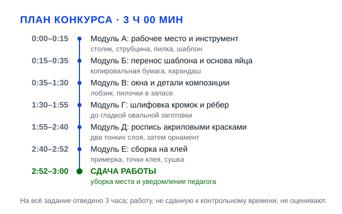
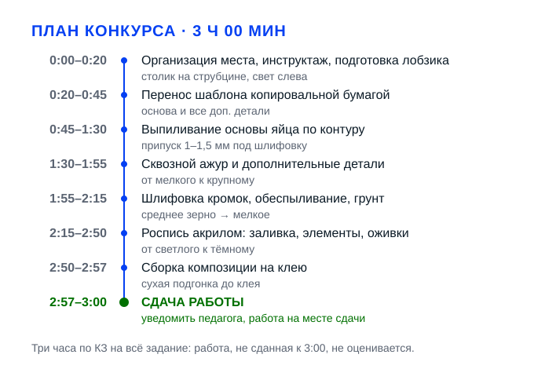
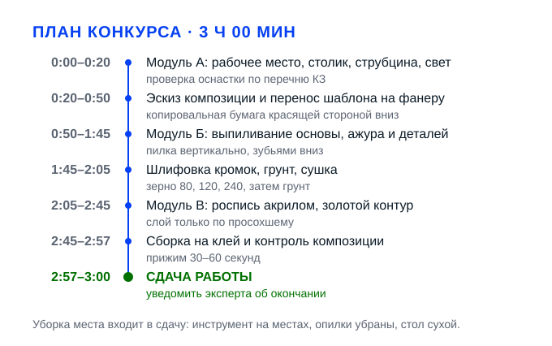

Художественная роспись по дереву (ФВ)
Задания ниже — официальные файлы «Абилимпикс» (источник: abilympics-russia.ru), разложенные по категориям. Решения написаны по тексту задания, регламенту и критериям оценки; в них указано, что именно проверяет эксперт.
Школьник
14–16 лет, базовый уровень заданияВ официальном файле категории не разделены отдельными разделами — приводим задание целиком; различия по категориям смотрите в таблице модулей.
Пошаговое решение
Задание категории «Школьники» — изготовить композицию «Пасхальное яйцо»: выпилить из фанеры основу и дополнительные детали, обработать кромки наждачной бумагой, расписать заготовки акриловыми красками и собрать всё на клей. На работу отведено три часа, и внутри них задана последовательность из семи пунктов: организация места, перенос шаблона копировальной бумагой, выпиливание основы, выпиливание дополнительных деталей, шлифовка, роспись, сборка. Инструмент простой — лобзик, струбцина, выпиловочный столик, но материала на переделку нет: фанера в наборе одна, поэтому ошибка в разметке или косой рез уже не исправляются. Главные ловушки — слабо натянутая пилка, поворот лобзика вместо заготовки и спешка на шлифовке: каждая из них видна на готовом изделии и снимает баллы сразу по нескольким критериям. Ниже — весь путь по шагам, от закрепления столика до сдачи работы с уведомлением педагога.

Задача 1. Организовать рабочее место и подготовить инструментМодуль А · 15 минут из 3 часов
До первого реза должно быть готово всё: закреплённый выпиловочный столик, заправленный лобзик с правильно натянутой пилкой, осмотренная фанера с выбранной лицевой стороной и выставленный свет. На эту часть уходит около пятнадцати минут из трёх часов, и они возвращаются сторицей: любая недоделка здесь превращается в брак на контуре, который уже не исправить, потому что фанера в наборе одна.
Действие 1.1. Осмотреть место и разложить инструмент
Шаг 1.1.1
Первым делом ставим выпиловочный столик на стол и крепим его струбциной к столешнице с правого края, если работаем правой рукой, — так рабочая рука не будет задевать за край стола. Винт струбцины затягиваем до упора, но без чрезмерного усилия: столик должен держаться намертво, а не продавливать фанеру столешницы. Проверяем, что верхняя плоскость столика выступает над краем стола на десять–пятнадцать сантиметров и снизу ничего не мешает ходу лобзика: пилка при полном ходе уходит вниз на всю рабочую длину, и под столиком должно быть пусто.
Выпиловочный столик — не украшение, а единственный способ держать заготовку ровно: без него фанера лежит на столе, пилка цепляет столешницу, а линия уходит вкось. В перечне инструментов конкурсного задания он идёт в перечне отдельной строкой, и от него зависит вся геометрия изделия, то есть результат, который потом оценивают как композицию «Пасхальное яйцо». На всю работу отведено три часа, и переделать испорченный контур будет нечем.
Столик не шатается, если нажать на него ладонью сверху; винт струбцины затянут, а губки не касаются самой заготовки. Под столиком свободно проходит рука, пилка при ходе вниз не задевает столешницу. Покачайте столик из стороны в сторону — люфт больше миллиметра недопустим.
Типичная ошибка — прижать столик рукой и начать пилить: при первом же усилии он сдвигается, и линия реза уходит в сторону на два–три миллиметра, а для яйца с плавным контуром это уже заметный брак. Вторая ошибка — закрепить столик так, что его плоскость утопает ниже края стола: тогда заготовка ложится на столешницу, а не на столик, и пилка гнётся.
Эксперт подходит к рабочему месту в первые минуты и смотрит именно на крепление: зажата ли струбцина, стоит ли столик устойчиво. Это первый видимый признак того, что участник понимает технологию, а не просто взял инструмент в руки.
Шаг 1.1.2
Раскладываем инструмент по постоянным зонам и больше их не меняем. Справа, под правую руку, кладём лобзик и коробочку с пилочками так, чтобы сменная пилка бралась вслепую; слева — шаблон, карандаш, копировальную бумагу и линейку; ближе к центру, но вне зоны стружки, — наждачную бумагу и кисти. Всё, что понадобится не раньше второго часа (краски, клей, банка с водой), убираем на край стола или в контейнер: на столе шириной около метра каждый лишний предмет становится препятствием.
Порядок на столе — это не эстетика, а время. На всё задание даётся три часа, и каждое движение в поисках карандаша или пилочки съедает секунды, которые потом не вернуть. Кроме того, в задании инструмент перечислен поимённо, и эксперт сверяет, всем ли участник пользуется по назначению и ничего ли не потерял к концу работы.
Проверьте себя простым тестом: закройте глаза и протяните руку — пилочка, карандаш и наждачная бумага должны оказаться там, где вы ждёте. На столе нет чашки, телефона и посторонних листов. Копировальная бумага лежит красящей стороной вверх и не пачкает соседние предметы.
Частая ошибка — разложить всё «как удобно сейчас» и потом весь конкурс переставлять. Ещё хуже — положить копировальную бумагу красящей стороной вниз прямо на столешницу: через минуту краска окажется на ладонях, а потом на лицевой стороне фанеры, и оттереть её без следа не получится.
Смотрит на организацию в целом: есть ли зоны, не мешает ли участник сам себе. Отдельно отмечает, лежат ли пилочки в упаковке, а не россыпью, — рассыпанные пилочки тупятся друг о друга.
Шаг 1.1.3
Садимся так, чтобы лампа или окно были слева и чуть впереди, а тень от руки не падала на линию разметки. Стул подвигаем к столу настолько, чтобы корпус был почти вертикален, а предплечье лежало на столе; если работаем стоя, ставим столик на высоту, при которой лобзик ходит свободно, а плечо не поднято. Заготовку располагаем на расстоянии тридцати–сорока сантиметров от глаз — именно это расстояние указано в задании, и проверить его просто: вытянутая рука почти касается фанеры.
На расстоянии тридцати–сорока сантиметров глаз держит линию в фокусе и не устаёт за три часа; ближе — и уже к середине работы контур начинает «плыть», а тонкие внутренние перемычки просто не видны. Свет слева убирает тень от собственной руки, из-за которой участник режет по тени и уходит от линии на миллиметр-два, а это на плавной дуге уже заметно.
Тень от лобзика не закрывает линию разметки; голова не наклонена к заготовке, спина не согнута. Проверьте расстояние: от глаз до фанеры примерно сорок сантиметров, локоть лежит на столе, а не висит. Если приходится щуриться — добавьте свет, а не наклоняйтесь ближе.
Ошибка — сесть «как получилось», сгорбившись над заготовкой: через час начинает болеть шея, движения теряют точность, и на плавных участках контура появляются ступеньки. Вторая ошибка — работать против света: рука отбрасывает тень точно на линию, и участник ведёт пилку по тени, а не по карандашу.
Проверяет посадку и освещённость: по требованиям к рабочим местам норма — не менее трёхсот люкс. Эксперт видит, наклоняется ли участник к работе вплотную, — это первый признак, что света или зрения не хватает для точной линии.
Действие 1.2. Подготовить лобзик и пилочки
Шаг 1.2.1
Берём лобзик и осматриваем его по трём точкам: рамка не погнута и без трещин, оба зажима — верхний и нижний — целые и с полными винтами, ручка сидит плотно и не проворачивается. Винты зажимов проверяем на ход: они должны отворачиваться от руки, без закусывания, потому что менять пилку придётся не один раз. Если на винте сорвана резьба или «слизана» головка, сразу меняем лобзик у эксперта — это делается до старта, а не в середине реза.
Рамка с трещиной ломается на самом ответственном участке, как правило на длинной прямой, когда натяжение максимально. Сорванный винт зажима означает, что пилка начнёт гулять в держателе, а это не просто кривой рез: пилка выходит из зажима и рвётся, и на замену уходит время из тех трёх часов, что отведены на всё задание.
Покачайте рамку за верхнюю дугу: люфта быть не должно, но и следов изгиба нет — поставьте лобзик на стол и посмотрите, лежат ли обе опоры одновременно. Винты отворачиваются и заворачиваются от руки до конца, резьба чистая, без стружки.
Самая дорогая ошибка — начать работу с лобзиком, у которого рамка уже подгибалась: на десятом сантиметре пилку начинает уводить в сторону, и участник компенсирует наклоном, заваливая рез. Вторая — не проверить зажим и потерять пилку в первом же отверстии.
Смотрит на исправность инструмента до старта: это пункт охраны труда, по которому участника могут не допустить к работе. Исправный, но не проверенный лобзик — риск, который виден по первой же сорванной пилке.
Шаг 1.2.2
Выбираем пилочку по толщине фанеры: для трёхмиллиметровой достаточно номера один с мелким зубом, для четырёх-пяти миллиметров берём номер два, а для фанеры толще пяти миллиметров — номер три, иначе полотно уводит. Смотрим на зубья: они должны быть ровными, без заваленных вершин, и разведёнными в стороны — развод даёт пропил шире полотна и не позволяет пилке зажимать. На полотне не должно быть ржавчины: она работает как абразив и ускоряет износ.
Мелкий зуб на тонкой фанере даёт чистый край без скола, а крупный на той же фанере рвёт волокна и оставляет бахрому, которую потом приходится снимать наждачной бумагой, рискуя нарушить контур. Развод — единственная причина, по которой пилка не заклинивает в пропиле: без него полотно греется, гнётся и ломается.
Проведите пальцем по зубьям вдоль полотна — они должны цеплять в одну сторону, к ручке. Посмотрите на просвет: полотно прямое, без волны. Сомневаетесь в номере — возьмите более мелкий: он режет медленнее, но точнее, а время на контур у нас есть.
Типичная ошибка — взять первую попавшуюся пилочку и пилить как пойдёт: крупный зуб на тонкой фанере вырывает куски на выходе, и кромка получается рваной настолько, что её не спасает шлифовка. Вторая ошибка — поставить пилку с заваленными зубьями: она режет вбок, и контур уводит в сторону от линии.
Обращает внимание, осознанно ли выбрана пилка: участник смотрит на толщину фанеры и на номер, а не берёт наугад. На категории школьников это один из самых показательных признаков подготовки.
Шаг 1.2.3
Ставим пилку в нижний зажим так, чтобы зубья смотрели вниз, к ручке, и затягиваем винт; затем продеваем верхний конец в верхний зажим и натягиваем. Натяжение проверяем щипком: полотно должно коротко звенеть, как струна, и почти не прогибаться под пальцем. Перетягивать нельзя — полотно лопнет у зажима, а недотянутое будет вибрировать и уводить рез. Полотно не должно выходить за габарит рамки больше чем на пару миллиметров с каждой стороны.
В задании прямо сказано: пилка располагается вертикально, зубчики смотрят вниз, полотно туго натянуто. Это не формальность: слабое натяжение даёт вибрацию, из-за которой пропил становится шире полотна и кромка выходит волнистой, а перетянутая пилка рвётся в самый неподходящий момент, чаще всего на дуге.
Оттяните пилку пальцем в сторону на пару миллиметров и отпустите — она должна вернуться с коротким звоном. Зубья смотрят вниз: проведите ногтем от ручки вверх, ноготь скользит, вниз — цепляет. Полотно стоит вертикально относительно рамки, без перекоса.
Классика — поставить пилку зубьями вверх: она не режет при рабочем ходе, а трётся, и участник давит сильнее, ломая полотно. Вторая ошибка — натянуть на глаз: пилка вибрирует, рез уводит, и на длинном участке контура это два–три миллиметра брака.
Смотрит на установку пилки в первые минуты: направление зубьев и натяжение видны сразу, и по ним эксперт делает вывод, знаком ли участник с инструментом вообще.
Действие 1.3. Подготовить фанеру и шаблон
Шаг 1.3.1
Кладём фанеру на стол и осматриваем обе стороны: ищем сучки, трещины, тёмные полосы, следы клея и участки с расслоением по кромке. Лицевой выбираем ту сторону, где меньше дефектов, — именно она пойдёт под роспись, а обратная останется тыльной. Прикладываем шаблон и проверяем, что контур целиком укладывается на чистом участке, а не проходит через сучок или тёмную полосу.
Сучок — это место, где пилка уводит в сторону и где при шлифовке появляется вырыв: волокно вокруг него режется иначе, чем остальная фанера. Если шаблон лёг на дефект, дефект окажется на лицевой стороне готового яйца, а перевернуть заготовку уже не получится: фанера в наборе одна, и запасной нет.
Приложите шаблон и обведите взглядом: под контуром нет сучков, трещин и расслоений. Кромка листа ровная, без сколов шпона, толщина одинаковая по всей площади — проверьте линейкой в четырёх точках. На кромке листа нет тёмных масляных пятен, которые потом проступят под краской.
Ошибка — начать с красивой стороны, не посмотрев на обратную: под росписью обнаруживается сучок, краска на нём ложится пятном, и весь декор приходится строить в обход. Вторая — взять фанеру с расслоением по кромке: при выпиливании шпон отслаивается, и кромка выходит рваной.
Оценивает, выбрана ли лицевая сторона осознанно и нет ли на заготовке дефектов, которые участник просто не заметил. Это видно уже по тому, как расположен контур на листе.
Шаг 1.3.2
Кладём шаблон на выбранную сторону, выравниваем по волокну — яйцо лучше ставить так, чтобы длинная ось шла вдоль волокон, тогда при выпиливании кромка получается чище, — и обводим габарит карандашом на два–три миллиметра наружу от контура. Этот внешний прямоугольник нужен не для красоты: по нему видно, сколько материала остаётся в запасе, и по нему удобно проверять, не сместился ли шаблон при переносе.
Запас в два–три миллиметра — это страховка на первый рез: если пилка пойдёт чуть наружу, контур ещё можно поправить шлифовкой, а не переделывать деталь целиком. Ориентация вдоль волокон снижает сколы: поперёк волокна фанера скалывается чаще, и кромка требует больше шлифовки, а времени на неё в трёхчасовом задании немного.
Шаблон лежит без перекоса: расстояния от контура до кромки листа слева и справа отличаются не больше чем на два миллиметра. Габарит обведён одной тонкой линией, без двойного прохода. Шаблон не свисает с края фанеры.
Частая ошибка — приложить шаблон вплотную к кромке листа: тогда с одной стороны запаса нет вообще, и любое отклонение пилки выводит рез за край заготовки. Вторая — обвести шаблон дважды, чтобы виднее: получается двойная линия, и участник режет между ними, теряя точность.
Смотрит на расположение контура относительно кромок и волокон: грамотный участник оставляет запас и учитывает направление волокна, и это видно ещё до первого реза.
Задача 2. Перенести шаблон и выпилить основу пасхального яйцаМодуль Б · 20 минут из 3 часов
Здесь решается форма изделия: линия переносится копировальной бумагой, а потом по ней идёт пилка. Ошибка в разметке стоит дороже, чем ошибка реза, потому что исправлять её придётся уже на выпиленной детали. Всё действие подчинено одному правилу из задания: движения без рывков, на всю длину полотна, режет только ход сверху вниз, а заготовку разворачивает вторая рука.
Действие 2.1. Перенести шаблон на фанеру
Шаг 2.1.1
Кладём копировальную бумагу красящей стороной вниз, на фанеру, и разглаживаем ладонью, чтобы она легла без складок; сверху кладём шаблон и фиксируем всю пачку так, чтобы она не могла сдвинуться: двумя кусочками малярного скотча по краям или струбциной за габаритную рамку. Проверяем пальцем: ни один из трёх слоёв не ходит относительно другого. Скотч прижимаем ногтем по всей длине, чтобы он держал не только за края.
Сдвиг хотя бы на миллиметр при обводке даёт двойной контур, и участник пилит между линиями, теряя геометрию яйца. В задании перенос шаблона копировальной бумагой и карандашом — отдельный пункт последовательности, то есть проверяется не только результат, но и способ: копирка должна лежать между шаблоном и фанерой, красящим слоем вниз.
Нажмите на угол шаблона и отпустите — пачка не смещается. Копирка не выглядывает за шаблон больше чем на сантиметр, иначе краска отпечатается на фанере в ненужном месте. Скотч держится за фанеру, а не за один только шаблон.
Ошибка — придерживать шаблон левой рукой и обводить правой: рука неизбежно смещает лист, и на длинной дуге контур раздваивается. Вторая — положить копирку красящей стороной вверх: отпечатка не будет вообще, и участник решит, что копирка плохая.
Наблюдает за фиксацией: закреплённые слои — признак того, что участник понимает причину брака, а не борется с ним потом. Отдельно отмечает, не придерживает ли участник шаблон рукой: это самая частая причина двойного контура.
Шаг 2.1.2
Обводим контур карандашом средней твёрдости одним уверенным проходом, держа карандаш почти вертикально и ведя линию на себя; нажим ровный, без остановок на полпути, потому что в месте остановки линия всегда утолщается. Сначала обводим внешний контур яйца, потом внутренние элементы, и только после этого снимаем шаблон. Линию ведём по самому краю шаблона, не отступая от него.
Мягкий карандаш даёт жирную линию, которая смазывается под пальцами и пачкает светлую фанеру, а твёрдый продавливает волокно, и бороздка потом проступает под краской. Один проход вместо двух-трёх нужен потому, что каждая повторная обводка расширяет линию: вместо ориентира толщиной в полмиллиметра получается полоса в два миллиметра, и точность реза падает.
Снимите шаблон и посмотрите на свет: линия тонкая, непрерывная, без разрывов и без двойного следа. Она читается по всей длине, включая пологие участки, где рука обычно ускоряется и линия пропадает. Внутренние элементы обведены так же чётко.
Самая частая ошибка — вести карандаш с сильным нажимом, чтобы точно было видно: борозда на фанере остаётся навсегда и после шлифовки проступает светлой полосой под акрилом. Вторая — обводить контур по частям, с остановками: на стыках линия ломается, и участник режет по излому.
Смотрит на качество линии до начала выпиливания: тонкая непрерывная линия — половина точного контура, и опытный эксперт видит это сразу. Если линия двойная или дрожащая, дальше разговор короткий: контур выйдет кривым.
Шаг 2.1.3
Снимаем скотч, аккуратно поднимаем шаблон и копирку, стараясь не провести краем по фанере. Сразу же проверяем отпечаток целиком и отмечаем центры внутренних отверстий: если в композиции есть сквозные окна, их центры накалываем шилом или ставим точку карандашом по линейке. Точки ставим с запасом от линии контура — не ближе двух–трёх миллиметров. Отпечаток лучше смотреть при боковом свете — так видны самые слабые участки.
Пока шаблон лежит на месте, легко проверить, совпал ли отпечаток с оригиналом; после снятия сверить уже не с чем. Центры отверстий нужны до первого реза, потому что отверстие под заправку пилки сверлится или прокалывается именно по центру будущего окна, и ошибка на два миллиметра означает, что пилка выйдет за линию.
Отпечаток совпадает с шаблоном по всем характерным точкам: вершина, основание, самая широкая часть. Все центры отмечены и видны. На фанере нет следов копирки вне контура — если есть, стираем мягким ластиком, а не пальцем.
Ошибка — снять шаблон, не проверив отпечаток: половина контура не пропечаталась, а обнаруживается это уже после первого реза. Вторая — наколоть центр отверстия прямо на линии контура: при заправке пилки она гарантированно срежет край окна.
Проверяет полноту отпечатка и наличие разметки под внутренние элементы. Разметка центров заранее — признак того, что участник продумал порядок работы.
Действие 2.2. Заправить пилку и войти в материал
Шаг 2.2.1
В каждом отмеченном центре делаем отверстие под пилку: сверлом три миллиметра на малых оборотах или шилом, если фанера тонкая, — но шилом только на трёхмиллиметровой фанере, иначе шпон расслаивается. Сверлим с лицевой стороны, подложив под заготовку брусок, чтобы на выходе не вырвать волокна. Отверстие должно быть чуть больше толщины полотна, но заметно меньше ширины окна.
Пилка не входит в фанеру боком: её надо продеть в отверстие и только потом натянуть. Если сверлить без подкладки, на выходе сверло вырывает кусок шпона, и этот вырыв остаётся на лицевой стороне — под краской он будет виден как вмятина. Отверстие шире окна недопустимо: тогда окно испорчено ещё до начала работы.
Отверстия ровные, без скола на выходе, диаметр одинаковый во всех окнах. Пилка проходит в отверстие свободно, без закусывания. Расстояние от края отверстия до линии контура окна — не меньше полутора миллиметров.
Частая ошибка — сверлить на полных оборотах без подкладки: на выходе вырывается конус шпона, и лицевая сторона испорчена в самом заметном месте. Вторая — колоть шилом толстую фанеру: расслоение идёт по клеевому шву, и кромка окна получается рыхлой.
Оценивает аккуратность подготовки отверстий: чистый край отверстия — показатель того, что участник умеет работать не только лобзиком. Заодно смотрит, не осталось ли на лицевой стороне следа от шила или сверла.
Шаг 2.2.2
Ослабляем верхний зажим, продеваем свободный конец пилки в отверстие снизу вверх, ставим заготовку на выпиловочный столик и снова зажимаем пилку, натягивая её щипком до звона. Заготовку при этом держим так, чтобы она лежала на столике всей плоскостью, а не висела на пилке. Зубья по-прежнему смотрят вниз. Если пилка входит туго, отверстие чуть расширяют сверлом того же диаметра, а не рассверливают на глаз.
Заправка через отверстие — единственный способ выпилить замкнутый внутренний контур: снаружи пилка туда не попадёт. Натяжение после каждой заправки проверяется заново, потому что при ослаблении зажима пилка садится глубже и прежнее натяжение теряется, а слабая пилка на внутреннем контуре рвётся чаще всего.
Заготовка лежит на столике без качания, пилка стоит вертикально и звенит при щипке. Проверните заготовку вокруг пилки на полный оборот: ничего не цепляет, пилка не задевает край отверстия. Зажим затянут, конец пилки не выступает больше чем на пять миллиметров.
Ошибка — зажать пилку, не проверив, что она попала в отверстие, а не рядом: пилка протыкает фанеру в случайном месте, и на лицевой стороне остаётся прокол. Вторая — работать с ослабленным зажимом: пилка выходит из держателя посреди реза, и окно остаётся недопиленным.
Смотрит на заправку: правильно натянутая пилка и заготовка, лежащая на столике, — это техника, а не удача. Отдельно проверяет, лежит ли заготовка на столике, а не висит на пилке: висящая заготовка — гарантированный косой рез.
Шаг 2.2.3
Начинаем не с самого заметного места контура, а с участка, где ошибка меньше всего видна: первые два–три сантиметра нужны, чтобы поймать ход пилки. Включаем лобзик на средний ход, ставим его вертикально и делаем короткие движения с небольшой амплитудой, пока пилка не войдёт в материал на всю глубину зуба. Выводим рез на линию плавно, за два–три сантиметра до неё, а не рывком у самой линии.
Первый запил — это калибровка: рука привыкает к сопротивлению фанеры, а глаз к тому, как пилка уводит вбок. Если начать сразу с ответственного участка, ошибка новичка останется на самом видном месте. Короткая амплитуда на входе не даёт пилке выскочить из пропила и не рвёт кромку.
Пилка идёт по линии, а не рядом с ней; пропил ровный, без ступеньки на входе. Кромка на выходе пилки не имеет вырывов. Если рез ушёл в сторону больше чем на миллиметр — остановитесь и вернитесь к линии плавной дугой, пока это ещё возможно.
Типичная ошибка — включить полный ход и сразу давить: пилка выскакивает из пропила, оставляя скол, а на тонкой фанере просто ломается. Вторая — начать с самой заметной части контура, где любая неровность будет бросаться в глаза.
Наблюдает за первым запилом внимательнее, чем за остальными: по нему видно, владеет ли участник инструментом. Смотрит, выведен ли рез на линию плавно или участник догоняет её рывком у самого контура.
Действие 2.3. Выпилить контур яйца
Шаг 2.3.1
Пилим ровными движениями вверх-вниз с максимальной амплитудой, задействуя всю рабочую длину полотна, без рывков и без нажима на заготовку. Режет только ход сверху вниз — на обратном ходе пилку чуть приподнимаем, не отрывая от линии. Корпус держим неподвижно, работают плечо и предплечье, а не кисть: кисть быстро устаёт и начинает заваливать пилку. Плечо работает как рычаг, а кисть только держит ручку.
В задании перечислены ровно эти требования: движения без резких рывков, с максимальной амплитудой, пиление происходит только при ходе сверху вниз, давить на заготовку и создавать боковое давление нельзя. Нарушение любого из них сразу видно на кромке: короткая амплитуда даёт пилообразный след, нажим — увод полотна, боковое давление — косой рез.
Стружка летит мелкими опилками, а не крупными кусками; пилка движется свободно, без закусывания. Кромка за пилкой ровная и перпендикулярная плоскости листа. Если приходится давить — пилка тупая или амплитуда слишком мала.
Ошибка — пилить короткими частыми движениями, как швейной машинкой: середина полотна не работает, зубья быстро тупятся, а кромка выходит волнистой. Вторая — давить на лобзик: полотно изгибается, и рез уходит от линии тем сильнее, чем толще фанера.
Смотрит на характер движений: свободный ход на всю длину полотна и отсутствие нажима — главный признак правильной техники на этой компетенции. По характеру движений он сразу понимает, сколько участник работал лобзиком до конкурса.
Шаг 2.3.2
На поворотах не разворачиваем лобзик: он остаётся на месте и смотрит строго вертикально, а заготовку плавно разворачивает вторая рука — именно так это описано в задании. Скорость поворота согласуем с ходом пилки: пока пилка идёт вниз, заготовка поворачивается чуть-чуть, на обратном ходе — ещё немного. На крутых дугах яйца поворачиваем мелкими шагами, по два–три градуса.
Разворот лобзика — это боковое давление на полотно, а полотно на это отвечает уводом: на дуге рез уходит внутрь или наружу, и контур теряет симметрию. Поворот заготовкой распределяет усилие по кромке и не гнёт пилку, поэтому дуга получается плавной и без ступенек.
Кромка на дуге гладкая, без граней и ступенек. Заготовка поворачивается без рывка, пилка не закусывает. Проверьте симметрию: расстояние от вершины яйца до самой широкой части слева и справа должно быть одинаковым.
Классическая ошибка новичка — крутить лобзик вокруг заготовки: пилка гнётся, и на дуге появляется характерная ступенька, которую потом не убрать шлифовкой без потери формы. Вторая — поворачивать заготовку рывком на обратном ходе пилки: кромка скалывается.
Поворот заготовкой, а не инструментом, — тот приём, который эксперт ищет глазами в первую очередь: он показывает, что участник понимает физику реза. Если лобзик крутят вокруг заготовки, это видно по наклону рамки на дуге.
Шаг 2.3.3
У яйца два радиуса — широкий у основания и узкий у вершины, и на каждом пилка ведёт себя по-разному: на широкой дуге можно пилить быстрее, на узкой — медленнее и с меньшей амплитудой, потому что там короче участок между поворотами. Следим за линией не в точке выхода пилки, а на два–три сантиметра вперёд: глаз должен вести рез, а не догонять его. На широкой дуге заготовку поворачивают крупнее, на узкой — мелкими шажками.
Одинаковая скорость на разных радиусах — главная причина сплюснутой вершины и угловатого основания: на узкой дуге участник не успевает повернуть заготовку и срезает лишнее. Взгляд вперёд по линии даёт руке время на поворот, и контур остаётся плавным.
Приложите шаблон к выпиленной части и посмотрите на просвет: расхождение не больше миллиметра. Проведите пальцем по кромке — она должна быть плавной, без изломов. Симметрию проверяем складыванием: мысленно разделите яйцо по длинной оси, половинки должны совпадать.
Ошибка — держать одну скорость по всему контуру: на вершине срезается лишнее, и яйцо становится угловатым, а это уже не пасхальное яйцо, а бесформенная заготовка. Вторая — смотреть точно на зубья: рука не успевает реагировать, и линия уходит на два–три миллиметра.
Оценивает плавность и симметрию контура — это визуальная часть результата, которую видно и без шаблона. Отдельно смотрит вершину и основание: там видно, держал ли участник разную скорость на разных радиусах.
Шаг 2.3.4
К концу контура заготовка становится лёгкой и теряет жёсткость: последние сантиметры пилим медленнее и придерживаем отрезаемую часть второй рукой, чтобы она не отломилась и не вырвала волокна на кромке. Когда остаётся два–три миллиметра, поддерживаем деталь снизу и даём пилке выйти спокойно. Снятую деталь сразу кладём на ровную поверхность, а не на край стола.
Отломленный на весу кусок уносит с собой часть кромки: на фанере это вырыв в два–три миллиметра, который видно и после шлифовки, и под краской. Падение детали на пол — это скол угла, а деталь у нас одна и запасной нет. Кроме того, кромка в месте выхода — самое слабое место детали, и трещина оттуда пойдёт по всей плоскости.
Кромка в месте выхода пилки целая, без скола и без бороды из волокон. Деталь не имеет трещин у тонких мест. Сравните получившийся контур с шаблоном по трём точкам: вершина, основание, самая широкая часть.
Ошибка — дождаться, пока деталь отвалится сама: она падает кромкой вниз и скалывается либо отламывается с вырывом. Вторая — придерживать деталь сверху ладонью: рука попадает в зону хода пилки, а это уже травма, а не брак.
Смотрит на кромку в месте выхода и на то, как участник обращается с почти готовой деталью: аккуратность на последних сантиметрах отличает опытного от новичка.
Задача 3. Выпилить дополнительные детали и отшлифовать заготовкиМодули В–Г · 80 минут из 3 часов
К этому моменту основа готова, но композиция ещё не собрана: нужны внутренние окна, детали декора и основание. Потом всё это уходит на шлифовку — от неё зависит, как ляжет краска и будет ли кромка выглядеть гладкой овальной заготовкой, как того требует задание. Восемьдесят минут на выпиливание и шлифовку — самый долгий отрезок конкурса, и именно здесь теряется больше всего времени на переделки.
Действие 3.1. Выпилить внутренние окна
Шаг 3.1.1
Прежде чем пилить первое окно, пронумеруйте их карандашом на тыльной стороне: сначала те, что ближе к центру, потом те, что у кромки. Между окнами должно остаться не меньше пяти–семи миллиметров перемычки, и это расстояние проверяем линейкой, а не на глаз. Окна, которые подходят близко к внешнему контуру, оставляем на самый конец — к тому моменту заготовка станет легче, и её проще держать.
Порядок от центра к краю нужен потому, что каждое выпиленное окно снижает жёсткость заготовки: если начать с крайних, деталь начнёт играть, и точность на остальных окнах упадёт. Перемычка тоньше пяти миллиметров на фанере ломается при шлифовке или от малейшего нажима кистью при росписи.
Все окна пронумерованы, расстояния между ними и до внешнего контура проверены линейкой и не меньше пяти миллиметров. Номера видны и не смазываются. Ни одно окно не пересекает линию внешнего контура. Номера нанесены так, чтобы их не стёрла рука при работе.
Ошибка — пилить окна в том порядке, в каком они расположены на рисунке: к третьему окну заготовка теряет жёсткость, и кромки соседних окон плывут. Вторая — оставить перемычку в два миллиметра: она ломается, и всё окно превращается в один провал.
Смотрит на разметку и на последовательность: продуманный порядок виден по тому, как участник ведёт работу без метаний. Если участник пилит окна подряд, не глядя на разметку, значит, порядок не продуман.
Шаг 3.1.2
Внутри окна пилим по линии против часовой стрелки, если смотреть с лицевой стороны: тогда пилка идёт по линии, а не по её тени, и вам видно кромку. Амплитуду держим короче, чем на внешнем контуре, — три–четыре сантиметра, потому что окно маленькое и пилку легко вывести за линию. На углах окна останавливаемся и поворачиваем заготовку на месте, не пытаясь проскочить угол ходом.
Внутри окна цена ошибки выше: срезанный лишний миллиметр уже не восстановить, а внешний контур ещё можно подправить. Короткая амплитуда даёт контроль над полотном, а поворот на месте не позволяет пилке увести угол вкось — на прямоугольных окнах это особенно заметно.
Кромка окна ровная, углы не завалены, перемычки целые. Пилка не выходила за линию: проверьте, приложив шаблон с окнами. Все окна одинаковой формы, если они должны быть одинаковыми. Кромки окон не имеют скола со стороны выхода пилки.
Ошибка — пилить окно на полной амплитуде: пилка выходит за линию на углах, и окно получается с ушами. Вторая — не поворачивать заготовку в углу, а тянуть пилку боком: полотно ломается, и на кромке остаётся скол.
Смотрит на внутренние кромки: именно они показывают уровень владения лобзиком, потому что требуют самой мелкой моторики. Ровная внутренняя кромка — самый честный показатель квалификации на этой компетенции.
Шаг 3.1.3
Подходя к перемычке, снижаем скорость и делаем последние два–три сантиметра почти без нажима, держа лобзик строго вертикально: любое отклонение от вертикали на тонкой перемычке даёт косой срез, и она выглядит тоньше, чем есть. Если перемычка кажется слишком тонкой, не пытайтесь её усилить — лучше сразу уменьшить соседнее окно на полмиллиметра. Вертикальность проверяем по рамке лобзика, а не по своему ощущению.
Перемычка — самое хрупкое место композиции, и оценивают её наравне с контуром: сломанная перемычка означает, что ажур не читается, а склеить её так, чтобы след не был виден, невозможно. Косой срез виден на просвет и под краской даёт тень. Именно поэтому перемычку ведут последней в окне, когда рядом уже нечего поддерживать.
Перемычки одинаковой ширины по всей длине, кромки перпендикулярны плоскости листа. Проверьте на просвет у лампы: не должно быть мест, где свет проходит через щель в клеевом шве. Слегка нажмите пальцем — перемычка не должна прогибаться.
Ошибка — торопиться на перемычке: последние сантиметры делают на общем ходу, и перемычка ломается. Вторая — подчистить перемычку наждачной бумагой с нажимом: она стачивается неравномерно и становится тоньше в середине.
Осматривает перемычки на просвет — это классический способ проверить и толщину, и качество реза. Толщину перемычки он проверяет на просвет у лампы и сравнивает с соседними.
Шаг 3.1.4
После последнего окна ослабляем верхний зажим, вынимаем пилку из отверстия и снимаем заготовку со столика, придерживая её двумя руками: ажурная деталь гнётся от собственного веса. Стружку из окон вытряхиваем над столом, а не сдуваем — пыль от фанеры раздражает глаза. Сразу осматриваем все окна подряд и отмечаем карандашом на тыльной стороне те, что требуют подчистки.
Ажурная заготовка теряет прочность: если тянуть её за край, она треснет по перемычке. Вытряхивать стружку, а не сдувать, нужно потому, что мелкая пыль остаётся на лицевой стороне и при росписи попадает в краску, давая шероховатость. Стружка в окнах мешает и при росписи: кисть цепляет опилки и тащит их по мокрому слою.
Все окна выпилены полностью, ни одно не осталось на волоске. Заготовка лежит на столе без коробления: приложите линейку к плоскости, просвет не больше миллиметра. Стружки в окнах нет. Отметьте карандашом окна, где кромка требует подчистки, — так вы не забудете о них до шлифовки.
Ошибка — вытащить заготовку за одно окно: перемычка ломается именно там. Вторая — оставить недопиленное окно на потом: пилка в нём зажимается, и при следующей заправке кромка рвётся. Третья — тянуть заготовку за перемычку, когда пилка ещё в отверстии: она рвётся именно там.
Смотрит на целостность ажура и на то, все ли окна доведены до конца: недопиленное окно видно сразу. Заодно смотрит, не осталось ли в окнах стружки: она мешает и при росписи, и при осмотре.
Действие 3.2. Выпилить детали композиции
Шаг 3.2.1
Выпиливаем основание композиции — подставку, на которую яйцо встанет: круг диаметром на десять–пятнадцать миллиметров больше широкой части яйца или овал по габариту. Контур размечаем циркулем от центра, а не от руки, и выпиливаем по внешней стороне линии, оставляя её саму нетронутой. В основании сразу предусматриваем площадку под клей или паз глубиной не больше половины толщины фанеры.
Основание держит всю композицию: если оно меньше яйца, изделие выглядит неустойчивым, а если паз глубже половины толщины, основание теряет прочность и ломается по пазу при первом же нажатии. Ровный круг, размеченный циркулем, читается как аккуратность, а круг от руки — как спешка.
Круг ровный: расстояние от центра до кромки одинаковое в четырёх точках. Основание стоит на столе без качания. Паз по ширине совпадает с толщиной яйца с зазором не больше полмиллиметра. Паз по глубине не больше половины толщины фанеры — проверьте штангенциркулем или линейкой.
Ошибка — выпилить основание на глаз, без циркуля: круг получается овальным, и на фотографии композиция смотрится небрежно. Вторая — сделать паз на всю толщину фанеры: основание раскалывается по нему. Третья — сделать основание вровень с яйцом: композиция выглядит как обрубок.
Смотрит на геометрию основания и на устойчивость собранной композиции: это первое, что проверяют, когда изделие ставят на стол. Отдельно смотрит, как основание соотносится с яйцом по размеру: слишком маленькое читается как ошибка.
Шаг 3.2.2
Остальные детали — листья, полотенце, завитки — переносим тем же способом, что и яйцо: копирка красящим слоем вниз, шаблон сверху, фиксация скотчем, обводка одним проходом. Детали выпиливаем попарно, если они симметричны: две половинки из одного места листа дают одинаковый рисунок волокон. Каждую деталь подписываем на тыльной стороне, чтобы потом не путать.
Симметричные детали из разных участков фанеры отличаются рисунком волокон и оттенком — на светлой росписи это заметно. Подпись на тыльной стороне экономит время на сборке, когда деталей пять-шесть и все похожи между собой. Кроме того, одинаковые по форме детали из разных мест листа по-разному ведут себя при шлифовке.
Детали совпадают с шаблоном по габариту, парные — между собой. Подписи читаются. Ни одна деталь не выходит за габаритную рамку, размеченную в начале работы. Подписи нанесены мягким карандашом, чтобы их можно было стереть перед сборкой.
Ошибка — выпиливать декор без шаблона, по памяти: парные элементы получаются разного размера, и композиция теряет симметрию. Вторая — не подписать детали: на сборке участник путает верх и низ, и клей схватывает деталь в неправильном положении.
Сравнивает парные детали между собой: разница в размере больше миллиметра видна и считается небрежностью. Он складывает парные детали лицом к лицу: несовпадение кромок видно сразу.
Шаг 3.2.3
Раскладываем все выпиленные детали на столе в том порядке, в каком они будут собираться, и пересчитываем: яйцо, основание, декор. Сверяемся с шаблоном и с пунктом задания, где сказано выпилить дополнительные детали пасхальной композиции, — комплект должен читаться как композиция, а не как набор обрезков. Если чего-то не хватает, выпиливаем сейчас, пока пилка заправлена и рука в форме.
Сборка идёт в конце, когда времени остаётся мало: обнаружить на этом этапе, что не хватает детали, значит либо отказаться от части композиции, либо выпиливать в спешке и портить. Пока инструмент на столе, деталь делается за три–четыре минуты. К тому же выпиливать в спешке — значит получить скол на кромке, который потом видно под краской.
Все детали из шаблона на месте, лишних нет. Раскладка читается как композиция: яйцо в центре, декор по сторонам, основание снизу. Ни одна деталь не потерялась под стружкой — проверьте стол и пол. Раскладку лучше зарисовать на обрезке, чтобы на сборке не собирать её заново.
Ошибка — считать комплект на глаз: не хватает одной детали, и композиция получается несимметричной. Вторая — потерять мелкую деталь в стружке и начать искать её в конце, когда каждая минута на счету. Третья — выпиливать деталь на глаз вместо шаблона, если она кажется простой.
Смотрит на раскладку до росписи: целостность композиции видна ещё до того, как появится цвет. Считает детали вместе с участником, сверяет с шаблоном и смотрит, читается ли раскладка как композиция.
Действие 3.3. Обработать кромки и рёбра наждачной бумагой
Шаг 3.3.1
Берём наждачную бумагу средней зернистости — восьмидесятый или сотый номер — и снимаем кромки, двигая бумагу вдоль кромки, а не поперёк: поперёк волокна шкурка вырывает волокна и оставляет борозды. Работаем на бруске или на деревянной колодке, обёрнутой шкуркой, чтобы не скруглить кромку подушечкой пальца. Сначала проходим внешний контур, потом кромки окон, потом плоскость.
Черновая шлифовка снимает следы пилки и заусенцы: без неё акрил ложится на махры и держится хуже, а кромка выглядит рваной. Колодка вместо пальца нужна потому, что палец повторяет форму кромки и скругляет её неравномерно, а на тонких перемычках это критично.
Кромка на ощупь гладкая, без заусенцев, но форма не изменилась: приложите шаблон, расхождение не больше миллиметра. На кромке нет тёмных полос от пилки. Плоскость не отшлифована до ямы в середине. На кромке не осталось бороды из волокон — она снимается только шкуркой вдоль кромки.
Ошибка — шлифовать поперёк кромки: на фанере появляются борозды и вырывы, которые потом видны под краской. Вторая — тереть пальцем без колодки: кромка скругляется, и яйцо теряет чёткий силуэт. Третья — шлифовать мокрой шкуркой: фанера поднимает ворс и сохнет заметно дольше.
Проводит пальцем по кромке — это стандартная проверка. Отдельно смотрит, не скруглён ли силуэт. Отдельно смотрит, не появились ли на кромке плоские фаски от слишком сильного нажима.
Шаг 3.3.2
Переходим на сто двадцатый, а затем на сто восьмидесятый номер и проходим те же места насухо, без нажима, меняя направление на противоположное предыдущему. Снимаем ворс: после первой чистовой проходки увлажняем поверхность чуть влажной тряпкой, даём высохнуть минуту-две и проходим ещё раз — ворс поднимается и срезается. Углы окон обрабатываем сложенной вчетверо шкуркой.
Ворс, поднятый влагой, делает поверхность шершавой уже после покраски: акрил поднимает волокна, и первый слой получается в пупырышках. Снятие ворса до росписи экономит целый слой краски и время сушки, а времени у нас три часа на всё задание. К тому же шершавая поверхность забирает больше краски, а её количество на конкурсе ограничено.
Проведите по плоскости ладонью — поверхность должна быть ровной, без ощущения щетинки. На косом свете у лампы нет царапин от крупного зерна. Углы окон не имеют заусенцев. На просвет у лампы не должно быть участков с муаром от круговых движений шкурки.
Ошибка — перескочить с восьмидесятого номера сразу на двести пятидесятый: крупные царапины не убираются, они заглаживаются, и после покраски проступают. Вторая — шлифовать без снятия ворса: первый слой акрила сохнет шершавым, и его приходится перекрывать вторым.
Смотрит на поверхность на косом свете: именно так видны царапины, которые не видны при прямом освещении. Он проводит по плоскости тыльной стороной ладони: шероховатость чувствуется лучше, чем видна.
Шаг 3.3.3
Смахиваем пыль мягкой сухой кистью из всех окон и с кромок, затем протираем плоскость слегка влажной тряпкой и сразу вытираем насухо. Пыль не сдуваем ртом: от неё остаются капли, а на фанере — разводы. Кисти и тряпку держим отдельно от тех, которыми будем работать с краской. Окна проходим кистью в одном направлении, чтобы не загнать пыль в перемычки и углы.
Пыль от фанеры — тот же абразив: под краской она даёт шероховатость и мешает сцеплению, а на светлом акриле видна как серая крупа. Влажная протирка убирает то, что кисть не сняла, но только если сразу вытереть насухо, иначе фанера снова поднимает ворс.
На тёмной тряпке после протирки не остаётся светлого налёта. На плоскости нет капель и разводов. В окнах не осталось пыли — проверьте, посмотрев на просвет. После протирки поверхность не должна быть холодной на ощупь — значит, влага ещё не ушла.
Ошибка — начать красить на пыльной поверхности: акрил скатывается в катышки, и первый слой приходится смывать. Вторая — протереть влажной тряпкой и не вытереть: фанера набухает по кромке, и ворс поднимается сильнее, чем до шлифовки.
Обращает внимание на подготовку под роспись: чистая поверхность — условие ровного цвета. Смотрит на просвет окна и на кромки: там пыль остаётся дольше всего.
Шаг 3.3.4
Перед росписью проверяем плоскость на просвет: прикладываем линейку или шаблон к лицевой стороне и смотрим, нет ли зазора больше миллиметра. Тонкие перемычки и углы окон дополнительно проходим самым мелким номером без нажима и слегка притупляем острие угла, чтобы краска на нём не скалывалась. Кромки при этом не скругляем до мягкости: силуэт должен остаться чётким.
Зазор под линейкой означает, что заготовка выгнулась: краска ляжет неравномерно, а при сборке деталь не встанет в паз. Притуплённое острие угла держит краску лучше, потому что на острой кромке акриловая плёнка тоньше всего и скалывается первой. Кроме того, выгнутая деталь не даст ровного слоя краски: на выпуклой части он тоньше.
Зазор под линейкой не больше миллиметра. Углы окон не острые как бритва, но и не скруглённые. Плоскость равномерно матовая, без глянцевых пятен от нажима шкуркой. Проведите по кромке ногтем: он не должен цепляться за заусенец.
Ошибка — отшлифовать до идеала и скруглить все рёбра: силуэт яйца становится мягким, и работа теряет чёткость, за которую дают баллы. Вторая — оставить острые углы окон: краска на них скалывается при первой же сушке.
Смотрит силуэт на просвет и на свет: чёткая, но не острая кромка — признак того, что шлифовка сделана с пониманием. Смотрит силуэт на просвет: ровная, но не зализенная кромка говорит о том, что шлифовка сделана с пониманием.
Задача 4. Расписать заготовки акриловыми краскамиМодуль Д · 45 минут из 3 часов
Роспись — та часть работы, по которой судят обо всём изделии: гладкая, но бледная или грязная по цвету заготовка проигрывает даже при идеальном контуре. Порядок здесь жёсткий: подготовка поверхности, проба цвета на обрезке, тонкие заливки в два слоя, и только потом орнамент и оживки. Акрил сохнет быстро, но не мгновенно, и это главный ограничитель темпа на этом отрезке.
Действие 4.1. Подготовить поверхность и краски
Шаг 4.1.1
Наносим первый слой — грунт или разбавленные белила — тонко, растирая кистью вдоль волокон и не оставляя луж. Акрил разводим водой не больше чем на четверть: слишком жидкий уходит в поры и не перекрывает текстуру, слишком густой ложится буграми. Слой должен быть тонким настолько, чтобы рисунок волокон ещё читался, но цвет фанеры уже не просвечивал пятнами.
Без грунта акрил на фанере сохнет неравномерно: там, где волокно плотнее, краска лежит на поверхности, а где рыхлее — впитывается, и получаются пятна, которые видно на светлом фоне. Тонкий слой сохнет за десять–пятнадцать минут, и это укладывается в сорок пять минут, отведённых на роспись.
Поверхность равномерно матовая, без блестящих луж и без сухих пропусков. Волокно читается, но не полосит. Через десять минут слой не липнет к тыльной стороне пальца. На кромках слой не должен быть толще, чем на плоскости, иначе там появятся потёки.
Ошибка — нанести грунт толстым слоем, чтобы наверняка: он сохнет втрое дольше, тянет время из росписи и даёт трещины при сушке. Вторая — разбавить акрил до состояния воды: краска впитается в волокно и не закроет фон.
Смотрит на равномерность первого слоя: пятна под краской видны и считаются нарушением технологии росписи. Он смотрит на свет: пятна от неравномерного впитывания видны именно так.
Шаг 4.1.2
Готовим палитру: на пластиковую крышку или блюдце выдавливаем нужные цвета небольшими порциями, по горошине, потому что акрил сохнет за десять минут и в большой порции просто застынет. Рядом ставим банку с водой для промывки и сухую тряпку для промакивания кисти; для тонких линий берём кисть номер один или два с острым кончиком, для заливок — плоскую номер шесть–восемь. Кисти не оставляем в воде: ворс заламывается, и тонкую линию уже не провести.
Порция с запасом — самая частая потеря времени: половина красок засыхает, а смешать нужный оттенок заново уже нечем, потому что пропорция забыта. Кисть, оставленная в воде, теряет форму за пять минут, а именно острой кистью делаются все оживки и тонкие линии орнамента.
На палитре нужные цвета, каждый отдельной каплей, без смешивания всё в кучу. Кисти держат форму: кончик острый, ворс не расходится. Вода чистая, тряпка сухая и лежит отдельно от работы. Кисть после промывки промакиваем о тряпку, а не стряхиваем — от стряхивания летят брызги.
Ошибка — выдавить краски помногу: к середине росписи они застывают плёнкой, и приходится разбавлять водой, теряя укрывистость. Вторая — держать кисти в банке с водой: ворс заламывается, и тонкая линия выходит мохнатой.
Смотрит на порядок на палитре и состояние кистей: это часть оценки аккуратности и организации. Отдельно отмечает, не разведены ли краски на глаз, без палитры.
Шаг 4.1.3
Прежде чем красить изделие, делаем пробник на обрезке той же фанеры: наносим по одному мазку каждого цвета и смотрим, как цвет выглядит на высохшем фоне, а не на мокром. Мокрый акрил темнее на один–два тона, и цвет, который на палитре кажется нужным, после высыхания оказывается бледнее. Если оттенок не тот, подмешиваем на пробнике, а не на изделии.
Проба на обрезке — единственный способ проверить укрывистость и оттенок без риска испортить лицевую сторону: акрил сохнет быстро, но не мгновенно, и стереть его с фанеры без следа нельзя. Особенно это важно для белого и жёлтого — они на фанерном фоне уходят в тепло.
На пробнике цвет тот, который задуман, и он не меняется после высыхания. Укрывистость достаточная: фон не просвечивает за один слой. Пятно пробника не попало на изделие. Пробник сушим рядом с работой, чтобы условия были те же: температура и сквозняк влияют на оттенок.
Ошибка — красить сразу на изделии: через десять минут выясняется, что цвет уехал, а исправить можно только перекрытием, и слой становится толстым. Вторая — проверять цвет на мокром мазке: после высыхания он всегда светлее.
Отмечает, работает ли участник с пробником: это признак осознанного подхода к цвету, а не «покрасил и ладно». Если пробника нет, он ждёт, что цвет уедет, и смотрит, как участник будет это исправлять.
Действие 4.2. Выполнить основные заливки
Шаг 4.2.1
Основной цвет наносим двумя тонкими слоями вместо одного толстого: первый — растирая вдоль волокон, второй — поперёк, после того как первый перестал липнуть. Между слоями проходит десять–пятнадцать минут, и это время не простаиваем: размечаем орнамент карандашом на уже просохшем участке. Краску набираем на кончик кисти, а не на весь ворс, иначе у кромки детали соберётся валик.
Два тонких слоя дают ровный цвет без потёков и сохнут быстрее, чем один толстый: толстый слой на фанере схватывается сверху, а внутри остаётся сырым, и при сушке его ведёт. Валик краски у кромки — это место, где потом появляется скол. К тому же второй слой ложится на схватившийся первый ровнее, чем на мокрый.
Цвет ровный по всей плоскости, без полос от кисти и без валика по кромке. Второй слой не съел текстуру фанеры полностью, если она должна читаться. На просвет нет мест, где фон просвечивает. На просвет у лампы нет полос, которые обычно остаются от сухой кисти.
Ошибка — наложить один жирный слой: он сохнет двадцать–тридцать минут, тянет время из росписи и даёт потёки по кромкам. Вторая — водить кистью в разных направлениях на мокром слое: краска начинает скатываться и оставляет полосы.
Смотрит на ровность заливки и на кромки: валик краски по кромке виден и на изделии, и на фотографии. Смотрит на кромки в первую очередь: именно там собирается лишняя краска.
Шаг 4.2.2
Границы между цветовыми зонами ведём по карандашной разметке, держа кисть вертикально к поверхности и не заходя на соседний цвет больше чем на полмиллиметра. Если нужен ровный край, подклеиваем малярный скотч по линии, красим от скотча и снимаем его, пока краска ещё сырая. Сначала заполняем светлые зоны, потом тёмные: тёмным легче перекрыть случайный заход светлого.
Порядок от светлого к тёмному экономит исправления: заход тёмной краски на светлую зону требует двух слоёв, а светлой на тёмную — одного. Скотч, снятый после высыхания, тянет за собой плёнку и оставляет рваный край. Кроме того, светлые тона на фанере просвечивают сильнее, и им всё равно нужен второй слой.
Края зон ровные, без ступенек и без ореола. Соседний цвет не заходит на этот больше чем на полмиллиметра. Скотч снят, клеевого следа на фанере нет. Проверьте границу на просвет: под краской не должно быть ступеньки из-за толщины слоя.
Ошибка — красить тёмным первым: любой заход виден, и приходится перекрывать светлым в два слоя, теряя время. Вторая — снимать скотч после высыхания: вместе с ним уходит кусок краски, и край получается рваным.
Оценивает чистоту границ: ровный край между цветами — один из главных визуальных критериев росписи. Он смотрит границы на расстоянии вытянутой руки и вблизи.
Шаг 4.2.3
Сушим естественно, при комнатной температуре: по требованиям к рабочим местам это двадцать один – двадцать четыре градуса, и при такой температуре слой акрила схватывается за десять–пятнадцать минут. Феном пользуемся только на холодном или тёплом режиме и держим его не ближе двадцати сантиметров, постоянно двигая. Деталь при сушке кладём на подставки, чтобы она не прилипла к столу.
Горячий фен на близком расстоянии запечатывает верхний слой, влага остаётся внутри, и при остывании краска идёт мелкими трещинами. Прилипшая к столу деталь отрывается вместе с куском краски на тыльной стороне, а иногда и с лицевой, если слой ещё сырой.
Слой не липнет к тыльной стороне пальца и не блестит. При наклоне детали краска не течёт. Тыльная сторона не имеет отпечатков стола. Проверьте тыльную сторону: на ней не должно быть отпечатков пальцев и следов стола.
Ошибка — сушить феном вплотную на горячем режиме: краска трескается, и трещины видны на светлом фоне. Вторая — класть сырую деталь на стол: она прилипает, и при отрыве остаётся след. Третья — сушить на сквозняке: верхний слой схватывается, а нижний остаётся сырым.
Смотрит на следы сушки: трещины и отпечатки — признаки спешки, которую эксперт фиксирует как нарушение технологии. Отдельно смотрит, нет ли на поверхности апельсиновой корки — признака перегрева феном.
Действие 4.3. Нанести орнамент и оживки
Шаг 4.3.1
Размечаем орнамент карандашом тонкой линией, начиная с осей: длинная ось яйца, поперечная по самой широкой части, затем делим каждую половину на равные части. Симметричные элементы откладываем от оси в обе стороны одним и тем же раствором циркуля, а не на глазок. Линии ведём слабым нажимом: по окрашенному фону мягкий графит снимается ластиком, а жёсткий оставляет борозду.
Яйцо читается симметричным только тогда, когда орнамент построен от осей: смещение на два–три миллиметра в одну сторону видно сразу, даже если каждый элемент сам по себе ровный. Слабый нажим нужен потому, что разметка идёт по уже окрашенной поверхности, и стереть её можно только мягким ластиком, не повредив слой.
Оси проведены и видны. Расстояния от оси до парных элементов одинаковые — проверьте циркулем или линейкой. Линии разметки тонкие и не продавливают краску. Проверьте разметку на симметричность, приложив линейку к оси: перекос виден сразу.
Ошибка — размечать на глаз: к четвёртому элементу накапливается смещение, и орнамент уезжает в сторону. Вторая — давить карандашом по краске: борозда остаётся и после стирания, и на светлом фоне видна.
Смотрит на симметрию орнамента относительно осей — это первое, что замечает глаз на фотографии работы. Он смотрит на работу с расстояния: смещённый орнамент заметен именно так.
Шаг 4.3.2
Тонкие линии ведём кистью номер один или два, держа её почти вертикально, кончиком, а не боком ворса; руку ставим на стол ребром ладони, чтобы она не дрожала на весу. Линию ведём от себя одним движением на всю длину элемента, а не дорисовываем по частям. Кисть обмакиваем на треть ворса и проворачиваем о край палитры, чтобы снять каплю. Локоть при этом не висит: он опирается на стол, иначе линия гуляет на длинных элементах.
Линия, проведённая по частям, всегда имеет утолщения в местах стыка, и на тонком орнаменте это заметно. Опора на ребро ладони гасит дрожание, которое появляется после часа работы лобзиком: кисть — самый точный инструмент, но и самый чувствительный к усталости руки.
Линии одинаковой толщины по всей длине, без утолщений и без хвостов. Концы линий аккуратные, не размазанные. Проверьте на расстоянии вытянутой руки: линия должна читаться, а не расплываться. Проверьте линию на просвет у лампы: утолщения видны как тёмные точки.
Ошибка — вести кисть боком, плашмя: линия получается широкой и с рваным краем. Вторая — набрать краску на весь ворс: капля стекает и ставит кляксу в самом заметном месте. Третья — вести линию на вдохе: рука поднимается, и линия уходит вверх.
Оценивает качество линии на близком расстоянии: толщина и чистота края — прямой показатель владения кистью. Он смотрит на концы линий: именно там видно, дорисовывал участник или вёл одним движением.
Шаг 4.3.3
Точки ставим обратной стороной кисти или зубочисткой, обмакивая её в краску на один–два миллиметра: так точка получается ровной и одинаковой. Оживки — короткие белые штрихи — наносим в последнюю очередь, когда основной цвет полностью высох, тонкой кистью с плотным белым акрилом без разбавления. Расстояние между точками держим по ритму, но сверяемся с разметкой.
Оживка включает роспись: белый штрих на цветном фоне даёт объём и читаемость на расстоянии. Наносить её на сырой слой нельзя — белый смешается с нижним цветом и уйдёт в грязь, а исправить это можно только перекрытием всей зоны. Кроме того, оживка задаёт ритм: без неё орнамент выглядит плоским пятном.
Точки одинакового размера, не слиплись. Оживки белые, а не серые, края чёткие. При взгляде с двух–трёх метров роспись читается как орнамент, а не как пятна. Проверьте, не попали ли точки на перемычки: там они читаются как случайные кляксы.
Ошибка — ставить точки кистью с полным ворсом: вместо точки получается клякса. Вторая — наносить оживку на невысохший слой: белый уходит в цвет фона, и приходится повторять, утолщая слой. Третья — ставить оживку кистью с водой: белый становится прозрачным и не перекрывает фон.
Смотрит работу с расстояния и вблизи: оживка должна читаться издалека и не расплываться вблизи. Он отходит на два-три метра: именно с этого расстояния видно, работает ли оживка.
Шаг 4.3.4
Отставляем деталь на вытянутую руку и смотрим на неё целиком: читается ли силуэт, не спорит ли орнамент с ажуром, нет ли зон, где цвет грязный. Проверяем кромки — на них краска тоньше всего, и именно там появляются пропуски. Если решено закреплять лаком, наносим тонкий слой на сухую поверхность и не трогаем деталь до полного высыхания. Смотрите на деталь при дневном свете, если он есть: под лампой цвета кажутся теплее.
Композиция оценивается целиком, а не по элементам: даже аккуратные детали могут не собраться в целое, если орнамент перегружен или цвета спорят. Кромка — самое уязвимое место: на ней краска стирается первой при сборке и при касании руками. К тому же кромка первой принимает на себя касания при сборке и упаковке.
Силуэт читается с трёх метров. На кромках нет пропусков и лысин. Пятен чужого цвета, клякс и отпечатков пальцев нет. Лак, если он есть, лёг ровно, без пузырей. Проверьте роспись на просвет: пропуски на кромках видны как светлые точки.
Ошибка — закончить роспись, не отойдя на расстояние: вблизи всё выглядит нормально, а целиком композиция рассыпается. Вторая — не прокрасить кромки: при сборке краска стирается, и на изделии появляются светлые полосы.
Оценивает композицию целиком и отдельно кромки. Именно на этом этапе видно, думал ли участник о целом, а не только об отдельных элементах. Он сравнивает лицевую и тыльную сторону: тыльная должна быть чистой, без потёков.
Задача 5. Собрать композицию, убрать место и сдать работуМодуль Е · 20 минут из 3 часов
Финальный отрезок: детали соединяются на клей, изделие должно встать устойчиво, а рабочее место — вернуться в то состояние, в котором его приняли. Здесь же работа сдаётся: по заданию участник приводит место в порядок и уведомляет педагога об окончании. Двадцать минут — срок небольшой, и тратить их на поиск потерянной детали или на оттирание клея с росписи уже нельзя.
Действие 5.1. Собрать изделие на клей
Шаг 5.1.1
Собираем композицию насухо, без клея: ставим яйцо в паз основания, раскладываем декор, смотрим, как всё встаёт. Отмечаем карандашом на тыльной стороне положения деталей — по одной риске на каждую, чтобы при сборке не гадать. Если деталь входит в паз с натягом, снимаем полмиллиметра шкуркой, а не давим: фанера на сжатие ломается по клеевому шву. Посадку проверяем нажатием, а не ударом: фанера на удар отвечает сколом.
Примерка — единственный момент, когда можно исправить посадку без следа: после клея любая подгонка означает скол краски и разошедшийся шов. Риски на тыльной стороне нужны потому, что детали похожи, и на глаз их положение точно не воспроизвести. К тому же примерка показывает, не мешает ли декор яйцу встать в паз.
Все детали встают на свои места без нажима. Композиция стоит устойчиво, не заваливается. Риски совпадают с ответными метками. Зазоры в пазу не больше полмиллиметра. Проверьте посадку с двух сторон: перекос виден, если смотреть на композицию сбоку.
Ошибка — клеить без примерки: деталь входит с натягом, и при подгонке скалывается краска на кромке. Вторая — не поставить риски: при сборке детали встают со сдвигом на два–три миллиметра, и симметрия теряется.
Смотрит на примерку: аккуратная подгонка до клея — признак того, что участник думает о последствиях. Он смотрит, не держит ли участник деталь на весу при примерке.
Шаг 5.1.2
Клей наносим точечно, зубочисткой или тонкой палочкой, на одну из склеиваемых поверхностей — не на обе и не по всей площади: достаточно трёх–четырёх точек по краю паза и одной в центре. Прижимаем деталь на десять–пятнадцать секунд и держим, пока клей не схватится. Излишки, выступившие по краю, сразу снимаем влажной тряпкой, не давая им подсохнуть. Точки ставим так, чтобы при прижатии клей не вышел за край детали.
Клей по всей площади выдавливается наружу, и убрать его из-под детали уже не получится: он остаётся блестящей плёнкой на лицевой стороне. Точечное нанесение держит так же прочно, но не даёт выступов, а значит, не портит роспись. К тому же выступивший клей после высыхания нельзя смыть водой: он уже полимеризовался.
Деталь держится, при лёгком нажатии не сдвигается. По краю шва нет выступающего клея. Положение совпадает с риской. Через минуту деталь не поехала в сторону. Проведите пальцем по шву: он должен быть ровным, без бугорков.
Ошибка — намазать клей толстым слоем, чтобы крепче: он выступает по всему шву, и после высыхания даёт блестящий валик, который невозможно убрать без повреждения краски. Вторая — не прижать деталь: она сползает, и шов расходится.
Осматривает швы на просвет и на блеск: высохший клей виден как глянцевая полоса. Он проводит по шву ногтем: застывший клей цепляется за него, как стекло.
Шаг 5.1.3
Оставляем собранную композицию сохнуть на ровной поверхности, не на весу и не под наклоном, на десять–пятнадцать минут: за это время клей набирает основную прочность. Проверяем устойчивость: изделие должно стоять на столе без качания и не падать от лёгкого толчка. Если качается, подшлифовываем нижнюю плоскость основания, а не подкладываем что-то под него.
Сохнущая под наклоном композиция уезжает: детали смещаются по клею, и симметрия, выстроенная до этого, теряется. Качающееся изделие на защите читается как незавершённая работа, даже если роспись безупречна. К тому же на наклонной поверхности клей стекает в одну сторону и пачкает роспись.
Изделие стоит на столе устойчиво, качания нет. Детали на месте, смещений относительно рисок нет. Клей схватился: при лёгком усилии деталь не отходит. Проверьте устойчивость на том столе, где работа будет стоять при сдаче.
Ошибка — поставить сохнуть на край стола или подпереть чем-нибудь: деталь сползает, и клей схватывает её в косом положении. Вторая — проверять прочность сразу: свежий клей ещё не набрал силы, и деталь отходит.
Проверяет устойчивость собранной композиции — это последняя техническая проверка перед сдачей. Он толкает изделие легонько пальцем: качание видно сразу.
Действие 5.2. Убрать рабочее место и сдать работу
Шаг 5.2.1
Стружку и пыль сметаем со стола щёткой в отведённое место, а не сдуваем; пилочки складываем в упаковку, лобзик ослабляем — пилка в натянутом состоянии при хранении растягивается. Наждачную бумагу складываем зерном внутрь, кисти промываем и ставим ворсом вверх. Банку с водой выливаем, палитру вытираем. Стол протираем влажной тряпкой и вытираем насухо, чтобы на нём не осталось разводов от фанерной пыли.
По требованиям охраны труда участник обязан по окончании работы убрать инструмент в отведённое место, разложить его в правильном порядке и убрать рабочее место. Кроме того, ослабленная пилка и промытая кисть — это инструмент, который не испортится к следующему этапу.
Стол чистый, стружки нет. Инструмент на своих местах, пилка ослаблена, кисти вымыты и стоят ворсом вверх. Мусор в отведённом месте, проход между рабочими местами свободен — по нормам он не меньше полутора метров.
Ошибка — смести стружку на пол и считать, что убрано: проход должен оставаться свободным, и это проверяется. Вторая — оставить кисти в воде: к следующему использованию они уже не дадут тонкой линии. Третья — оставить на столе обрезки: они мешают и вам, и следующему участнику.
Смотрит на состояние рабочего места после работы: порядок входит в оценку организации, а беспорядок читается как незавершённость. Он смотрит на проход между местами: по нормам он должен быть не меньше полутора метров.
Шаг 5.2.2
Заканчиваем работу заранее — минуты за пять до контрольного времени, а не в последнюю секунду: ставим композицию на стол перед рабочим местом, отходим на шаг и вызываем педагога или эксперта, как сказано в задании — уведомить педагога об окончании работы. Говорим коротко: работа готова, композиция собрана, инструмент убран. Если до контрольного времени остаётся больше десяти минут, используем их на осмотр, а не на доработку.
На всё задание отведено три часа, и работа, не сданная вовремя, не оценивается: время фиксируется по факту, а не по готовности. Пять минут запаса нужны на то, чтобы поправить то, что видно только со стороны, — сдвинутую деталь, пятно на кромке. К тому же спокойная сдача без суеты читается как завершённость работы.
Композиция стоит на столе целиком, ничего не свисает с края. Инструмент убран, рабочее место чистое. Эксперт или педагог уведомлён и подошёл к месту. Проверьте, что композиция собрана полностью: яйцо, основание и весь декор на месте.
Ошибка — дорабатывать роспись до последней минуты: сдача сдвигается, и работу могут не принять. Вторая — сдать, не уведомив: работа стоит, но в протокол не попала. Третья — сдавать, не убрав инструмент: место оценивают вместе с работой.
Фиксирует время сдачи и состояние работы в этот момент: доработки после сдачи не учитываются. Он подходит по вызову и сразу смотрит на часы: время сдачи фиксируется.
Шаг 5.2.3
Перед сдачей проходим по семи пунктам задания сверху вниз: место организовано, шаблон перенесён копировальной бумагой, основа яйца выпилена, дополнительные детали выпилены, кромки и рёбра обработаны наждачной бумагой до гладкой овальной заготовки, роспись акриловыми красками выполнена, изделие собрано на клей. Каждый пункт отмечаем для себя одним словом — так виднее пропуск.
Оценка идёт по последовательности, прописанной в задании, и пропущенный пункт — это не мелочь, а целый блок критериев: например, необработанные кромки сводят на нет качество выпиливания, потому что заготовка перестаёт быть гладкой овальной. Проверка по списку занимает минуту и закрывает самый частый вид потерь.
Все семь пунктов отмечены. Кромки гладкие на ощупь, овальная форма читается, роспись сухая, изделие собрано и устойчиво. Ничего из перечня инструментов не потеряно. Проверьте, что клей на швах сухой и не липнет: сырой шов испортит упаковку.
Ошибка — пропустить шлифовку или сборку потому что времени не хватило: в протоколе это отдельные критерии, и работа теряет сразу несколько позиций, хотя изделие выглядит почти готовым. Третья — оставить недокрашенной тыльную сторону, считая, что её не видно.
Сверяет работу с теми же семью пунктами, по которым участник себя проверял: расхождений быть не должно. Он смотрит работу в том же порядке, в каком она описана в задании, и отмечает каждый пункт отдельно.
Студент
учащиеся колледжей и техникумовВ официальном файле категории не разделены отдельными разделами — приводим задание целиком; различия по категориям смотрите в таблице модулей.
Пошаговое решение
Конкурсное задание категории «Студенты» — композиция «Пасхальное яйцо»: из листа фанеры выпиливается ручным лобзиком объёмное яйцо с дополнительными элементами, все детали шлифуются, расписываются акриловыми красками и собираются в единую композицию на клею. На всё задание по конкурсной документации отводится три часа, и внутри этих трёх часов нужно уложиться целиком: разметка, выпиливание основы, сквозное ажурное выпиливание, выпиливание дополнительных деталей, шлифовка, роспись, сборка. Рабочее место по перечню оснащения — стол, стул, выпиловочный столик, лобзик, струбцина, набор пилочек, карандаш, шаблон пасхального яйца и копировальная бумага; краски, наждачная бумага и клей выдаются как расходные материалы. Оценивают не скорость отдельно и не красоту отдельно, а качество выпиливания по контуру, чистоту кромок, композиционное решение росписи и аккуратность сборки — поэтому выигрывает тот, кто идёт по жёсткой последовательности и не возвращается к пройденному этапу.

Задача 1. Организовать рабочее место и подготовить инструментПодготовка · первые 20 минут из трёх часов
До первого пропила должно быть готово всё: место, инструмент, освещение и лист фанеры. По конкурсной документации на площадке для каждого участника предусмотрен тьютор или волонтёр, поэтому тяжёлые и неудобные операции — закрепление выпиловочного столика струбциной, подача материала — можно и нужно делать с его помощью, а не героически в одиночку. Эти двадцать минут не оцениваются отдельным баллом, но они определяют, сколько раз у вас порвётся пилка и насколько ровной выйдет линия контура.
Действие 1.1. Войти на площадку и оснастить место
Шаг 1.1.1
Приходим к своему столу по номеру, указанному на табличке, и до старта выслушиваем инструктаж по охране труда и пожарной безопасности — по пункту 5.1.8 конкурсной документации он проводится перед началом работы и обязателен для всех. Сразу уточняем у эксперта, где аптечка, где огнетушитель и куда выходить при эвакуации, и запоминаем это точно, а не «примерно там». Затем садимся и регулируем стул так, чтобы локти свободно лежали на столе, а спина была прямой: при работе лобзиком рука делает сотни коротких ходов, и от посадки зависит, насколько быстро она устанет.
Требования охраны труда — самостоятельный раздел конкурсной документации, и соблюдение их проверяется на площадке: пункт 5.1.1 допускает к работе только тех, кто прошёл инструктаж, а пункт 5.1.7 требует присутствия тьютора или волонтёра у каждого участника. Кроме того, удобная посадка напрямую влияет на качество пропила: когда рука на весу, полотно уводит в сторону, и линия контура уходит на несколько миллиметров, а это уже видимый дефект.
Вы можете без подсказки показать рукой направление к выходу, к аптечке и к огнетушителю. Стул отрегулирован: колени под прямым углом, локти на столе, плечи не подняты. Проверьте простым движением — сделайте десять холостых ходов лобзиком в воздухе: если плечо задирается, стул слишком низкий.
Самая частая ошибка — отнестись к инструктажу как к формальности и не запомнить, где аптечка: при порезе о пилку каждая минута на поиски идёт из конкурсного времени. Вторая — сесть на высокий стул «чтобы лучше видеть»: рука быстро затекает, амплитуда движений падает, и пропил становится рваным.
Эксперт наблюдает за участниками с момента входа на площадку и отмечает, кто осмотрелся и занял место осознанно, а кто начал работу, не зная элементарных правил безопасности.
Шаг 1.1.2
Размечаем стол на три зоны, и это не педантизм, а экономия движений. Слева кладём лист фанеры и шаблон, чтобы их не приходилось искать под рукой; справа — лобзик, упаковку пилочек и карандаш; по центру, ближе к краю, ставим выпиловочный столик и зажимаем его струбциной за столешницу так, чтобы вырез оказался над свесом, а не над столешницей. Струбцину тянем до упора: столик не должен шевелиться, если надавить на него ладонью. Проход между рабочими местами по документации — не менее полутора метров, поэтому ничего не выставляем в проход и не сдвигаем столик к соседу.
Столик, который держат коленом или второй рукой, — главная причина порванных пилочек: при каждом ходе вниз заготовка вместе со столиком уходит, полотно изгибается и ломается. Пункт 5.2.3 прямо запрещает загромождать проходы к другим рабочим местам, а ширина прохода 1,5 метра заложена в требования к оснащению площадки, в том числе для участников на креслах-колясках.
Нажмите ладонью на столик в разных направлениях — люфта быть не должно. Проверьте, что вырез столика ни во что не упирается и что пилка при полном ходе проходит свободно. Проход рядом со столом свободен: вы проходите, не разворачивая стул.
Поставить столик вырезом над столешницей: пилка бьётся в стол, зубья тупятся за минуту, а на фанере с обратной стороны появляются сколы. Вторая ошибка — затянуть струбцину только рукой, без усилия: под нагрузкой столик проворачивается вокруг оси, и контур получается с уступом.
Эксперт обходит площадку в первые минуты и смотрит именно на крепление выпиловочного столика: это первый видимый признак того, что участник умеет работать с оснасткой, а не только с инструментом.
Шаг 1.1.3
Ставим освещение так, чтобы свет падал слева и немного спереди — для правши это значит, что тень от руки и от лобзика не ложится на линию разметки. Если работаете левой рукой, зеркально: лампа справа. Для участников с нарушением зрения документацией предусмотрены лупа с подсветкой и равномерное освещение не менее трёхсот люкс, поэтому лампу не стесняемся попросить и поставить ближе к заготовке. Проверяем результат просто: кладём на столик обрезок фанеры с карандашной линией и смотрим, видно ли её без наклона корпуса.
Тонкая карандашная линия на светлой фанере при боковом свете читается, а при верхнем или заднем — исчезает, и участник ведёт пропил «на глаз». Требование к освещённости не менее 300 люкс прописано в разделе минимальных требований к оснащению мест, то есть это норма, а не пожелание. Ровный свет ещё и позволяет вовремя увидеть, что линия уходит, пока отклонение измеряется миллиметрами.
Карандашная линия на обрезке видна чётко, без прищуривания и без наклона головы. На заготовке нет резкой тени от руки. Если лампу пришлось поставить справа, проверьте, не мешает ли она ходу лобзика — провод не должен попадать под заготовку.
Лампа сзади или сверху — линия теряется, и участник режет по памяти; на закруглениях это даёт отклонение в несколько миллиметров, а на ажурных перемычках — скол. Вторая ошибка — придвинуть лампу вплотную: свет слепит, и глаза устают уже к середине работы.
Эксперт оценивает, насколько участник вообще управляет своим рабочим местом: подготовленное освещение видно сразу, как и лампа, поставленная наугад. Лампу, поставленную наугад, видно по тени от руки: она падает прямо на линию разметки.
Действие 1.2. Подготовить лобзик и пилочки
Шаг 1.2.1
Вставляем пилочку в нижний зажим лобзика так, чтобы зубчики смотрели вниз и в сторону ручки, затягиваем барашек, затем заводим верхний конец в верхний зажим и натягиваем. Натяжение проверяем щипком: туго натянутое полотно даёт короткий высокий звук, а слабое — глухой и дребезжащий. Полотно должно стоять строго вертикально относительно рамки, без перекоса вбок: перекос видно, если посмотреть на лобзик со стороны ручки и покачать его на весу.
Конкурсная документация описывает это требование буквально: пилка располагается вертикально, зубчики смотрят вниз, полотно туго натянуто. Натяжение — не формальность: слабая пилка при ходе вниз изгибается, режет не по линии, а «гуляет» вокруг неё, и вместо ровного контура получается волна, которую шлифовкой уже не исправить.
Звук при щипке звонкий, полотно не прогибается, если нажать на него пальцем сбоку. Зубчики направлены вниз — проверьте ногтем у нижнего зажима. Пилка не задевает рамку лобзика при полном ходе вверх-вниз.
Поставить пилку зубчиками вверх: она не режет при рабочем ходе, а только полирует фанеру, участник давит сильнее, и полотно рвётся. Вторая ошибка — слабое натяжение: пилка вылетает из зажима в середине контура, и пропиленную линию приходится догонять с потерей точности.
Эксперт проверяет подготовку инструмента выборочно, подходя к столу: натяжение полотна слышно на слух, а направление зубчиков видно с первого взгляда.
Шаг 1.2.2
Раскрываем упаковку пилочек и раскладываем их по назначению: мелкий зуб — для ажурных внутренних контуров и крутых закруглений, более крупный — для длинных плавных участков контура яйца. Пилочка должна соответствовать толщине листа: слишком крупный зуб на тонкой фанере вырывает волокна на выходе и оставляет рваную кромку с обратной стороны. Тут же, до старта, тренируемся менять пилку на обрезке: ослабить верхний барашек, вывести полотно, поставить новое, натянуть — вся операция должна занимать меньше минуты.
По конкурсной документации на всё задание отводится три часа, и в них входят и выпиливание основы, и сквозной ажур, и роспись. Если смена пилочки занимает три-четыре минуты и делается впервые в жизни, на десяти перестановках теряется полчаса — ровно столько, сколько нужно на всю роспись мелких деталей.
На обрезке получается пробный пропил длиной два-три сантиметра: кромка чистая с обеих сторон, волокна не вырваны, полотно идёт без рывков. Смена пилки укладывается в минуту по часам. Если кромка рваная, пилка слишком крупная для этого листа — меняем её до начала работы, а не после первого контура.
Взять одну пилочку «на всё»: на ажуре она рвёт тонкие перемычки, а на длинных участках пилит медленно. Вторая ошибка — отложить тренировку на потом, когда пилка порвётся в середине внутреннего контура и каждая секунда будет на счету.
Эксперт смотрит на набор пилочек у стола и на то, меняет ли участник полотно осознанно, под конкретный участок, или пилит всем одним до обрыва. Ещё он отмечает, лежат ли пилочки в упаковке или рассыпаны по столу: порядок в мелочах читается как порядок в работе.
Шаг 1.2.3
Отрабатываем рабочую позу и хват. Лобзик берём за ручку всей ладонью, локоть прижимаем к корпусу, движение делаем от плеча, а не от запястья: так ход получается длинным и ровным. Левой рукой прижимаем фанеру к столику и плавно разворачиваем её по линии, не отрывая от поверхности. Пилим без нажима, с полной амплитудой — работает вся длина полотна, а не середина. На пробном отрезке в десять сантиметров проверяем, что пропил идёт точно по карандашной линии и стружка ложится ровно, без подпалин.
Документация перечисляет ровно эти правила: движения вверх-вниз без резких рывков и с максимальной амплитудой, вторая рука разворачивает заготовку, давить на пилку и создавать боковое давление нельзя, резание происходит только при движении сверху вниз. Каждое нарушение даёт свой дефект: нажим уводит полотно, короткий ход перегревает зубья и подпаливает кромку, рывок рвёт тонкую пилку.
Пробный рез идёт по линии без заметного отклонения, кромка светлая, без коричневых подпалин и без бахромы. Плечо не устало после десяти сантиметров — если устало, вы работаете запястьем. Если кромка потемнела, значит, вы пилили короткими ходами и давили на полотно сверху.
Пилить короткими частыми движениями, «на месте»: зубья не успевают выводить стружку, фанера подгорает, а линия расплывается. Вторая ошибка — давить на лобзик сверху, чтобы «шло быстрее»: полотно изгибается и уводит пропил в сторону от контура.
Эксперт смотрит на первые пропилы: по ним сразу видно, поставлена ли рука. Ровный старт читается как школа, рваный — как отсутствие практики. На категории «Студенты» он ожидает уверенного темпа: медленный старт с остановками читается как отсутствие практики.
Действие 1.3. Проверить фанеру, шаблон и копировальную бумагу
Шаг 1.3.1
Осматриваем лист фанеры при боковом свете: ищем сучки, тёмные смоляные пятна, расслоения по кромке, следы клея и царапины. Лицевую сторону выбираем ту, где дефектов меньше всего, и помечаем её крестиком карандашом в углу — дальше вся разметка идёт только на неё. Если на листе есть участок с явным дефектом, планируем раскладку деталей так, чтобы дефект попал в обрезки, а не в лицевую плоскость яйца, которую потом видно всем.
Фанера — не бумага: сучок или смоляное пятно не дают краске лечь ровно, акрил на смоле пузырится и отслаивается уже после сушки. Расслоение по кромке приводит к тому, что при ажурном выпиливании тонкая перемычка разваливается на слои. Оценивают композицию и качество росписи, и дефект основы читается как небрежность участника, а не как свойство материала.
Лицевая сторона помечена, дефектов на ней нет. Проведите ладонью по плоскости: шероховатости и вспученные места чувствуются рукой лучше, чем видны глазом. Кромка листа не расслаивается, если поддеть её ногтем.
Начать разметку, не осмотрев лист: дефект обнаруживается уже после росписи, когда переделать нельзя. Вторая ошибка — размечать на стороне с царапинами, потому что «она сверху лежала». Третья по частоте ошибка — взять лист, не проверив кромку на расслоение: тонкие перемычки ажура расходятся на слои.
Эксперт осматривает заготовку до росписи и после, поэтому дефект основы, оставленный в лицевой плоскости, будет виден на защите работы. Он смотрит и на то, отмечена ли лицевая сторона: участник, путающий стороны, получает дефект там, где его не ждёт.
Шаг 1.3.2
Сверяем шаблон с заданием: контур яйца должен быть симметричным, без заломов и потёртостей, а весь комплект дополнительных элементов — на месте. Кладём шаблон на лист и прикидываем раскладку: сколько места занимает основа, сколько остаётся на детали, хватает ли листа при выбранном масштабе. Если шаблон помят или обрезан, выправляем его на столе под грузом или обводим контур по линейке и лекалу прямо на фанере, но тогда обязательно проверяем симметрию относительно осевой линии.
Пункт 2.2 конкурсного задания прямо указывает перенос шаблона как отдельную операцию, и весь дальнейший результат зависит от него: если контур на фанере перекошен, никакая аккуратность выпиливания это не исправит. Симметрия яйца — первое, что проверяет глаз эксперта, потому что асимметрия в замкнутой овальной форме видна без линейки.
Приложите шаблон и посмотрите на просвет: контур целый, заломов нет. Прикиньте раскладку — все детали помещаются с запасом по краям не меньше сантиметра, чтобы пилке было куда выходить. Проверьте также, что шаблон не закрывает край листа: иначе пилка упрётся в кромку на первом же сантиметре.
Обвести помятый шаблон, не расправив его: контур получается с изломом, и яйцо выходит кособоким. Вторая ошибка — начать разметку с края листа, не оставив запаса: пилка упирается в кромку, и наружный контур срывается.
Эксперт сверяет силуэт готовой работы с шаблоном: отклонения по симметрии заметны на глаз, без измерений. Он смотрит на силуэт при боковом свете, когда овал читается как контур, и сравнивает левую и правую дуги между собой.
Шаг 1.3.3
Готовим копировальную бумагу: кладём её красящей стороной вниз, между шаблоном и фанерой, и проверяем на обрезке, что она вообще переносит линию — старая, много раз использованная копирка мажет слабо и даёт бледный, легко стирающийся след. Сверху кладём шаблон, совмещаем его с выбранным участком листа и фиксируем всю стопку малярным скотчем или струбциной, чтобы при обводке ни один слой не сдвинулся ни на миллиметр.
Документация описывает копировальную бумагу именно так: красящей стороной вниз, между шаблоном и фанерой. Если перепутать сторону, краска ляжет на шаблон, а фанера останется чистой — потеря времени и испорченный шаблон, который понадобится соседу. Сдвиг слоёв при обводке даёт двойной контур, и потом непонятно, по какой линии пилить.
На обрезке после обводки остался чёткий тёмный след. Стопка не сдвигается, если потянуть шаблон в сторону. Красящая сторона обращена вниз — проверьте по тёмному налёту на пальце после касания. Если след бледный, копирку меняем на свежую: дорисовывать контур вручную по всей длине — потеря десяти минут.
Положить копирку красящей стороной вверх: линия остаётся на шаблоне, а фанера чистая. Вторая ошибка — не зафиксировать стопку: при обводке шаблон ползёт, и контур двоится. Третья ошибка — прижать копирку только с одного края: второй край отходит, и линия на этом участке пропадает.
Эксперт смотрит на фанеру после переноса: двойные и бледные линии сразу показывают, как участник обращается с оснасткой. Он смотрит на фанеру после переноса: двойные и бледные линии сразу показывают, как участник обращается с оснасткой.
Задача 2. Перенести шаблон и выпилить все детали композицииВыпиливание · примерно 0:20–1:55
Основная часть работы: сначала контур переносится на фанеру и обводится так, чтобы линия была одна и та же и на листе, и в голове, потом выпиливается основа яйца, затем внутренние ажурные отверстия, затем дополнительные элементы композиции. Здесь важно не торопиться именно на первых сантиметрах: пилка врезается в лист с края, и от старта зависит, пойдёт ли она по линии или будет её догонять. Всё, что выпилено с припуском, потом снимается шлифовкой, а всё, что ушло за линию, уже не возвращается — поэтому правило одно: пилить рядом с линией, а не по ней, и оставлять запас на обработку.
Действие 2.1. Перенести контур на фанеру
Шаг 2.1.1
Обводим шаблон карандашом средней твёрдости одной непрерывной линией, ведя грифель от себя и чуть наклоняя его в сторону движения — так линия получается ровной, а не пунктирной. Нажим нужен такой, чтобы на фанере остался отчётливый след, но не вмятина: продавленная линия при шлифовке не снимается и потом читается как грязь под краской. Закругления обводим за один проход, не отрывая карандаш, и придерживаем шаблон второй рукой у самой линии, а не за край, чтобы он не пружинил.
Пункт 2.2 задания перечисляет перенос шаблона отдельным пунктом, и это оправдано: качество выпиливания оценивают по соответствию контуру, то есть по той линии, которую вы сейчас нанесли. Двойная или дрожащая линия не даёт пилить точно — вы всё время выбираете, по какой из двух вести полотно, и пропил уходит между ними.
Линия тонкая, одной толщины, без разрывов и двойных участков. На закруглениях она остаётся округлой, а не гранёной. Проведите пальцем: следа вмятины быть не должно, только шероховатость от графита. Если линия получилась двойной, одну из них стираем мягким ластиком до выпиливания, а не после.
Обводить шаблон, держа его за дальний край: он пружинит, линия уходит внутрь контура на закруглениях, и выпиленное яйцо получается меньше задуманного. Вторая ошибка — давить на карандаш: продавленная борозда остаётся навсегда и портит лицевую сторону под росписью.
Эксперт смотрит на размеченный лист до начала выпиливания: чистая одиночная линия читается как аккуратность, а «мохнатый» контур — как спешка. Он также смотрит, насколько уверенно участник держит шаблон: придерживание за край читается по «пляшущей» линии.
Шаг 2.1.2
После обводки аккуратно снимаем шаблон и копирку, не сдвигая их по плоскости, и проверяем перенос: все участки контура должны быть видны, включая внутренние элементы. Если где-то линия вышла бледной — а это обычно случается у края шаблона, — допереводим этот участок вручную: прикладываем шаблон точно по уже нанесённой линии и повторяем обводку только на слабом участке. Внутренние контуры ажурных отверстий обводим отдельно, каждое помечаем крестиком, чтобы не забыть про них в процессе.
Внутренние отверстия — самая забываемая часть разметки: участник увлекается наружным контуром, а потом, уже после шлифовки, обнаруживает непереведённый узор, и приходится заново ставить пилку и резать по грунтованной поверхности. Доперевод по уже готовой линии безопасен, а вот переделка после шлифовки оставляет на кромке сколы, которые видны под краской.
Все линии контура читаются, внутренние отверстия помечены. Совместите шаблон с контуром повторно — расхождение не должно превышать толщины карандашной линии, то есть визуально его быть не должно. Внутренние отверстия обведены все: пересчитайте их по шаблону и сравните с числом крестиков на фанере.
Снять шаблон, не проверив перенос, и начать пилить: бледные участки теряются, и пилка идёт «по памяти», отклоняясь на несколько миллиметров. Вторая ошибка — допереводить, приложив шаблон на глаз, без совмещения по готовой линии: контур двоится.
Эксперт подходит к столу в момент, когда участник проверяет разметку, и отмечает, сверяется ли он с шаблоном или полагается на впечатление. Он отмечает, пересчитывает ли участник внутренние контуры: пропущенное отверстие обнаруживается уже на шлифовке.
Шаг 2.1.3
Размечаем технологические входы: намечаем карандашом точки, где пилка будет врезаться в лист — с наружного края листа для основного контура и внутри каждого ажурного отверстия для внутренних. Для внутренних контуров ставим точку на 2–3 миллиметра внутри отверстия, чтобы врезаться не по линии узора, а рядом с ней. Эти точки — не украшение разметки: по ним видно, где начинать и куда возвращаться после смены пилки.
Врезание — самый опасный момент для кромки: полотно входит в материал рывком, и если начать прямо на линии контура, вход получится рваным и останется на видимой стороне изделия. Смещённая внутрь точка входа даёт запас, который потом снимается шлифовкой, и кромка выходит чистой. На ажурных перемычках это особенно важно: там любая рванина видна на просвет.
Точки входа намечены и видны, каждая внутри своей зоны. Проверьте, что расстояние от точки до линии контура примерно равно толщине полотна — меньше нельзя, иначе пилка сразу заденет линию. Если точка стоит вплотную к линии, перенесите её глубже: полотно войдёт с краю и вырвет волокна.
Врезаться точно по линии контура: вход рвётся, и на лицевой стороне остаётся скол, который не спрятать. Вторая ошибка — не намечать входы вовсе и искать место для старта на ходу, теряя время и точность.
Эксперт смотрит на кромку в местах входа пилки — это точки, где дефект виден крупнее всего, и по ним судят о владении инструментом. Он смотрит на входы после выпиливания: рваный вход с задирами читается как работа без подготовки.
Действие 2.2. Выпилить основу яйца по наружному контуру
Шаг 2.2.1
Начинаем с врезания с края листа: ставим лобзик так, чтобы полотно стояло вертикально, прижимаем фанеру к столику левой рукой и короткими ходами с небольшой амплитудой входим в материал, пока пилка не пройдёт лист насквозь. Как только полотно вышло с обратной стороны, переходим на полную амплитуду и ведём пропил вдоль контура, оставляя от линии до полутора миллиметров припуска. Движение — по часовой стрелке по внешнему контуру, так заготовка остаётся справа от полотна и её удобно разворачивать.
Припуск нужен потому, что пилка никогда не идёт идеально ровно: даже у опытного участника отклонение составляет доли миллиметра, а на длинной дуге накапливается в заметную волну. Снятый шлифовкой припуск превращает эту волну в гладкую кромку, а пропил точно по линии оставляет все неровности начисто. Оценивают качество выпиливания и чистоту кромок — это два разных критерия, и оба выигрывают от припуска.
Полотно идёт параллельно карандашной линии на всём протяжении, зазор между пропилом и линией одинаковый. Кромка светлая, без подпалин. Заготовка не подпрыгивает на столике. Проверьте зазор в трёх точках: у входа, в середине дуги и перед замыканием контура.
Пилить точно по линии «чтобы не шлифовать»: отклонение всё равно появится, и снять его будет уже нечем. Вторая ошибка — врезаться с усилием и рывком: полотно ломается, а на входе остаётся рваный скол.
Эксперт оценивает ровность пропила, обходя столы в середине модуля, и отдельно смотрит на зазор между линией и кромкой. Он сравнивает зазор с двух сторон заготовки: разная величина говорит о том, что полотно вело вбок.
Шаг 2.2.2
На закруглениях меняем технику: не поворачиваем лобзик, а разворачиваем заготовку левой рукой, оставляя полотно в одной плоскости. На крутых участках уменьшаем амплитуду и продвигаем заготовку мелкими порциями, буквально по два-три миллиметра за один проход, и только когда полотно вышло из дуги — снова добавляем ход. Корпус при этом не наклоняем: как только вы нависаете над работой, линия уходит из поля зрения, и глаз перестаёт замечать отклонение.
Документация прямо говорит: вторая рука плавно разворачивает и перемещает заготовку, а боковое давление на полотно недопустимо. Если крутить сам лобзик, полотно изгибается в бок, зубья режут боковой кромкой, и пропил уводит наружу на закруглении — самая заметная ошибка в овальной форме, потому что дуга получается гранёной.
Дуга получается плавной, без граней и ступенек. Проведите по кромке пальцем вдоль закругления: ступеньки чувствуются, даже если не видны. Полотно не отклоняется от вертикали — проверьте, покачав лобзик на весу.
Крутить лобзик вокруг полотна: пилка гнётся, режет боком, дуга выходит с заломом. Вторая ошибка — гнать закругление на полной амплитуде: полотно не успевает развернуться, и на выходе из дуги остаётся скол.
Эксперт проверяет закругления на просвет и на ощупь: именно там видно, умеет ли участник работать разворотом заготовки. Он смотрит на дугу с расстояния и наклоняет работу к свету: залом даёт тень, которой на плавной дуге быть не должно.
Шаг 2.2.3
Дойдя до половины контура, останавливаемся и проверяем себя, а не ждём финиша. Кладём заготовку на стол, смотрим на неё сверху: симметричны ли дуги, одинаков ли припуск слева и справа, не ушла ли линия в одном месте. Если видно, что пропил пошёл внутрь, дальше ведём полотно с поправкой — чуть отступая от линии, чтобы выровнять силуэт к концу. На этом же перерыве убираем стружку со столика щёткой: под слоем пыли заготовка скользит и разворачивается рывками.
Середина контура — единственный момент, когда ошибку ещё можно компенсировать плавно: силуэт выправляется за счёт изменения припуска, и глаз не видит перехода. После замыкания контура исправлять уже нечего — остаётся только снимать материал шлифовкой, а она снимает одинаково по всей кромке и уступ не убирает.
Дуги симметричны относительно осевой линии, припуск по всей длине примерно одинаковый. Столик чистый, стружка не мешает развороту заготовки. Проверьте припуск в четырёх точках по контуру: если в одном месте он вдвое меньше, дальше ведите полотно с отступом.
Пилить контур на одном дыхании, не проверяя себя: отклонение накапливается к концу, и замкнуть дугу ровно уже невозможно. Вторая ошибка — сметать стружку рукой: о заусенцы легко порезаться, а пыль всё равно остаётся.
Эксперт обходит площадку примерно в середине модуля и как раз в этот момент видит, проверяет ли участник свою работу или пилит до конца вслепую. Он отмечает, сметает ли участник стружку и осматривает ли заготовку в процессе: это признак школы.
Шаг 2.2.4
Замыкаем контур и выводим заготовку из листа: последние сантиметры пилим короткими ходами, придерживая отрезанную часть второй рукой или помогая себе так, чтобы она не отломилась и не потянула за собой кромку. Выпиленное яйцо сразу кладём лицевой стороной вверх на чистую часть стола, а обрезки складываем отдельно — они ещё пригодятся для пробных мазков краской. Кромку после выхода полотна осматриваем: если осталась бахрома, снимаем её крупной наждачкой прямо сейчас, пока не начали ажур.
Отрезанная часть листа на последних сантиметрах начинает провисать и тянет кромку за собой: полотно зажимает, оно рвётся или вырывает волокна на выходе. Бахрома на кромке опасна ещё и тем, что при дальнейшем выпиливании ажура заготовка лежит на столике неровно и разворачивается с рывками. Обрезки нужны для проверки цвета — акрил на грунтованной фанере выглядит иначе, чем в баночке.
Заготовка вышла целой, силуэт замкнут, кромка без бахромы и без скола на выходе полотна. Обрезки собраны в одно место. Яйцо лежит на столе лицевой стороной вверх и не качается. Осмотрите кромку на выходе полотна против света: скол виден как светлая щербинка на торце.
Дотягивать последний сантиметр на весу, не придерживая отрезанную часть: кромка вырывается, и на лицевой стороне появляется скол. Вторая ошибка — сразу отложить заготовку лицевой стороной вниз, на стружку: остаются вмятины и царапины под будущей росписью.
Эксперт осматривает выпиленную основу: целостность силуэта и состояние кромки в месте выхода полотна — первое, что он проверяет. Он отдельно проверяет, не осталось ли на лицевой стороне вмятин от стружки: они проступают после грунта.
Действие 2.3. Выполнить сквозное ажурное выпиливание
Шаг 2.3.1
Внутренние отверстия начинаем с самых мелких: пока заготовка целая и жёсткая, мелкий узор режется точнее, а крупные окна можно выпилить и позже, когда деталь станет легче. Чтобы завести пилку внутрь, освобождаем верхний зажим лобзика, продеваем полотно в заранее намеченную точку входа — для этого в фанере достаточно проколоть отверстие шилом или просверлить тонким сверлом, — снова зажимаем и натягиваем. Дальше режем по контуру отверстия, оставляя с внутренней стороны такой же припуск, как на наружном контуре.
Сквозное ажурное выпиливание — отдельный вид работы, названный в описании компетенции: это и есть та часть задания, которая отличает композицию от простого силуэта. Порядок «от мелкого к крупному» связан с жёсткостью: пока в заготовке много перемычек, она держит форму и не прогибается на столике, а тонкая деталь с большими окнами начинает играть под пилкой, и пропил уводит.
Пилка проходит в отверстие свободно, зажимы затянуты, натяжение такое же, как на наружном контуре. Мелкие отверстия выпилены первыми, крупные ещё не тронуты. Заготовка не прогибается, если положить её на ладонь.
Начать с крупных окон: заготовка теряет жёсткость, мелкие перемычки прогибаются под полотном, и вместо ровного узора получается рваная дырка. Вторая ошибка — заводить пилку без освобождения зажима, разгибая полотно: пилка ломается у основания.
Эксперт смотрит на ажур в первую очередь — это самая заметная часть композиции, и её видно на просвет при подъёме работы к свету. Он поднимает работу к свету и смотрит, читается ли узор как рисунок, а не как набор случайных отверстий.
Шаг 2.3.2
Ведём полотно по внутреннему контуру так же, как по наружному: разворачиваем заготовку, а не лобзик, держим полную амплитуду на прямых участках и уменьшаем её в углах. Перемычки между отверстиями оставляем такой ширины, чтобы они держали форму детали: слишком тонкая перемычка при шлифовке и росписи продавливается кистью и ломается, а слишком широкая утяжеляет узор и делает его грубым. В углах отверстий не пытаемся выйти точно в вершину — оставляем небольшое скругление, потому что острый внутренний угол пилкой всё равно не получится, а попытка его вырезать почти всегда заканчивается сколом.
Скруглённый внутренний угол — не компромисс, а норма технологии ручного лобзика: полотно имеет толщину, и в вершине угла оно либо рвётся, либо выкалывает кусок фанеры. Перемычки — несущая часть ажура: на них держится вся композиция, и оценивают не только рисунок, но и то, сохранила ли деталь форму после выпиливания.
Перемычки одинаковой ширины, без сколов и бахромы, углы аккуратно скруглены. Поднимите деталь к свету: ажур должен читаться как узор, а не как случайные отверстия. Деталь не «играет» при лёгком нажатии пальцем.
Гнаться за тонкими перемычками «чтобы было ажурнее»: они ломаются при шлифовке, и работа приходит к росписи с отломанным элементом. Вторая ошибка — вырезать острый внутренний угол, продавливая полотно: фанера скалывается на лицевую сторону.
Эксперт проверяет ажур на просвет и на ощупь, отдельно отмечая сколы в углах — они читаются как небрежность, даже если узор красивый. Он сравнивает перемычки между собой: разная ширина читается как небрежность узора, даже если рисунок верный.
Шаг 2.3.3
Закончив внутренние контуры, снимаем заусенцы: проходим по кромкам сложенным вдвое листом наждачной бумаги, придерживая деталь на весу, а не на столе, чтобы не смять тонкие перемычки. Затем проверяем, не осталось ли внутри отверстий кусочков фанеры, зажатых между слоями, — они выпадают уже после росписи и оставляют светлые пятна на фоне. Если какой-то элемент получился заметно грубее остальных, подправляем его надфилем сейчас, до грунтования.
Заусенцы на ажуре — главный источник брака при росписи: кисть цепляется за бахрому, краска ложится комками, а после высыхания эти комки отваливаются вместе с плёнкой. Пункт 2.2 задания называет обработку наждачной бумагой отдельным этапом именно потому, что от неё зависит, ляжет ли краска ровно.
Кромки гладкие на ощупь, бахромы нет, внутри отверстий пусто. Проведите по ажуру тыльной стороной ладони — она чувствует заусенцы там, где палец их уже не различает. Проверьте кромки на просвет: тонкие места просвечивают, и там заусенец особенно опасен.
Шлифовать, положив деталь на стол: перемычки прогибаются и ломаются. Вторая ошибка — оставить заусенцы «краска закроет»: акрил их не скрывает, а подчёркивает, потому что ложится на бахрому толстым слоем.
Эксперт осматривает ажур до росписи, когда дефекты кромки ещё видны и ничем не замаскированы. Он смотрит на кромки при боковом свете, пока они не закрыты краской: бахрома потом проступает бугорками.
Действие 2.4. Выпилить дополнительные детали композиции
Шаг 2.4.1
Раскладываем на оставшейся части листа дополнительные элементы композиции: подставку, листья, веточки, мелкие детали — и размечаем их так, чтобы между контурами оставался запас не меньше сантиметра и чтобы пилке было куда выходить. Раскладку ведём от крупных деталей к мелким, заполняя свободные места: фанера одна, второго листа не будет. Каждую деталь обводим по шаблону тем же способом, что и основу, и сразу подписываем на обороте номер, чтобы при сборке не путать похожие элементы.
Пункт 2.2 задания требует выпилить дополнительные детали композиции отдельным этапом — без них получается просто расписанное яйцо, а не композиция. Плотная раскладка экономит материал, а нумерация на обороте спасает на сборке: мелкие листья одинаковы по форме, и без меток приходится подбирать их по стыкам, теряя время и портя кромки.
Все детали помещаются на листе, зазоры между контурами не меньше сантиметра. Каждая деталь подписана с обратной стороны. Ни один контур не выходит на кромку листа. Проверьте, что у каждого контура есть выход к краю листа: иначе пилку придётся заводить через отверстие.
Размечать детали вплотную друг к другу: при выпиливании одной пилка задевает соседнюю, и на её кромке остаётся пропил. Вторая ошибка — не подписывать детали: на сборке похожие элементы путаются, стыки не совпадают.
Эксперт оценивает композицию целиком, и наличие всех заявленных элементов — первое, что он проверяет, сверяя работу с шаблоном. Он сверяет количество деталей с шаблоном и смотрит, не потерян ли мелкий элемент в обрезках.
Шаг 2.4.2
Выпиливаем мелкие детали, начиная с самых маленьких, и при этом обязательно придерживаем заготовку так, чтобы точка опоры была как можно ближе к линии пропила: пальцы левой руки уходят в сторону от полотна, но держат деталь у самого края. Тонкие места не пилим на весу — если деталь узкая, сначала выпиливаем её вместе с окружающим материалом, а освобождаем в последнюю очередь, короткими ходами, чтобы не отломить кончик.
Мелкая деталь — самая частая потеря баллов на этом этапе: она выскальзывает из-под пальцев, полотно рвёт её, и восстановить элемент можно только выпилив заново, а материала уже нет. Выпиливание «в массе» с освобождением в конце даёт детали жёсткость на всё время работы, поэтому кончик не обламывается.
Все мелкие детали целы, без сколов на концах, кромки без бахромы. Разложите их по номерам — каждая на своём месте, ничего не потеряно. Проверьте, что ни одна деталь не тоньше соседней больше чем на треть.
Держать мелкую деталь за кончик, который выпиливаете: палец попадает под полотно, а деталь ломается на последнем миллиметре. Вторая ошибка — выпиливать деталь целиком, оторвав её от листа: она теряет опору и вибрирует под пилкой.
Эксперт проверяет комплектность деталей и состояние их концов — обломанные кончики видны при сборке, когда элемент не садится на место. Он осматривает концы мелких деталей: обломанный кончик не даёт элементу сесть на место при сборке.
Шаг 2.4.3
Складываем все выпиленные элементы на чистый лист в порядке сборки: основа, подставка, крупные элементы, мелкие. Рядом кладём шаблон, чтобы сразу видеть, всё ли на месте. Если чего-то не хватает или деталь получилась грубее остальных, выпиливаем замену из обрезков сейчас, пока лист под рукой, а не после росписи, когда подбирать цвет придётся заново.
Разложенный комплект — это контрольная точка: дальше идут шлифовка и роспись, и если в этот момент обнаружится пропуск, его исправление обойдётся в готовую роспись. Пункт 2.2 задания выстраивает операции в жёсткой последовательности, и выпиливание всех деталей должно быть закончено до обработки, иначе отшлифованные и расписанные детали придётся резать заново.
Комплект совпадает с шаблоном по количеству и форме. Все детали лежат лицевой стороной вверх, подписаны, ни одна не потеряна. Обрезки убраны в отдельную кучу. Разложите детали по номерам и пересчитайте: количество должно совпадать с шаблоном до последнего элемента.
Оставить выпиливание «на потом» и уйти в роспись: не хватает одной детали, а краска уже разведена и сохнет. Вторая ошибка — свалить детали в общую кучу без подписей: на сборке приходится подбирать их по форме, кромки мнутся.
Эксперт сверяет комплект с шаблоном перед росписью — это быстрый и наглядный способ увидеть, доведена ли работа до конца на каждом этапе. Он отмечает, лежит ли комплект в порядке сборки: это показывает, думает ли участник о следующем этапе.
Задача 3. Обработать кромки и подготовить поверхность к росписиОбработка кромок · примерно 1:55–2:15
Пункт 2.2 задания требует обработать наждачной бумагой кромки и рёбра так, чтобы получилась гладкая овальная заготовка. Это короткий, но решающий этап: на грубой кромке краска ложится комками и потом осыпается, а ворс, поднятый первым слоем грунта, делает всю роспись шершавой на вид и на ощупь. Шлифуем в два прохода — средним зерном, потом мелким, — и после каждого прохода убираем пыль, иначе она превращается в абразивную пасту и царапает то, что вы только что выровняли.
Действие 3.1. Отшлифовать кромки и рёбра
Шаг 3.1.1
Начинаем со среднего зерна: оборачиваем наждачную бумагу вокруг деревянного брусочка и шлифуем кромки вдоль волокон, а не поперёк, движениями от себя, с равномерным нажимом. Брусочек нужен обязательно: наждачка, зажатая в пальцах, снимает материал неравномерно, и на овальной кромке появляются плоские подтёсанные площадки. Держим заготовку на столе, прижимая ладонью, и поворачиваем её, а не наклоняем руку. На один участок — восемь-десять движений, потом переход к следующему, чтобы не перешлифовать одно место.
Шлифовка вдоль волокон снимает выступающие волокна, а не рвёт их: поперёк волокна наждачка режет их как пила и оставляет ворс, который поднимается от первой же влажной краски. Плоские площадки на овальной кромке — заметный дефект: силуэт перестаёт читаться как яйцо, и на росписи это видно по блику. Пункт 2.2 задания прямо требует получить гладкую овальную заготовку.
Кромка ровная на ощупь, без ступенек и плоских площадок, силуэт остаётся округлым. Проведите ногтем поперёк кромки: заусенцев быть не должно. Свет сбоку не показывает ворса. Проверьте кромку в самом узком месте: там перешлифовать легче всего, и именно там появляется провал.
Шлифовать поперёк волокон «чтобы быстрее»: ворс поднимается, и после грунта вся поверхность становится шершавой. Вторая ошибка — тереть наждачкой в пальцах: кромка получает плоские подтёсанные участки, силуэт грубеет.
Эксперт проводит по кромке пальцем и смотрит на силуэт на просвет: именно здесь видно, доведена ли заготовка или работа ушла в роспись сырой. Он смотрит на кромку при боковом свете, где видны плоские площадки и подтёсанные участки.
Шаг 3.1.2
Второй проход — мелким зерном, и здесь задача уже не выровнять, а выгладить. Работаем без сильного нажима, легкими движениями, и обязательно снимаем заусенцы с обеих сторон: и с лицевой, и с обратной, потому что при сборке обратная сторона тоже видна. Ребро между плоскостью и кромкой слегка скругляем — буквально на одно-два движения, — но так, чтобы не снять карандашную линию контура полностью: она ещё нужна для ориентира при росписи края.
Заусенец на ребре — это место, где краска не держится: она садится на тонкую бахрому, высыхает плёнкой и откалывается при первом касании. Скруглённое ребро держит краску и не даёт ей стягиваться в каплю на границе плоскостей. Обратную сторону шлифуют потому, что композиция из нескольких деталей осматривается с обеих сторон, особенно если она стоит на подставке.
Ребро гладкое, без заусенцев, слегка скруглённое, но не «зализано» до провала. Проведите ватой или мягкой тканью по кромке: волокна не цепляются. Карандашная линия контура ещё читается. Проверьте ребро на просвет: если оно стало полупрозрачным, фаску сняли слишком глубоко.
Снимать фаску сильно, «чтобы точно гладко»: кромка становится тонкой, и при росписи она просвечивает. Вторая ошибка — шлифовать только лицевую сторону, оставив на обратной заусенцы, которые видны при сборке.
Эксперт осматривает работу с обеих сторон: незашлифованная обратная сторона — типичная недоработка, и её замечают сразу. Он переворачивает работу и проводит пальцем по обратной кромке: заусенцы там чувствуются сразу.
Шаг 3.1.3
Проверяем результат рукой, а не глазом: проводим по кромкам и по плоскости тыльной стороной ладони и подушечками пальцев — они различают шероховатость, которую глаз пропускает. Затем слегка увлажняем поверхность влажной тряпкой и даём просохнуть: поднявшийся ворс покажет, где ещё нужно пройти мелким зерном. После просушки шлифуем второй раз, коротко, и снова убираем пыль. Этот приём называется подъёмом ворса и занимает минуту, но снимает главную причину шершавой росписи.
Влажная обработка поднимает прижатые волокна, которые при сухой шлифовке остаются вдавленными в поверхность и поднимаются уже под краской — тогда плёнка получается зернистой, а мелкие детали росписи теряют чёткость. Одна минута на подъём ворса экономит переделку всей росписи, а критерий качества росписи оценивает именно ровность и чистоту поверхности.
После просушки и повторной шлифовки поверхность гладкая на ощупь, ворс не поднимается, пыли нет. Ладонь скользит по плоскости без зацепов. На свету нет «мохнатых» участков. Если после просушки ворс поднялся снова, повторите цикл: увлажнение, сушка, короткая шлифовка.
Пропустить подъём ворса: после первого слоя краски поверхность становится шершавой, и мелкие линии росписи расплываются. Вторая ошибка — мочить фанеру обильно: лист разбухает по кромке и расслаивается.
Эксперт проверяет поверхность до росписи и после: зернистость под краской видна на косом свете, и её уже ничем не исправить. Он проводит по плоскости ладонью: зернистость чувствуется рукой, а не только видна на косом свете.
Действие 3.2. Обеспылить и загрунтовать поверхность
Шаг 3.2.1
Убираем пыль полностью: сначала мягкой щёткой или кистью смахиваем её с плоскости и из ажурных отверстий, затем протираем поверхность слегка влажной, хорошо отжатой тряпкой и даём просохнуть на воздухе. Тряпку не мочим сильно: фанера не любит воды, а разбухшая кромка потом даёт шероховатость и расслоение. Пыль из внутренних отверстий выдуваем или выметаем кистью над столом, а не над готовой работой.
Пыль от шлифовки — это тот же абразив: она остаётся в порах и под краской превращается в крупинки, которые проступают через плёнку. Особенно заметно это на светлых заливках, где любой тёмный комочек читается как грязь. Кроме того, пыль мешает грунту сцепиться с волокном, и покрытие получается слабым на отрыв.
Поверхность сухая, без видимых крупинок, на ощупь гладкая и не липнет. Проведите по ней тёмной тканью: на ней не должно остаться светлого налёта. В ажурных отверстиях пыли нет. Проверьте углы ажурных отверстий: пыль забивается именно туда и потом проступает в краске.
Протирать мокрой тряпкой: фанера набухает, ворс поднимается снова, и кромка теряет форму. Вторая ошибка — смахивать пыль рукой: она размазывается по плоскости и втирается в поры. Третья ошибка — вытирать пыль той же тряпкой, которой убирали клей: на поверхности остаются разводы.
Эксперт смотрит на чистоту поверхности перед грунтом и на то, не осталось ли пыли в ажуре — на просвет она видна как светлая сетка. Он смотрит на поверхность под углом к лампе: пыль видна как светлый налёт на тёмной фанере.
Шаг 3.2.2
Грунтуем акриловым грунтом тонким слоем: набираем немного на широкую кисть, снимаем излишек о край баночки и ведём по плоскости в одном направлении, не возвращаясь назад по мокрому. Слой должен быть настолько тонким, что сквозь него просвечивает текстура фанеры. Кромки и торцы грунтуем отдельно, чуть более тщательно, потому что они впитывают больше всего. Ажурные отверстия проходим кистью поменьше, стараясь не залить тонкие перемычки.
Грунт закрывает поры и выравнивает впитывание: без него акрил на фанере садится пятнами, потому что рыхлые участки тянут краску сильнее плотных, и заливка получается полосатой. Пункт 2.2 задания ставит роспись после обработки наждачной бумагой, и грунт — логичное продолжение этой обработки: он делает поверхность предсказуемой.
Слой ровный, тонкий, без потёков и сгустков, текстура фанеры просвечивает. На кромках нет пропусков. Кисть не оставила волосков на поверхности. Проверьте кромки на просвет: пропуск грунта выглядит как более тёмная полоса.
Налить грунт толстым слоем «чтобы точно закрыло»: он не просыхает равномерно, на ажуре собирается в капли и заливает перемычки. Вторая ошибка — грунтовать в разных направлениях по мокрому: остаются полосы, которые видны под полупрозрачной краской.
Эксперт смотрит на грунт на просвет: пропуски и сгустки видны сразу, а залитые ажурные отверстия — тем более. Он наклоняет деталь к свету: сгустки грунта дают блики, а пропуски — тёмные пятна.
Шаг 3.2.3
Даём грунту высохнуть и проверяем, не поднялся ли ворс: акриловый грунт на воде часто приподнимает волокна, и тогда поверхность становится шершавой, как после первой шлифовки. Если это произошло, проходим мелким зерном очень легко, почти без нажима, снимая только ворс, и снова убираем пыль. Если ворс не поднялся, повторная шлифовка не нужна — лишний проход только сотрёт грунт на кромках.
Шершавый грунт сводит на нет всю предыдущую работу: краска ляжет по ворсу, и мелкие линии росписи, которые делаются тонкой кистью, расплывутся на неровностях. Проверка занимает полминуты, а переделка росписи — час, которого в трёхчасовом задании просто нет.
Поверхность после грунта гладкая на ощупь, ворса нет, пыль убрана. Грунт не липнет к пальцу. Кромки не просвечивают. Проведите по поверхности тыльной стороной ладони: поднявшийся ворс чувствуется как наждак.
Грунтовать и сразу начинать роспись, не проверив ворс: краска ложится по шершавой поверхности, и тонкие линии рвутся. Вторая ошибка — шлифовать грунт с сильным нажимом: он стирается до фанеры, и впитывание снова становится неравномерным.
Эксперт проверяет поверхность на ощупь перед росписью и отмечает, подготовлена ли она или работа начата «по сырому». Он смотрит на поверхность под косым светом, где шероховатость читается как мелкая сетка теней.
Задача 4. Расписать заготовки акриловыми краскамиРоспись · примерно 2:15–2:50
Роспись акрилом — самый заметный этап: по ней судят о композиции, цветовом решении и аккуратности. Акрил сохнет быстро, поэтому исправить слой почти невозможно, зато он позволяет работать послойно: сначала основной цвет, потом крупные элементы, потом тонкие линии и оживки. Порядок «от светлого к тёмному» и «от крупного к мелкому» не догма, а способ не переделывать: тёмным легко перекрыть светлое, обратное — почти никогда. И помните про время: роспись должна закончиться с запасом на сборку, потому что сборка по заданию идёт последней.
Действие 4.1. Продумать композицию и цветовое решение
Шаг 4.1.1
До первого мазка рисуем эскиз на листе бумаги в натуральную величину детали: намечаем осевую линию, делим плоскость яйца на зоны, размещаем главный мотив и орнаментальные пояса. Композиция должна читаться целиком, поэтому крупный элемент ставим в оптический центр — чуть выше геометрической середины, — а мелкие подчиняем ему по размеру и плотности. На эскизе сразу проверяем, как рисунок поведёт себя на овальной форме: прямые пояса на яйце выглядят чужеродно, их лучше вести по дуге.
Овальная форма искажает любую прямолинейную разметку: то, что на бумаге кажется ровной полосой, на выпуклой поверхности читается как перекошенная лента. Эскиз в натуральную величину нужен, чтобы увидеть это заранее, а не после того, как краска высохла. Оценивают композиционное решение и целостность работы, а не отдельные удачные элементы.
На эскизе видно главный мотив, он не спорит с орнаментальными поясами, поля не обрезаны. Посмотрите на эскиз с расстояния вытянутой руки: композиция должна читаться без пояснений. Проверьте, что крупный мотив не упирается в кромку: до края должно оставаться не меньше ширины пальца.
Начинать роспись без эскиза, «по ходу»: к середине работы выясняется, что крупный мотив не помещается, и его приходится уменьшать уже на заготовке, поверх краски. Вторая ошибка — размечать прямыми поясами на овале: на форме они выглядят перекошенными.
Эксперт оценивает композицию по готовой работе, но подходит и в начале росписи, чтобы увидеть, есть ли у участника замысел или он импровизирует. Он смотрит, есть ли на эскизе осевая линия и пояса: без них композиция на овале почти всегда съезжает.
Шаг 4.1.2
Подбираем палитру: три-четыре основных цвета плюс белила для разбела и немного тёмного для контура — этого достаточно, чтобы работа выглядела цельно. Каждый цвет обязательно пробуем на обрезке фанеры, загрунтованном так же, как изделие: акрил на грунте выглядит светлее и холоднее, чем в баночке, и подобранный «на глаз» оттенок на изделии часто оказывается не тем. Разведённую краску ставим в отдельные крышечки, чтобы не макать кисть в общую баночку и не загрязнять цвет.
Акрил меняет тон при высыхании и при нанесении на грунт — это свойство материала, а не ошибка глаза, и единственный способ его учесть — проба на той же основе. Ограниченная палитра держит работу цельной: пять-шесть случайных цветов превращают роспись в пёстрое пятно, и критерий цветового решения снижается независимо от техники.
Пробы на обрезке совпадают по тону с задуманным. Цвета между собой не спорят: рядом стоящие оттенки различимы, но не «кричат». На обрезке видно, как цвет ложится — ровно, без крапинок. Проверьте пробы при том же свете, при котором будете работать: под лампой цвет кажется холоднее.
Разводить краску прямо в баночке: в неё попадает другой цвет с кисти, и весь запас становится грязным. Вторая ошибка — подбирать оттенок на белой бумаге: на фанере он выглядит совсем иначе. Третья ошибка — разводить краску водой «до жидкого»: она теряет укрывистость и течёт по кромке.
Эксперт смотрит на палитру у стола и на пробы: аккуратно подобранные цвета видны и по работе, и по организации места. Он смотрит на количество цветов: больше пяти-шести оттенков в небольшой работе читается как пёстрость.
Шаг 4.1.3
Переносим эскиз на заготовку тонкой карандашной линией, без нажима: на загрунтованной поверхности графит держится слабее, поэтому ведём мягким карандашом и слегка. Сначала наносим осевую линию и границы поясов, затем крупные элементы, затем мелкие. Для симметричных мотивов отмеряем расстояния от осевой, а не «на глаз»: на овале глаз ошибается особенно охотно. Линии, которые не должны быть видны под краской, потом не стираем ластиком по грунту — они перекроются заливкой.
Разметка на заготовке — это страховка от съезжания композиции: без неё симметричные элементы расходятся на несколько миллиметров, и это заметно именно на овальной форме, где нет прямых ориентиров. Тонкая линия перекрывается акрилом полностью, а жирная продавливает грунт и проступает после высыхания.
Разметка видна, линии тонкие, симметрия проверена от осевой. Крупные элементы не выходят за границы поясов. Ни одна линия не продавлена до фанеры. Проверьте симметрию, сложив заготовку с эскизом по осевой: расхождение видно сразу.
Рисовать разметку жирным карандашом: графит проступает через светлую краску, и стереть его с грунта без следа уже нельзя. Вторая ошибка — размечать симметрию на глаз: на овале расхождение достигает нескольких миллиметров.
Эксперт видит разметку под краской, если она грубая, и отмечает это как дефект аккуратности. Он наклоняет заготовку к свету: продавленная линия даёт тень даже под тонким слоем краски.
Действие 4.2. Заложить основной цвет
Шаг 4.2.1
Основной цвет наносим широкой кистью, ведя мазки в одном направлении — вдоль волокон или вдоль пояса, но не крест-накрест. Первый слой делаем тонким и полупрозрачным, не пытаясь закрыть поверхность сразу: акрил на фанере сохнет быстро, и второй тонкий слой поверх просохшего первого даёт ровное покрытие, а один толстый — потёки и полосы. Края заливки доводим до границы пояса, не заходя за неё: подсохшую границу потом трудно исправить без грязи.
Акрил — краска на полимере, она не любит толстого слоя: при высыхании толстый мазок стягивается и трескается, а на кромках образует валик, который потом виден на просвет. Два тонких слоя дают ровную укрывистость и сохраняют текстуру фанеры, что для художественной росписи важно: плоскость должна выглядеть деревом, а не пластиком.
Первый слой ровный, без потёков и полос, границы поясов чистые. Сквозь краску ещё просвечивает текстура — это нормально. На кромке нет валика краски. Проверьте границу пояса под углом к свету: заход краски виден как тёмная полоса.
Класть краску толстым слоем, чтобы закрыть с первого раза: появляются потёки, а на кромке — наплыв, который виден сбоку. Вторая ошибка — водить кистью крест-накрест по мокрому: полосы остаются навсегда.
Эксперт смотрит на заливку при косом свете: потёки и полосы читаются как небрежность, даже если цвет удачный. Он ищет валик краски на кромке: он говорит о том, что участник не контролирует количество краски на кисти.
Шаг 4.2.2
Работаем, поворачивая заготовку, а не вытягивая руку: кисть должна идти свободно, локоть остаётся на столе. У края детали останавливаем мазок заранее, не доводя до кромки, иначе краска перетекает через ребро и образует каплю на обратной стороне. Если капля всё же появилась, снимаем её сухой кистью сразу, пока она мокрая, — подсохшую придётся срезать, и на кромке останется светлое пятно.
Капля на обратной стороне — это дефект, который виден при сборке и при осмотре работы с рук: композиция рассматривается со всех сторон. Тянуться через всю заготовку нельзя ещё и потому, что кисть в неудобном положении теряет контроль, и линия границы пояса «пляшет».
Кромки чистые с обеих сторон, капель нет. Границы поясов ровные, без заходов краски на соседнюю зону. Обратная сторона сухая. Проверьте обратную сторону на просвет: свежая капля выглядит как тёмное пятно на светлой фанере.
Доводить мазок до самого ребра «чтобы не было пробела»: краска стекает на обратную сторону и собирается в каплю. Вторая ошибка — стирать подсохшую каплю пальцем: остаётся размазанный след. Третья ошибка — вытирать каплю той же кистью: она размазывает краску по ребру и на лицевую сторону.
Эксперт осматривает работу с обратной стороны — это быстрый способ увидеть, насколько участник контролирует краску. Он смотрит на кромку сбоку: наплыв краски даёт характерную тень, которой на чистой кромке нет.
Шаг 4.2.3
Проверяем укрывистость на просвет и при боковом свете: поднимаем деталь к лампе и смотрим, нет ли светлых пятен, где краска легла слишком тонко. Если пятна есть, наносим второй тонкий слой только на эти участки, а не по всей плоскости, — так покрытие остаётся равномерным по толщине. Второй слой наносим только по полностью просохшему первому: акрил на ощупь перестаёт липнуть и не тянется под пальцем.
Просветы проявляются уже после высыхания, когда исправлять их позже и дороже: пятно придётся перекрывать, и на его границе останется заметный контур. Точечная подкраска сохраняет ровную толщину плёнки, а сплошной второй слой утолщает покрытие и на кромках даёт валик.
На просвет заливка однородная, светлых пятен нет. Плёнка не липнет, не тянется под пальцем. Толщина покрытия на глаз одинаковая по всей плоскости. Проверьте цвет на границе поясов: там просветы заметнее всего, потому что рядом другой тон.
Красить вторым слоем по мокрому первому: верхний слой тянет нижний, краска скатывается в комки. Вторая ошибка — оставить просветы, считая, что «под рисунком не видно»: они видны именно там, где рисунка нет.
Эксперт проверяет заливку на просвет — это стандартный приём осмотра росписи по дереву. Он поднимает деталь к лампе и смотрит на просвет: пятна читаются как более светлые участки.
Действие 4.3. Нанести основные элементы росписи
Шаг 4.3.1
Начинаем с крупных элементов: цветы, листья, крупные пятна узора. Работаем от светлого к тёмному — сначала основной тон элемента, потом тени и только в конце оживки. Кисть держим почти вертикально, если нужен круглый мазок с чётким краем, и наклоняем к плоскости, если нужен длинный лепесток. Каждый элемент прописываем целиком, прежде чем перейти к следующему: так видно, как он читается на общем фоне, и легче поймать масштаб.
Порядок «от светлого к тёмному» — практическое правило акрила: тёмным легко перекрыть светлое, а светлым тёмное уже не перекрыть без грязи. Прописывание элемента целиком нужно для масштаба: если писать все элементы одновременно по стадиям, к концу обнаруживается, что одни крупнее других, и композиция рассыпается.
Крупные элементы читаются, их размеры согласованы между собой. Края мазков чёткие, без «мохнатости». Элементы не выходят за границы поясов, намеченных разметкой. Проверьте, что элементы не слипаются: между ними должен оставаться фон, иначе композиция читается пятном.
Писать все элементы сразу, перескакивая с одного на другой: масштаб разъезжается, и к концу работы композиция выглядит собранной из разных вещей. Вторая ошибка — начинать с тёмного тона: исправить элемент уже нечем.
Эксперт оценивает композицию целиком, когда крупные элементы уже прописаны: именно на этом этапе видно, держит ли участник масштаб. Он сравнивает размеры элементов между собой: разница больше трети читается как ошибка масштаба.
Шаг 4.3.2
Переходим к тонким линиям и мелким деталям: работаем тонкой кистью, локоть на столе, кисть держим у самого обжима, дышим ровно и ведём линию одним движением, а не дорисовываем по частям. Для ровных бороздок и поясов можно подложить под руку линейку, но не прижимать её к мокрой краске. Мелкие точки ставим торцом кисти, слегка касаясь поверхности, — так они получаются одинакового размера.
Мелкие детали — то, что отличает роспись от раскраски: именно они создают ощущение техники. Тонкая линия, проведённая в два приёма, имеет утолщение в месте стыка, и на светлом фоне это хорошо видно. Точки торцом кисти получаются круглыми, а не вытянутыми, потому что кисть не сдвигается по плоскости.
Линии ровные, одной толщины, без утолщений в местах стыка. Точки круглые и одинаковые. Мелкие элементы не сливаются друг с другом. Проверьте линию на просвет: утолщение в месте стыка даёт тёмное пятно на светлом фоне.
Дорисовывать линию по частям: в месте стыка остаётся утолщение, и линия выглядит рваной. Вторая ошибка — вести тонкую кисть на весу, без опоры: рука дрожит, и мелкие детали получаются разного размера.
Эксперт подходит ближе именно на этом этапе: тонкие линии и точки он рассматривает с расстояния вытянутой руки, а не издалека. Он смотрит на точки с близкого расстояния: разный размер читается как дрожащая рука.
Шаг 4.3.3
Завершаем элементы оживками и разделками: белилами или светлым тоном ставим блики и прожилки, тёмным — тонкий контур там, где нужно отделить элемент от фона. Оживок должно быть немного: две-три на крупный элемент, иначе он «рассыпается» на пятна. Контур ведём не по всему силуэту, а только по внешней стороне, обращённой к свету, — так элемент получает объём, а работа не становится графичной.
Оживка — приём, который в традиционной росписи делает форму живой: без неё элемент выглядит плоским пятном. Но передозировка оживок разрушает форму, поэтому их количество ограничено. Контур по внешней стороне даёт ощущение объёма на плоской детали, что важно, потому что вся композиция собрана из плоских выпиленных элементов.
Оживки читаются как блики, а не как случайные мазки. Контур тонкий, не «жирный». Элементы не потеряли форму после оживок. Проверьте, что оживки не выходят за контур элемента: выход виден как светлая засечка на фоне.
Обводить контуром весь элемент по кругу: работа становится похожей на аппликацию. Вторая ошибка — ставить много оживок: крупный элемент распадается на отдельные светлые пятна. Третья ошибка — ставить оживки на невысохший слой: белила смешиваются с основным тоном и сереют.
Эксперт оценивает, насколько роспись следует традиции: оживки и разделки — первый признак, по которому это видно. Он смотрит, подчинены ли оживки форме: на плоском элементе они должны идти по его направлению.
Действие 4.4. Просушить роспись и проверить её
Шаг 4.4.1
Даём росписи высохнуть, не трогая её руками: акрил схватывается на ощупь быстро, но полностью полимеризуется дольше, и если начать проверять пальцем мокрые участки, останутся отпечатки, которые уже не убрать. Детали раскладываем на чистой поверхности лицевой стороной вверх, на расстоянии друг от друга, чтобы они не слиплись кромками. В это время не начинаем ничего нового: сушка — это пауза, в которую можно подготовить клей и разметить места сборки.
Отпечаток пальца на акриле — неустранимый дефект: краска в этом месте вминается и меняет тон, а подмазать её сверху можно только запятнав соседние участки. Полная полимеризация нужна и перед сборкой: на клею недосохшая краска размягчается, и стык получается грязным.
Краска не липнет и не тянется под пальцем, тон не меняется при нажатии. Детали не слиплись, отпечатков нет. На просвет плёнка равномерная. Проверьте цвет на границе заливки: недосохшая краска при нажатии светлеет.
Проверять готовность пальцем по центру крупного элемента: остаётся матное пятно, которое видно на свету. Вторая ошибка — начать сборку сразу после того, как краска перестала блестеть. Третья ошибка — сушить работу на сквозняке у окна: пыль садится на липкую плёнку и остаётся в ней.
Эксперт осматривает роспись после сушки: отпечатки и потёртости на свежей краске видны сразу и снижают оценку аккуратности. Он осматривает работу при боковом свете: отпечатки дают характерные матовые пятна.
Шаг 4.4.2
Пока сохнет, проверяем роспись на расстоянии вытянутой руки и при боковом свете: так видны перекосы композиции, случайные пятна и участки, где краска легла неровно. Мелкие огрехи — лишнюю точку, съехавшую линию — исправляем, пока краска свежая: перекрываем фоном или аккуратно снимаем лишнее почти сухой кистью. Крупные переделки на этом этапе уже не делаем: время уходит, а улучшение сомнительное.
Оценка на расстоянии — это то, как работу будет видеть эксперт: он смотрит на композицию целиком, а не на каждый мазок под лупой. Боковой свет выявляет неровности плёнки, которые при прямом освещении не видны. Правки по свежей краске безопасны, по подсохшей — оставляют следы.
Композиция читается целиком, перекосов нет, случайных пятен не осталось. При боковом свете плёнка ровная. Все элементы на своих местах относительно разметки. Проверьте, не съехали ли мелкие элементы относительно поясов: на общем виде это первое, что бросается в глаза.
Разглядывать работу вплотную и переделывать каждый мазок: время уходит, а на общем виде это не читается. Вторая ошибка — править подсохшую краску: остаются размытые пятна и следы кисти. Третья ошибка — править работу, когда краска уже схватилась: свежий мазок ложится другим тоном и виден пятном.
Эксперт отходит на два шага, когда оценивает композицию: общий вид важнее отдельных деталей, и участник должен смотреть так же. Он смотрит на работу с двух шагов, как зритель: мелких правок он не заметит, а общий перекос увидит.
Шаг 4.4.3
Убираем рабочее место под роспись, пока сохнут детали: закрываем баночки, промываем кисти в воде и просушиваем их горизонтально, вытираем палитру и стол от капель. Кисть, оставленная в воде, загибается и теряет форму, а акрил, высохший на ворсе, не смывается вообще. Стружку и обрезки собираем в отведённое место: они понадобятся, если придётся подправлять кромки при сборке.
Пункт 5.3 конкурсной документации требует по окончании работы убрать оборудование и материалы в отведённые места и разложить инструмент в правильном порядке — и делать это лучше по ходу, а не в последнюю минуту. Испорченная кисть — это потеря инструмента на оставшуюся часть задания: тонкие линии станет нечем наносить.
Кисти промыты, ворс расправлен и сушится горизонтально, баночки закрыты, стол без капель. Стружка собрана. На рабочей поверхности можно раскладывать сборку. Проверьте, что на столе не осталось капель краски: они переносятся на рукав и потом на роспись.
Оставить кисти в банке с водой: ворс загибается, и тонкие линии после этого не получаются. Вторая ошибка — сушить кисть вертикально ворсом вверх: вода стекает в обжим и размягчает клей. Третья ошибка — оставить открытой баночку с разведённой краской: она загустеет и станет непригодной.
Эксперт видит состояние инструмента в конце работы, и это часть оценки организации рабочего места. Он смотрит на порядок у стола: вымытые кисти и закрытые баночки читаются как профессиональная привычка.
Задача 5. Собрать композицию на клею, сдать работу и убрать местоСборка и сдача · примерно 2:50–3:00
Пункт 2.2 задания завершается сборкой изделия с помощью клея и уведомлением педагога об окончании работы. Это короткий этап, на который всегда не хватает времени, потому что роспись затягивает. Сборка должна начинаться с запасом: клей требует выдержки, а работа должна стоять на месте сдачи до того, как истекут три часа. Сухая подгонка деталей до клея — единственный способ не обнаружить перекос в тот момент, когда исправлять его уже нельзя.
Действие 5.1. Подогнать и склеить детали
Шаг 5.1.1
Собираем композицию «на сухую», без клея: раскладываем детали по шаблону, вставляем подставку в основу, проверяем, как садятся листья и мелкие элементы. Смотрим на стыки при боковом свете — щель видна как тонкая тёмная полоса. Если деталь садится с натягом, подшлифовываем кромку мелким зерном на брусочке, снимая буквально доли миллиметра, и после каждого прохода проверяем посадку снова, а не шлифуем «до упора».
Подгонка до клея — обязательный этап, потому что после нанесения клея деталь уже не подточить: кромка намокнет, набухнет и начнёт крошиться, а краска на стыке смажется. Пункт 2.2 задания ставит сборку последней операцией, значит, времени на переделку не остаётся: всё, что можно проверить заранее, проверяется заранее.
Детали садятся без натяга и без люфта, щелей при боковом свете нет. Композиция стоит устойчиво, подставка держит основу. Собранная «на сухую» работа выглядит так, как должна выглядеть после склейки. Проверьте стык, покачав деталь пальцем: люфт чувствуется как щелчок.
Начинать клеить, не примерив детали: обнаруживается, что стык не сходится, когда клей уже нанесён. Вторая ошибка — подшлифовывать с нажимом: снимается лишнее, и в стыке появляется люфт. Третья ошибка — подшлифовывать стык после нанесения клея: кромка намокла и начинает крошиться.
Эксперт смотрит на стыки при осмотре работы: щель в месте склейки читается как небрежность сборки. Он наклоняет работу к свету: даже тонкая щель даёт тень по всей длине шва.
Шаг 5.1.2
Клей наносим тонким слоем на обе склеиваемые кромки, а не на одну: пористая фанера впитывает клей, и одностороннее нанесение даёт сухой контакт. Излишек сразу снимаем — он всё равно выступит, но выступивший позже придётся срезать вместе с краской. Детали соединяем и прижимаем с умеренным усилием, достаточным, чтобы клей выступил тонкой полоской по шву; эту полоску убираем влажной тряпкой или ватной палочкой, не размазывая по росписи.
Фанера — пористый материал, и клей, нанесённый только на одну кромку, частично уходит в волокно и не образует плёнки на второй стороне: соединение получается слабым и разваливается при первом же касании. Убирать излишек сразу нужно потому, что подсохший клей на акриле оставляет матовое пятно, а снять его можно только вместе с краской.
Шов закрыт по всей длине, клей выступил ровной тонкой полоской и убран. Пятен на росписи нет. Деталь сидит плотно, без перекоса. Проверьте шов на просвет: тёмная полоса по всей длине означает, что клей лёг не везде.
Мазать клей толстым слоем «чтобы держало»: он не просыхает внутри, и соединение «плывёт» при первой нагрузке. Вторая ошибка — стирать излишек сухой тряпкой: клей размазывается по краске тонким слоем и оставляет блестящий след.
Эксперт осматривает швы: аккуратно убранный клей не виден вообще, а размазанный читается как грязное пятно на росписи. Он смотрит на кромку вокруг шва: размазанный клей даёт блестящий след, который виден под лампой.
Шаг 5.1.3
Соединённые детали фиксируем и оставляем в покое до схватывания: ставим работу на ровную поверхность, проверяем вертикальность подставки и симметрию композиции, и после этого не двигаем её и не поправляем «чуть-чуть». Если деталь нужно удержать, используем подручную опору или просим тьютора придержать — но не сжимаем пальцами, пока клей не схватится: сдвиг на миллиметр в этот момент заметен на силуэте.
Клей набирает прочность в неподвижности: любое движение в первые минуты разрушает ещё не сформировавшуюся плёнку, и соединение остаётся слабым. Проверка вертикальности сразу после соединения — последний момент, когда перекос можно исправить без следов; через минуту любая правка потянет за собой отслоение краски по шву.
Работа стоит устойчиво, подставка вертикальна, композиция симметрична. Детали не сползли относительно разметки. Шов не разошёлся после того, как вы убрали руки. Проверьте композицию по осевой линии: подставка должна стоять строго по центру основы.
Крутить и поправлять работу, пока клей схватывается: шов расходится, и на росписи вокруг стыка появляются трещины краски. Вторая ошибка — положить деталь на бок для сушки: под собственным весом она съезжает.
Эксперт проверяет устойчивость и вертикальность композиции, беря работу в руки: шатающаяся подставка видна сразу. Он ставит работу на стол и смотрит, не качается ли она: перекос подставки виден сразу.
Действие 5.2. Проверить работу, убрать место и сдать её
Шаг 5.2.1
Финальный осмотр делаем в том порядке, в котором работу будет смотреть эксперт: сначала с расстояния двух шагов — читается ли композиция целиком, потом с вытянутой руки — видны ли перекосы и случайные пятна, потом на просвет — цел ли ажур и нет ли трещин в краске по кромкам. Отдельно проверяем обратную сторону и низ: там чаще всего остаются капли клея и следы пальцев. Найденное убираем сразу, пока есть время: сухой кистью, а не влажной тряпкой по росписи.
Три дистанции осмотра дают три разных набора дефектов: на общем виде не видно пятен, вблизи не видно перекоса композиции, а на просвет не видно ничего, кроме целостности ажура. Обратная сторона и низ — слепая зона участника: о них вспоминают в последнюю очередь, а эксперт начинает осмотр именно с них.
Композиция читается целиком, перекосов нет, ажур цел, капель клея и отпечатков нет ни на лицевой, ни на обратной стороне. Работа стоит устойчиво на ровной поверхности. Проверьте низ подставки: там чаще всего остаются капли клея, которые видны при осмотре.
Осматривать работу только спереди и только вблизи: капли клея на обратной стороне и перекос композиции остаются незамеченными. Вторая ошибка — тереть свежую роспись влажной тряпкой, снимая пыль: краска мутнеет.
Эксперт начинает осмотр с обратной стороны и с силуэта — и то и другое участник часто не проверяет. Он поворачивает работу и смотрит на силуэт против света: так видны перекосы и сколы на ажуре.
Шаг 5.2.2
Убираем рабочее место по пункту 5.3 задания: инструмент — лобзик, пилочки, струбцину — в отведённые места, пилочки в упаковку, струбцину с отпущенным винтом; обрезки и стружку в контейнер; стол протереть от пыли и капель клея; выпиловочный столик снять и поставить на место. Кисти, если они ещё влажные, оставляем сушиться горизонтально на отведённом месте, а не на столешнице рядом с готовой работой.
Пункт 5.3.1 требует убрать оборудование и материалы в строго отведённое место, пункт 5.3.3 — убрать своё рабочее место; это не формальность, а условие допуска следующего участника и часть оценки организации. Струбцина, оставленная затянутой, портит резьбу, а пилочки, брошенные на столе, ломаются о край.
Стол пустой или с минимальным набором, пол сухой, мусор в контейнере, инструмент на местах. Пройдите по столу глазами эксперта: что бы вы отметили сами? Проверьте, что струбцина снята со стола, а пилочки убраны в упаковку.
Смести всё в кучу «потом разберут»: баллы за организацию снимаются, а стружка под работой остаётся на росписи. Вторая ошибка — оставить затянутую струбцину: она мешает следующему участнику и портит резьбу.
Эксперт обходит площадку после сдачи и фиксирует состояние мест — это часть оценки, которую легко было сохранить. Он отмечает, свободен ли проход и сух ли пол: это часть требований охраны труда.
Шаг 5.2.3
Уведомляем педагога или эксперта об окончании работы, как требует пункт 2.2 задания, и ставим композицию на место сдачи с номером участника. Делаем это до истечения трёх часов, с запасом в несколько минут: сдача — это не последний мазок, а работа, уже стоящая на столе сдачи. Если до конца времени остаётся меньше пяти минут, работу сдаём в том виде, в каком она есть, а не пытаемся дописать деталь, из-за которой можно опоздать.
Уведомление об окончании — обязательный пункт последовательности выполнения задания, и время сдачи фиксируется по факту: работа, оставленная на своём столе после сигнала, может быть не принята. Запас в несколько минут нужен на перенос работы и на то, чтобы не столкнуться с соседом на узком проходе.
Работа стоит на месте сдачи с номером, эксперт уведомлён, время в пределах трёх часов. Место сдачи не перекрывает проход. У вас есть минута, чтобы ещё раз посмотреть на работу со стороны. Проверьте, что номер участника виден и не закрывает роспись.
Дорисовывать последний элемент, когда время уже вышло: работу не принимают или принимают с отметкой о нарушении. Вторая ошибка — оставить работу на своём столе, считая, что её найдут и отнесут. Третья ошибка — сдавать работу, не уведомив эксперта: время фиксируется по факту обращения.
Эксперт фиксирует время сдачи и состояние работы в этот момент: всё, что дописано после сигнала, уже не оценивается. Он смотрит на работу в момент сдачи: всё, что произошло с ней после, уже не в счёт.
Специалист
работающие профессионалыВ официальном файле категории не разделены отдельными разделами — приводим задание целиком; различия по категориям смотрите в таблице модулей.
Пошаговое решение
Задание категории «специалисты» — собрать композицию «Пасхальное яйцо»: выпилить ручным лобзиком основу и дополнительные детали, обработать кромки наждачной бумагой, расписать заготовки акриловыми красками и соединить всё в одно изделие на клей. На работу отводится три часа, и последовательность задана жёстко: организовать место, перенести шаблон на фанеру через копировальную бумагу и карандаш, выпилить основу, выпилить дополнительные детали, обработать кромки до гладкой овальной заготовки, расписать акрилом, собрать на клей. Смотреть нужно на три вещи: ровность кромки, которую не исправит никакая краска, толщину перемычек ажура — тоньше четырёх миллиметров они рвутся, и порядок слоёв в росписи, где каждый слой ложится только по просохшему. Ниже — шесть задач по шагам, с инструментом, размерами и признаками правильной работы.

Задача 1. Организовать рабочее место и собрать выпиловочный узелЭтап 1 по п. 2.2 КЗ · первые 20 минут из 3 часов
Задание этой категории построено вокруг композиции «Пасхальное яйцо»: нужно выпилить основу и дополнительные элементы лобзиком, обработать кромки наждачной бумагой, расписать заготовки акриловыми красками и собрать всё в единую композицию на клей. На всё отводится три часа, и первые двадцать минут уходят не на пиление, а на оснастку: перечень оборудования из раздела 3 конкурсного задания короткий, но каждый предмет в нём работает только в связке с остальными. Выпиловочный столик без струбцины ездит по столу, туго не натянутая пилка уводит пропил в сторону, а плохой свет превращает линию карандаша в размытую полосу. Поэтому рабочее место собирается до первого пропила и проверяется на качание и на видимость линии.
Действие 1.1. Принять оснастку и оценить фанеру
Шаг 1.1.1
Раскладываем набор на столе и сверяем его с перечнем раздела 3 конкурсного задания: фанера для выпиливания, выпиловочный столик, лобзик, струбцина, упаковка пилочек, карандаш, шаблон пасхального яйца и копировальная бумага. Каждую позицию не просто находим глазами, а берём в руки: у лобзика покачиваем рамку и слушаем зажимы, у пилочек смотрим, целы ли зубья, у копировальной бумаги проверяем, не стёрлась ли красящая сторона. Пилочек нужно три-четыре: на трёх часах работы с ажуром тонкое полотно рвётся на поворотах, и запас здесь — условие непрерывной работы.
Перечень оборудования в задании закрытый: чего в нём нет, того на площадке не выдадут, а замена после старта идёт только через главного эксперта. Приёмка — единственный момент, когда недостающее ещё можно получить без потери времени. Кроме того, проверка инструмента прямо предусмотрена требованиями охраны труда: работать разрешено только исправным оборудованием. Если пилочка лопнет в ажурной прорези, вы потеряете деталь и полчаса на переделку.
Все восемь позиций перечня отмечены, каждая подержана в руках. Лобзик собран, рамка ходит без заеданий, оба зажима крутятся от руки. Пилочек не меньше трёх целых. Копировальная бумага при нажатии ногтем оставляет на бумаге чёткий тёмный след — если следа нет, красящий слой высох и перенос не получится.
Самая частая ошибка — разложить инструмент и, не проверив, начать разметку: потом выясняется, что зажим лобзика сорван, а время ушло. Вторая — взять одну пилочку «мне хватит»: обрыв полотна в ажурной прорези почти всегда означает испорченную деталь, потому что вытащить обломок из узкого пропила, не повредив кромку, невозможно.
Эксперт обходит рабочие места в первые минуты и смотрит, разложен ли набор и держит ли участник инструмент в руках, а не перекладывает бумаги. Отдельно фиксируется, начата ли работа с проверки оснастки или сразу с карандаша.
Шаг 1.1.2
Кладём фанеру на стол лицевой стороной вверх и осматриваем её целиком, а не только тот угол, где будет шаблон. Ищем расслоения по кромке, тёмные сучки, смоляные кармашки, царапины и вмятины: сучок при выпиливании почти всегда выкрашивается, и в этом месте остаётся рваная дыра. Проводим ладонью по обеим сторонам: сторона, где волокна лежат ровнее и меньше «ворса», становится лицевой, потому что на неё ляжет акрил, а ворс под краской поднимается иглами и портит заливку. Определяем направление волокон по длинному краю листа — вдоль него деталь гнётся, поперёк ломается.
Фанера в перечне указана одной штукой, второго листа нет, поэтому брак на этом этапе не исправляется. Выкрашивание сучка или расслоение кромки — это дефект, который на росписи уже не спрятать: акрил ложится в трещину и подчёркивает её. Разметка длинной стороны детали вдоль волокон даёт прочность на излом, что важно для тонких перемычек ажура и для накладных элементов, которые потом приклеиваются к основе.
Лицевая сторона отмечена карандашом с уголка буквой «Л». На выбранном участке нет сучков крупнее пяти миллиметров, нет расслоений и тёмных пятен. Волокна идут вдоль длинной оси будущей детали. Кромка листа при сжатии пальцами не расщепляется на отдельные слои.
Размечать сразу на первой попавшейся стороне, не осмотрев лист: потом сучок оказывается точно на линии контура, и деталь выходит со сквозной раковиной. Вторая ошибка — игнорировать направление волокон и расположить яйцо поперёк: тонкая шейка детали ломается при шлифовке или при сборке.
Эксперт смотрит, осматривался ли лист целиком и есть ли отметка лицевой стороны. На категории «специалисты» это читается как признак профессиональной привычки, а не случайного действия.
Действие 1.2. Собрать и отрегулировать выпиловочный узел
Шаг 1.2.1
Ставим выпиловочный столик на стол и притягиваем его струбциной. Струбцина идёт снизу, её губки захватывают столешницу и основание столика одновременно, винт затягиваем до упора рукой, без трубы и без рычага: перетянутая струбцина ведёт к трещине в фанере столика. Проверяем узел на качание — нажимаем ладонью на дальний край столика и смотрим на ближний: он не должен приподниматься. Если стол шатается сам по себе, подкладываем под ножку сложенную бумагу и добиваемся устойчивости до того, как положим фанеру, потому что любой люфт превращается в дрожание линии пропила.
Выпиловочный столик — единственная опора для заготовки, и держится он только струбциной. При слабой затяжке столик проворачивается под усилием пилки, пропил уходит от линии, а на ажурной прорези это означает разрыв перемычки. При перетяжке страдает сам столик: его фанера лопается по отверстию, и опора перестаёт быть плоской. Устойчивость стола требуют и правила охраны труда: инструмент не должен смещаться во время работы.
Нажимаем на столик в четырёх направлениях — он не двигается и не щёлкает. Винт струбцины затянут так, что следов вдавливания на столешнице нет. Верхняя плоскость столика горизонтальна: проверяем уровнем или просто кладём на него фанеру и смотрим, не покачивается ли она на просвет.
Притянуть струбцину за край столешницы, а не за её толщу: под давлением лобзика струбцина срывается и столик падает вместе с заготовкой. Вторая ошибка — собрать узел на столе, который сам качается: вибрация от пиления передаётся в линию, и кромка получается «пилой».
Эксперт проверяет крепление столика рукой: покачивает его и смотрит на реакцию. Это одна из первых точек осмотра, потому что от неё зависит всё дальнейшее.
Шаг 1.2.2
Организуем свет и посадку. Лампу ставим слева и чуть сверху, если работаем правой рукой, чтобы тень от лобзика не падала на линию разметки, а уходила в сторону. По требованиям к оснащению рабочих мест освещённость должна быть не менее 300 люкс, и на практике это означает: карандашная линия видна чётко, без напряжения глаз, бумага под лампой не желтит. Фанеру располагаем на расстоянии примерно 30–40 сантиметров от глаз — это указание из раздела 1 конкурсного задания, и оно не про удобство вообще, а про конкретную дистанцию, на которой глаз держит и контур, и зубья пилки одновременно.
Свет и дистанция напрямую влияют на точность: на тридцати сантиметрах видно, с какой стороны линии идёт полотно, а на пятидесяти уже нет, и участник начинает вести «примерно». Тень от руки и от рамки лобзика на линии — вторая причина увода пропила, поэтому лампа смещается влево. Норма 300 люкс взята из требований к рабочим местам участников с нарушением зрения, но она полезна всем: при слабом свете контроль кромки на глаз невозможен.
Лампа стоит слева и сверху, тень от лобзика не пересекает линию разметки. Лицо находится в 30–40 сантиметрах от фанеры — проверяется просто: вытянутая рука с карандашом почти касается заготовки. Глаза не приходится напрягать, линия карандаша видна по всей длине без наклона головы.
Поставить лампу прямо перед собой: тень от головы ложится точно на рабочую зону, и участник ведёт пилку вслепую. Вторая ошибка — работать на 50–60 сантиметрах, «чтобы видеть всю деталь»: на такой дистанции пропадает контроль над линией, и внешний контур выходит с волной.
Эксперт оценивает организацию места визуально: куда падает тень, наклонена ли голова, приближается ли участник к заготовке в момент пиления. Смотрит и на то, поправляет ли участник лампу по ходу, когда на линию попадает тень.
Шаг 1.2.3
Раскладываем инструмент по зонам так, чтобы каждая вещь бралась одной рукой. Слева от столика — пилочки в открытой упаковке, развёрнутые в одну сторону зубьями, рядом надфиль и полоски наждачной бумаги, нарезанные заранее: крупная и мелкая. Справа — карандаш, шаблон, копировальная бумага и лоток под выпиленные детали. Под лоток подходит любая плоская коробка с низким бортом; главное, чтобы мелкие накладные элементы не лежали на столе, где их сметают вместе с опилками. Опилки сметаем не на пол, а в ёмкость, иначе они забьются под фанеру и столик перестанет стоять ровно.
Порядок на месте экономит не эстетику, а минуты: за три часа поиск пилочки или шаблона случается несколько раз, и каждый — по тридцать-сорок секунд. Лоток под детали нужен потому, что накладные элементы композиции размером меньше спичечного коробка, и потеря одного из них означает недокомплект в сборке, то есть прямую потерю баллов за целостность композиции. Опилки под столиком — ещё и причина неровной установки фанеры.
Все инструменты в пределах вытянутой руки, ничего не нужно искать. Пилочки развёрнуты и видны, наждачная бумага нарезана на полосы шириной в палец. Лоток стоит справа и пуст. На столе нет посторонних предметов: ни телефона, ни сумки, ни стакана рядом с фанерой.
Разложить всё в кучу перед собой и в процессе разгребать: пилочка падает на пол, а наклон за ней — это потеря контроля над заготовкой. Вторая ошибка — складывать выпиленные детали прямо на стол: их смахивают вместе с опилками, и композиция остаётся без элемента.
Эксперт проходит вдоль ряда и отмечает, есть ли на месте зоны и лоток. На «специалистах» отсутствие организованного лотка читается как недооценка многодетальности задания.
Действие 1.3. Приспособить место под свои возможности
Шаг 1.3.1
Регулируем высоту и наклон рабочей поверхности под себя. Стол с регулируемой высотой ставим так, чтобы предплечье лежало на столешнице горизонтально, а кисть с лобзиком работала без подъёма плеча: при завышенном столе плечо поднимается, и через двадцать минут пиления амплитуда падает. Стул регулируем по высоте сиденья и углу спинки — спина прижата, ноги стоят на полу всей стопой. Если работаем стоя, как допускает раздел 1 задания, то высота столика должна быть на уровне пояса, а не груди. Кресло-коляску фиксируем на тормозах и подъезжаем к столу так, чтобы колени не упирались в струбцину.
Требования к оснащению рабочих мест прямо говорят о столах с регулируемыми высотой и углом наклона и о стульях с регулируемым сиденьем. Это не формальность: три часа мелкой работы при неверной посадке дают к концу второго часа дрожание кисти, а дрожащая рука на ажурной прорези рвёт перемычку. Свободный подъезд кресла тоже нормирован: проход между рабочими местами — не менее 1,5 метра, и загородить его своим креслом значит нарушить требование.
Плечо не поднято, предплечье лежит на столе, кисть двигается свободно. Спина прижата к спинке, стопы на полу. От торса до края стола — ладонь. Кресло стоит на тормозах и не катится при нажатии на столик.
Сесть «как получилось» и подстроиться под стол: к концу работы кисть устаёт, амплитуда движения пилки уменьшается, и вместо полного хода полотна участник начинает тереть пилкой в одном месте — пропил горит и уводит в сторону. Вторая ошибка — загородить проход креслом или сумкой: это фиксируется как нарушение требований к рабочему месту.
Эксперт смотрит на посадку в первые минуты и потом, когда усталость накапливается: наклон головы, положение плеча, устойчивость кресла. Отмечает также, встаёт ли участник размяться: три часа в одной позе — это ещё и риск спазма кисти.
Шаг 1.3.2
Договариваемся с тьютором или волонтёром о помощи заранее и строго в тех операциях, где она разрешена: подать инструмент, придержать линейку, поднять упавшую пилочку, переставить тяжёлый столик. По требованиям охраны труда рядом с каждым участником есть тьютор или волонтёр, но это поддержка, а не работа за участника. Проговариваем коротко и конкретно: «подайте, пожалуйста, надфиль» или «придержите столик, пока я затяну винт». Если работать нужно с сурдопереводчиком, договорённости дублируем запиской, которая лежит на виду.
Оценка идёт по тому, что сделано руками участника, и помощь, превышающая организационную, ставит под сомнение авторство работы. При этом отказ от разрешённой поддержки — лишний расход сил на операции, не относящиеся к компетенции: на подъём столика уходит время, а не умение. Раздел 4 задания требует доступности задания в текстовой форме с крупным шрифтом 16–18 пт, поэтому увеличенный текст запрашивается до старта, а не в середине работы.
Роли распределены до старта: кто подаёт, кто придерживает, кто не вмешивается в роспись. Тьютор стоит сбоку и не над рукой. Все договорённости понятны обеим сторонам без повторных объяснений в процессе.
Тянуть с просьбой до момента, когда инструмент уже нужен: пауза в работе на объяснение стоит дороже, чем сама помощь. Вторая ошибка — позволить помощнику поправить роспись или подшлифовать кромку: это видно по почерку работы и приводит к разбору с главным экспертом.
Эксперт фиксирует границу помощи: подача инструмента — норма, работа кистью за участника — нарушение. Смотрит на это в течение всего конкурса. Если помощник берёт кисть или лобзик в руки, это фиксируется отдельной строкой протокола.
Задача 2. Разработать композицию и перенести шаблон на фанеруЭтап 2 по п. 2.2 КЗ · около 30 минут из 3 часов
В задании описан перенос шаблона на фанеру через копировальную бумагу и карандаш, но у категории «специалисты» этого мало: одной обведённой формой яйца композиция не собирается. Нужен собственный эскиз в натуральную величину — основа, подставка и накладные элементы, — а затем аккуратный перенос на лист с учётом направления волокон и припуска на шлифовку. Здесь закладывается всё, что потом нельзя исправить: пропорции, толщина перемычек ажура, места входа пилки. Ошибка в разметке на этом этапе стоит не пяти минут, а переделкой детали, потому что фанера одна.
Действие 2.1. Нарисовать эскиз композиции в натуральную величину
Шаг 2.1.1
Берём лист бумаги в клетку и рисуем композицию в масштабе один к одному, не «примерно», а с проставленными размерами: высота яйца, ширина в самом широком месте, высота подставки. Классическая пропорция яйца — примерно 1,4 к высоте, то есть при высоте 120 миллиметров ширина получается около 85. Рисуем лёгкими линиями, сразу намечая осевую вертикаль: по ней потом размечается орнамент. Если шаблон из перечня уже задаёт форму, обводим его и достраиваем вокруг, но не меняем контур произвольно — форма яйца должна читаться с первого взгляда.
Задание требует получить именно композицию «Пасхальное яйцо», а не отдельную заготовку, поэтому эскиз — это единственный документ, по которому потом собирается работа. Натуральная величина нужна потому, что при переносе с уменьшенного рисунка пропорции уезжают: участник обводит шаблон и не замечает, что ширина прибавилась на десять процентов. Осевая линия экономит время на росписи: по ней размечается орнамент, и симметрия держится без пересчёта.
На эскизе проставлены три размера: высота, ширина, высота подставки. Осевая вертикаль проведена через всю деталь. Форма яйца узнаётся сразу, без подсказки: узкий верх, широкий низ, плавный переход. Рисунок помещается на лист целиком, без склейки из двух частей.
Рисовать «на глаз» без размеров: при переносе композиция расползается, и на сборке накладные элементы не совпадают с местами, для них предназначенными. Вторая ошибка — рисовать яйцо симметричным сверху донизу, как овал: получается не пасхальное яйцо, а болванка, и это видно эксперту без измерений.
Эксперт смотрит на эскиз до начала выпиливания: есть ли размеры, есть ли ось, читается ли форма. Эскиз на этом конкурсе — часть оцениваемой работы, а не черновик.
Шаг 2.1.2
Разбиваем композицию на детали и записываем состав: основа-яйцо, подставка или нижняя опорная часть, два-три накладных элемента (листья, веточка, полоса с орнаментом) и, если позволяет время, ажурная вставка в теле основы. У каждой детали на эскизе проставляем номер и габарит. Сразу проверяем, как лягут волокна: длинная сторона каждой детали должна идти вдоль волокон листа, а накладные элементы лучше располагать так, чтобы тонкая часть приходилась на цельный участок фанеры, без сучка. Подписываем под эскизом, сколько миллиметров оставляем на припуск — обычно 3–5 по внешнему контуру.
Композиция из одной детали на категории «специалисты» не даёт раскрыть ни выпиливание, ни роспись: оценивать нечего, кроме ровности кромки. Три-четыре элемента дают и ажур, и наложение, и разную толщину — то есть материал для оценки техники. Направление волокон на накладных деталях решает их прочность: выпиленная поперёк волокон тонкая веточка ломается при шлифовке, и деталь приходится выпиливать заново из остатков, а остатков мало.
Состав композиции записан: перечислены все детали с номерами и габаритами. Для каждой указано направление волокон. Ни одна деталь не тоньше четырёх миллиметров в узком месте. Припуск на шлифовку отмечен на эскизе цифрой, а не «на глаз».
Придумать красивую композицию из восьми мелких деталей: за три часа их не выпилить, не отшлифовать и не расписать, и к сдаче половина останется недоделанной. Вторая ошибка — накладные элементы поперёк волокон: они ломаются именно на шлифовке, когда деталь уже расписана.
Эксперт оценивает реалистичность замысла: сколько деталей заявлено и совпадает ли это с тем, что реально сделано к сдаче. Сверяет заявленный состав с раскладкой деталей на столе и с готовой работой к сдаче.
Шаг 2.1.3
Проверяем эскиз на технологичность до того, как он попадёт на фанеру. Смотрим три вещи: ширина самой узкой перемычки ажура — не меньше четырёх-пяти миллиметров, иначе она выкрашивается при выпиливании; радиусы внутренних поворотов — не меньше трёх миллиметров, потому что пилка не разворачивается на пятачке и рвёт полотно; расстояние от края детали до ближайшей прорези — не меньше трёх миллиметров, иначе кромка откалывается. Если какая-то линия не проходит проверку, правим эскиз сейчас, на бумаге: стереть карандаш дешевле, чем переделывать деталь.
Тонкие перемычки и острые внутренние углы — главная причина брака на ажуре, и виновата здесь не пилка, а эскиз. Пилка ручного лобзика имеет толщину около миллиметра и требует места для разворота; на угле в двадцать градусов она зажимается, полотно греется и рвётся, а кромка выходит рваной. Проверка эскиза занимает пять минут и сохраняет деталь, на которую уходит сорок.
Все перемычки измерены линейкой и не тоньше четырёх миллиметров. Внутренние углы скруглены, острых «клиньев» нет. От прорезей до кромки не меньше трёх миллиметров. Пальцем по эскизу видно, что пилка пройдёт везде, где нарисована линия.
Оставить на эскизе острый внутренний угол «как на картинке»: пилка зажимается, полотно рвётся, а деталь в этом месте выкрашивается. Вторая ошибка — узкая перемычка в один-два миллиметра: она ломается при шлифовке, и ажур приходится заделывать шпатлёвкой, что видно под краской.
Эксперт при случае смотрит эскиз и первые пропилы: совпадает ли нарисованное с технологически возможным. Отмечает, были ли линии переделаны после проверки: правки на бумаге видны по эскизу.
Действие 2.2. Перенести эскиз на фанеру копировальной бумагой
Шаг 2.2.1
Раскладываем детали на листе фанеры с учётом припуска и экономии материала. Сначала кладём самую крупную — основу-яйцо, отступив от кромки листа не меньше 15 миллиметров: у самой кромки фанера часто расслоена, и выпиливать там нельзя. Вокруг размещаем накладные элементы, разворачивая их так, чтобы волокна шли вдоль длинной стороны. Между контурами оставляем 8–10 миллиметров: это место для хода пилки и защита кромок соседних деталей от выкрашивания. Проверяем, что все детали вошли, и только после этого фиксируем шаблон скотчем или прижимаем грузом.
Фанера одна, и раскладка — это распределение дефицитного ресурса. Если начать обводить первую деталь, не разложив остальные, к третьему элементу лист заканчивается, и участник либо уменьшает деталь, ломая пропорции композиции, либо выпиливает её у самой кромки, где фанера расслоена. Расстояние между контурами в 8–10 миллиметров — не эстетика: при выпиливании соседних деталей вплотную пилка цепляет уже готовую кромку и скалывает её.
Все детали эскиза помещаются на листе с зазорами не меньше восьми миллиметров. От контура до кромки листа не меньше пятнадцати. Ни одна деталь не попадает на сучок или на расслоение. Раскладка проверена до первого карандашного штриха.
Начать обводить сразу, не разложив всё: последняя деталь не входит, и приходится её выпиливать из обрезков, склеивая встык — шов виден под краской. Вторая ошибка — расположить деталь у самой кромки листа: кромка выкрашивается, и внешний контур выходит с раковиной.
Эксперт смотрит на раскладку: насколько плотно и разумно использован лист, нет ли деталей у кромки. Смотрит и на зазоры между контурами: слишком плотная раскладка читается как спешка.
Шаг 2.2.2
Кладём копировальную бумагу красящей стороной вниз, между шаблоном и фанерой — это прямо указано в разделе 1 конкурсного задания. Фиксируем весь «пирог» малярным скотчем с двух сторон, чтобы листы не сдвинулись при обводке: сдвиг на два миллиметра даёт двойной контур, по которому невозможно пилить. Обводим карандашом средней твёрдости, с равномерным нажимом, одной непрерывной линией, не отрывая грифель на прямых участках. Внутренние контуры ажура обводим после внешних, чтобы не смазать краску рукой.
Сдвиг копировальной бумаги — самая частая причина «двойной линии», а по двум линиям пилить нельзя: пилка идёт между ними, и деталь получается с произвольным отклонением. Красящая сторона вниз — требование технологии: если положить наоборот, отпечаток останется на шаблоне, а фанера будет чистой. Непрерывная линия важна потому, что прерывистый пунктир участник достраивает по памяти, и контур уезжает.
Контур на фанере тонкий, ровный, без разрывов и без двойных линий. Все детали видны, включая внутренние прорези. Красящая сторона бумаги обращена к фанере — проверяется по отпечатку на тыльной стороне шаблона: её быть не должно.
Прижать бумагу рукой и обводить без фиксации: лист сдвигается на третьей линии, и вся разметка идёт под переделку. Вторая ошибка — давить грифелем изо всех сил, чтобы «лучше пропечаталось»: линия вдавливается в фанеру и при шлифовке превращается в борозду, которая остаётся видна под краской.
Эксперт проверяет качество переноса у нескольких участников: есть ли двойные линии, читается ли контур. Отмечает, зафиксирован ли «пирог» скотчем: сдвиг бумаги виден по раздвоению линии.
Шаг 2.2.3
Снимаем шаблон и копировальную бумагу, кладём эскиз рядом для сверки и проходим по контуру взглядом. Сверяем три параметра: высота и ширина каждой детали совпадают с эскизом в пределах миллиметра, осевая линия перенесена и видна, все внутренние прорези на месте. Дополнительно проставляем номера деталей карандашом у края, чтобы после выпиливания не путать, какая веточка к какой стороне относится. Слабовидящим участникам удобно проверять перенос через лупу с подсветкой или электронную лупу — они предусмотрены требованиями к оснащению рабочих мест.
Перенос — последняя точка, где ошибку можно исправить ластиком, дальше исправляет только пилка. Сверка с эскизом нужна потому, что при обводке шаблона участник почти всегда расширяет деталь на два-три миллиметра: рука идёт по внешней стороне линии. Номера деталей экономят время на сборке, когда перед участником лежат четыре похожих элемента и нужно понять, какой куда.
Габариты совпадают с эскизом, номера проставлены, осевая видна. Контур замкнут: у него нет разрывов на поворотах, где грифель обычно проскакивает. Все прорези на месте и не пересекаются с краем. Размеры сверяем линейкой по двум направлениям: высота и ширина.
Сверить «на глаз» и начать пилить: обнаруживается, что одна деталь шире эскиза на пять миллиметров, и накладной элемент не садится на своё место. Вторая ошибка — не пронумеровать детали и на сборке перепутать симметричные элементы, из-за чего композиция перекашивается.
Эксперт сверяет перенос с эскизом, если эскиз лежит на столе, и смотрит, пронумерованы ли детали. Если номера деталей не проставлены, это читается как потеря управляемости сборкой.
Действие 2.3. Разметить точки входа пилки и порядок прорезей
Шаг 2.3.1
На каждой замкнутой внутренней прорези намечаем точку входа. Если есть дрель или шило, делаем отверстие диаметром 1,5–2 миллиметра внутри контура, отступив от линии полтора-два миллиметра в сторону будущего отхода. Если дрели нет, прокалываем фанеру шилом или тонким гвоздём, подложив под лист деревянный брусок, чтобы не продавить стол. Точку входа ставим не на самой линии контура, а рядом: прокол на линии — это уже скол кромки, который потом придётся заделывать.
Пилка ручного лобзика не может начать рез с середины листа: её нужно продеть в отверстие. Без отверстия участник пытается начать пропил «с прокола пилкой», и фанера скалывается по краю. Отступ в полтора-два миллиметра нужен потому, что первое движение пилки всегда самое неточное: полотно только зашло в материал и идёт с отклонением. Отверстие рядом с линией даёт место для этого отклонения.
На каждой прорези есть отверстие, оно внутри контура и не касается линии. Диаметр проходит пилку свободно: пробуем вставить полотно и вытащить. Сколов вокруг отверстия нет, лицевая сторона не продавлена.
Прокалывать точно по линии контура: пилка входит в скол и уводит пропил наружу, кромка выходит рваной. Вторая ошибка — сверлить без подкладки: выход сверла рвёт фанеру с обратной стороны, и на лицевой появляется вспученное кольцо.
Эксперт смотрит на отверстия входа: аккуратные, внутри контура, без сколов. Это видимый признак владения инструментом. Заодно смотрит, чем сделаны отверстия: шило или сверло должно лежать на столе, а не искаться в нужный момент.
Шаг 2.3.2
Определяем порядок работы и записываем его на эскизе цифрами. Правило простое: сначала внешний контур основы, потом крупные прорези в теле детали, потом мелкие, и в самом конце — накладные элементы. Прорези внутри одной детали идём от центра к краю: так оставшиеся перемычки держат форму, и деталь не «складывается» на последних пропилах. Отмечаем на эскизе, в каком месте будем менять пилочку — обычно после ажура, потому что на тонких поворотах полотно садится.
Порядок пропилов — не формальность, а вопрос целостности детали. Если начать с крайней прорези, деталь теряет жёсткость, и при выпиливании следующей перемычка ломается. Запись порядка на эскизе нужна потому, что к третьему часу участник под усталостью начинает импровизировать и хватается за мелкие детали, оставляя крупные на потом — а крупные требуют свежей руки.
На эскизе рядом с каждой прорезью стоит номер очереди. Порядок понятен без обдумывания: внешнее, крупное, мелкое, накладное. Отмечено место замены пилочки. Порядок пропилов записан на эскизе цифрами, и к нему не возвращаемся: на третьем часу импровизация стоит детали.
Начать с мелких накладных элементов «пока рука свежая»: к ним возвращаются в конце, когда времени нет, и композиция остаётся без части деталей. Вторая ошибка — идти прорези от края к центру: последняя перемычка рвётся, потому что деталь уже потеряла жёсткость.
Эксперт по ходу работы видит, есть ли система в пропилах: идут ли они по плану или участник мечется между деталями. Порядок пропилов он сопоставляет с тем, как деталь держит форму к концу работы.
Задача 3. Выпилить основу и дополнительные детали лобзикомЭтап 3 по п. 2.2 КЗ · около 55 минут из 3 часов
Главный по трудоёмкости этап: ручным лобзиком выпиливается основа пасхального яйца, ажурные прорези в её теле и накладные элементы композиции. Технология в разделе 1 задания описана коротко, но жёстко: пилка ставится вертикально зубьями вниз и натягивается туго, движения идут с максимальной амплитудой без рывков, режет полотно только при ходе вниз, давить на заготовку и вести полотно боком нельзя, а вторая рука плавно разворачивает фанеру. Здесь важнее не скорость, а ровность кромки: именно её видно на росписи, и никакой краской волну не спрятать.
Действие 3.1. Заправить, натянуть и проверить пилку
Шаг 3.1.1
Ослабляем оба зажима лобзика, вставляем пилку в нижний зажим так, чтобы зубья смотрели вниз, к ручке, и затягиваем винт. Затем сжимаем рамку рукой или упираем её в край стола, вставляем верхний конец пилки в верхний зажим и затягиваем. Пилка должна стоять строго вертикально относительно плоскости рамки: смотрим на неё сбоку и спереди, при перекосе полотно уводит пропил в сторону уже на первых сантиметрах. Зубья вниз — не формальность: режет полотно только при движении вниз, и при обратной установке оно не режет, а полирует фанеру.
Раздел 1 задания перечисляет ровно эти требования: пилка вертикально, зубчики вниз, натянута туго. Перекос полотна в зажиме даёт систематический увод: участник ведёт по линии, а пропил уходит на два-три миллиметра, и к концу детали кромка оказывается за контуром. Зубья вверх превращают работу в бесконечное трение: полотно греется, фанеру не режет, а участник давит сильнее и рвёт тонкие перемычки.
Пилка стоит вертикально, проверено с двух сторон. Зубья направлены вниз, к ручке. Оба винта затянуты, пилка не проворачивается в зажиме при попытке повернуть её пальцем. Полотно не касается рамки по всей длине хода.
Поставить пилку, не проверив направление зубьев: половина времени уходит на «тупую» пилку, участник давит, полотно рвётся, а виноватой считает фанеру. Вторая ошибка — зажать пилку с перекосом и начать работу: кромка уходит в сторону, и деталь приходится выпиливать заново.
Эксперт проверяет установку пилки у нескольких участников в самом начале: направление зубьев и вертикальность видны сразу. Отдельно проверяет, не касается ли полотно рамки: следы на рамке выдают неправильную установку.
Шаг 3.1.2
Натягиваем пилку до рабочего состояния: щипком поперёк полотна оно должно пружинить, но не прогибаться заметно, а при щелчке ногтем издавать короткий высокий звук. Ориентир — прогиб не больше миллиметра при усилии пальца. Проверяем и посадку в зажимах: концы пилки должны сидеть до упора, иначе при натяжении они выскальзывают, и пилка вылетает из рамки в самый неподходящий момент. Если натяжение ослабло после пяти-десяти минут работы, подтягиваем винт, а не работаем «как есть».
Туго натянутая пилка идёт по линии, слабая — гуляет. При слабом натяжении полотно изгибается вбок, пропил становится шире пилки, кромка выходит с волной, а на повороте пилка заклинивается и рвётся. Натяжение влияет и на точность ажура: на тонкой перемычке отклонение в миллиметр означает разную толщину перемычки по длине, что видно на просвет.
Пилка звенит высоко и коротко, прогибается не больше миллиметра. Концы сидят в зажимах до упора и не выскальзывают при покачивании рамкой. После первых пропилов натяжение проверено повторно. Проверка занимает полминуты и повторяется после каждой смены пилочки.
Натянуть «на глаз» и не проверять в процессе: через десять минут полотно садится, и участник не замечает, как кромка пошла волной. Вторая ошибка — перетянуть до звона: пилка лопается у зажима, и обломок остаётся в пропиле.
Эксперт слушает звук работы: тугая пилка даёт ровный высокий тон, слабая — глухой и рваный ритм. Если пилка «поёт» глухо, он ждёт обрыва: на ажуре это почти неизбежно.
Шаг 3.1.3
Делаем пробный пропил на обрезке той же фанеры, длиной 30–40 миллиметров, с одним плавным поворотом. Смотрим три вещи: идёт ли полотно по линии без бокового увода, не забивается ли пропил опилками, держит ли пилка вертикаль по толщине листа. Пробный пропил — это калибровка руки: после него участник знает, с какой амплитудой и с каким нажимом полотно идёт ровно именно на этой фанере. Обрезок не выбрасываем, он ещё понадобится для пробы краски.
Фанера одной партии ведёт себя одинаково, но её сопротивление зависит от толщины и клея, а рука участника — от усталости. Тридцать секунд пробы показывают, нужно ли ослабить нажим или сменить пилочку на более крупную. Заодно проверяется, что пилка не «уводит» вправо или влево: систематический увод на пробном пропиле означает перекос в зажиме, и его надо устранить до работы на детали.
Пропил идёт по карандашной линии, отклонение не больше полумиллиметра на сорока миллиметрах. Кромка чистая, без вырывов. Пилка выходит с обратной стороны в той же точке, где вошла, а не смещается по толщине.
Пропустить пробу и начать сразу с детали: первый пропил всегда самый неровный, а на детали он приходится на видное место. Вторая ошибка — сделать пробу на тонком обрезке другой толщины и перенести выводы на основную работу.
Эксперт отмечает, есть ли на столе обрезок с пробным пропилом: это признак того, что участник калибрует инструмент, а не борется с ним. Пробный пропил он иногда просит показать: по нему видно, понимает ли участник поведение фанеры.
Действие 3.2. Выпилить внешний контур основы
Шаг 3.2.1
Садимся так, чтобы фанера была в 30–40 сантиметрах от глаз, кладём её на столик и придерживаем левой рукой. Правой берём лобзик за ручку, локоть прижат к корпусу, кисть работает от плеча, а не от запястья. Начинаем с края листа, ведём полотно вертикально, движения — вверх-вниз с максимальной амплитудой, чтобы работала вся длина полотна, без рывков и без нажима сверху. Вторая рука в это время плавно разворачивает и подаёт заготовку по линии.
Максимальная амплитуда и работа от плеча — требования раздела 1 задания, и они дают сразу два результата: полотно не перегревается и не садится, а линия ведётся ровно, потому что движение идёт крупной мышцей, а не мелкой. Нажим сверху и боковое давление запрещены не из осторожности: под давлением пилка изгибается, пропил уходит вбок, и кромка получается с уступом. Дистанция 30–40 сантиметров держит в поле зрения и контур, и зубья.
Локоть прижат, кисть двигается крупно, полотно ходит на всю длину. Пропил идёт по внешней стороне линии, не заходя на неё. Фанера подаётся плавно, без рывков, лобзик не «клюёт» вниз. Лобзик держим вертикально: наклон в сторону даёт косую кромку по толщине листа.
Работать от запястья мелкими движениями: полотно садится, греется, и через десять минут пилка рвётся. Вторая ошибка — давить на лобзик, чтобы «быстрее шло»: пропил уводит в сторону, и внешний контур выходит с завалом.
Эксперт смотрит на характер движения: крупная амплитуда от плеча читается как навык, мелкое «шорканье» — как отсутствие практики. Смотрит и на вторую руку: она должна подавать заготовку, а не лежать на столе.
Шаг 3.2.2
Ведём пропил по контуру, оставляя линию карандаша снаружи, со стороны отхода. На прямых участках полотно идёт само, рука только удерживает вертикаль; на поворотах не разворачиваем лобзик в фанеру, а поворачиваем саму заготовку левой рукой — так пилка не зажимается. Скорость подачи на повороте снижаем вдвое: чем круче радиус, тем медленнее идёт фанера. Если чувствуем, что полотно пошло не туда, не выкручиваем его обратно, а отступаем на миллиметр назад и проходим участок заново короткими ходами.
Линия карандаша, оставленная снаружи, — это запас на шлифовку: кромка после пилки всегда имеет мелкие сколы, и два-три десятых миллиметра запаса позволяют снять их наждачной бумагой, не меняя габарит. Разворот заготовки вместо разворота лобзика — единственный способ пройти малый радиус: полотно, повёрнутое в пропиле, зажимается и рвётся. Снижение подачи на поворотах прямо влияет на качество кромки, по которой оценивают выпиливание.
Линия карандаша видна по всему контуру и не срезана. Кромка без ступенек и «закусов». На радиусах нет тёмных подпалин и забитых опилками мест. Пропил выходит на обратной стороне в той же точке. Кромка на радиусе не темнее, чем на прямых участках.
Пилить точно по линии, срезая её: запаса на шлифовку не остаётся, и любой скол приходится заделывать, уменьшая деталь. Вторая ошибка — разворачивать лобзик на повороте: полотно зажимается, кромка рвётся, а пилка лопается.
Эксперт осматривает кромку по всему контуру и отдельно — радиусы: там видно, владеет ли участник разворотом заготовки. На повороте видно, разворачивает участник фанеру или выкручивает лобзик.
Шаг 3.2.3
Заканчиваем пропил и выводим деталь: на последних двух сантиметрах придерживаем отход левой рукой, чтобы он не отломился и не вырвал кромку. Вынув пилку, осматриваем кромку по кругу при боковом свете: сколы, «борода» с обратной стороны, ступеньки на стыке пропилов. Мелкие вырывы сразу помечаем карандашом — их нужно будет снять шлифовкой в первую очередь. Деталь кладём в лоток лицевой стороной вверх, не на опилки.
Отломленный отход уносит с собой часть кромки — это самый обидный брак, потому что деталь уже почти готова. Осмотр при боковом свете нужен потому, что при прямом свете мелкие сколы не видны, а после грунта они поднимаются и становятся заметными под краской. Пометки карандашом экономят время на шлифовке: участник снимает именно дефектные места, а не весь контур.
Кромка ровная по всему периметру, сколов глубже половины миллиметра нет. Обратная сторона без «бороды» — вырывов волокон на выходе пилки. Деталь лежит в лотке, не на столе с опилками. Все замеченные дефекты помечены.
Дать отходу отломиться самому: вместе с ним уходит кусок кромки на видном месте. Вторая ошибка — положить деталь на стол, где опилки: они вдавливаются в свежую кромку и потом проявляются под краской мелкими точками.
Эксперт берёт деталь и смотрит кромку на свет, поворачивая её. На «специалистах» это делают обязательно и на выпиливании, и на сдаче. Он же проверяет, не осталось ли на кромке «бороды» с обратной стороны.
Действие 3.3. Пройти ажурные прорези
Шаг 3.3.1
Ослабляем верхний зажим, продеваем пилку в подготовленное отверстие входа, снова затягиваем и натягиваем. Работаем по намеченному порядку — от центра детали к краю, крупные прорези раньше мелких. Ведём полотно по внутренней стороне линии, оставляя карандаш на перемычке, и не давим на заготовку: на тонких участках любое боковое усилие ломает перемычку. Каждую прорезь проходим за один заход, не останавливаясь на полпути, потому что повторный вход в тот же пропил почти всегда даёт ступеньку.
Ажур — самая тонкая часть работы, и именно на нём ломается больше всего деталей. Порядок от центра к краю сохраняет жёсткость: пока целы внешние перемычки, деталь держит форму, а когда они пройдены последними, внутренние уже выпилены и не мешают. Заход в один проход нужен потому, что при повторном входе полотно встаёт с перекосом и на стыке остаётся уступ, который виден на просвет.
Прорези пройдены по линии, перемычки одинаковой толщины по всей длине. На просвет не видно ступенек и закусов. Ни одна перемычка не имеет тёмного следа от зажатого полотна. Перемычки измеряем линейкой в трёх местах: расхождение больше миллиметра — повод переделать.
Пройти ажур, не ослабив натяжение после смены заправки: пилка болтается, пропил шире полотна, перемычка выходит клином. Вторая ошибка — давить на заготовку на тонком участке: перемычка ломается, и прорезь приходится расширять, ломая рисунок.
Эксперт смотрит ажур на просвет — это самый наглядный признак качества выпиливания на этой композиции. Просвет показывает и толщину перемычек: разная толщина по длине читается как неровный ход.
Шаг 3.3.2
После двух-трёх прорезей проверяем пилку: натяжение, остроту, нет ли на полотне тёмного налёта от перегретой смолы. Затупившуюся или «севшую» пилку меняем сразу, не дожидаясь обрыва: ослабляем зажимы, вынимаем, ставим новую зубьями вниз и снова проверяем натяжение. Старую пилочку не выбрасываем на пол, а кладём в упаковку — на площадке мусор на полу фиксируется как нарушение. Деталь после каждой прорези осматриваем на просвет и убираем опилки мягкой кистью, а не сдуваем.
Тупая пилка не режет, а трёт: кромка получается ворсистой, полотно греется, и на тонкой перемычке появляется бурый след, который не снимается шлифовкой. Смена пилки занимает полторы минуты, а испорченная перемычка — это переделка всей детали. Опилки, сдутые с заготовки, летят на соседние детали и на краску, поэтому их снимают кистью.
Пилка после смены идёт легко, без нажима, звук ровный. На кромке нет бурого налёта и ворса. Прорези чистые, опилок в них нет. Сломанных пилочек на столе не лежит. После каждой прорези снимаем опилки кистью и осматриваем деталь на просвет.
Работать одной пилкой до обрыва: последние прорези проходятся тёртым полотном, кромка выходит рваной. Вторая ошибка — сдувать опилки: они попадают на лицевую сторону соседних деталей и вдавливаются в кромку.
Эксперт обращает внимание, меняется ли пилка по ходу работы и как участник обходится с отходами и опилками. Он также смотрит, лежат ли сломанные пилочки в упаковке, а не на полу.
Действие 3.4. Выпилить накладные элементы композиции
Шаг 3.4.1
Переходим к мелким деталям: листья, веточка, полоса с орнаментом. Выпиливаем их с припуском 1–2 миллиметра по контуру, потому что мелкую деталь удобнее довести шлифовкой, чем пилкой. Деталь придерживаем пальцами левой руки сверху, не подводя их под пропил, и работаем короткими ходами с малой подачей. Если деталь совсем маленькая, сначала выпиливаем её вместе с «ручкой» — полоской фанеры, за которую можно держать, — а ручку отрезаем в последнюю очередь. Каждую готовую деталь сразу подписываем номером с обратной стороны мягким карандашом и убираем в лоток.
Мелкие детали ломаются не при пилении, а при удержании: пальцы соскальзывают, деталь проворачивается, пилка рвёт кромку. Припуск даёт запас на шлифовку и на неизбежное отклонение. «Ручка» — приём, который позволяет держать деталь уверенно до последнего пропила. Номера на обратной стороне нужны потому, что после росписи лицевая сторона уже не подскажет, какой элемент где стоял.
Все накладные детали выпилены и лежат в лотке, каждая с номером. Кромка с припуском, без глубоких сколов. Ни одна деталь не потеряна: количество совпадает с эскизом. Количество деталей сверяем с эскизом по номерам, а не на память.
Выпиливать мелкую деталь без припуска «чтобы не шлифовать»: одно неверное движение — и деталь меньше нужного, а заменить её нечем. Вторая ошибка — оставить детали на столе без номера: на сборке приходится подбирать их по форме, и композиция перекашивается.
Эксперт сверяет количество выпиленных деталей с эскизом и смотрит, подписаны ли они. Отмечает, подписаны ли детали с обратной стороны и лежат ли они в лотке, а не на столе среди опилок.
Шаг 3.4.2
Проверяем комплект перед шлифовкой: раскладываем все детали на листе бумаги в том порядке, в котором они будут стоять в композиции, и сверяем с эскизом. Смотрим, совпадают ли габариты, нет ли детали, выпиленной зеркально. Отдельно проверяем основу: внешний контур ровный, ажур целый, перемычки на месте. Если чего-то не хватает, выпиливаем сейчас, пока инструмент на столе и рука «в работе», а не после росписи, когда придётся заново грунтовать и подбирать цвет.
Раскладка по эскизу — единственный способ увидеть композицию целиком до покраски. Ошибки сборки, замеченные здесь, стоят десяти минут, а замеченные после росписи — сорока, потому что новая деталь должна совпасть по цвету и тону с уже расписанными. Проверка целостности ажура важна потому, что треснувшую перемычку проще заменить деталью, чем маскировать шпатлёвкой под краской.
Все детали разложены и совпадают с эскизом по количеству и габаритам. Ажур целый, трещин нет. Основа стоит на подставке без перекоса. Комплект полный, и это зафиксировано взглядом на раскладку. Раскладку зарисовываем или фотографируем, если деталей больше четырёх.
Начать шлифовку, не проверив комплект: не хватает одной детали, и обнаруживается это на сборке, когда всё уже покрашено. Вторая ошибка — не заметить трещину у перемычки: при шлифовке она расходится, и деталь приходится выбрасывать.
Эксперт может подойти в этот момент и посмотреть раскладку: она показывает, насколько участник видит композицию целиком. Раскладка для него — быстрый способ понять, сколько деталей задумано и сколько сделано.
Задача 4. Обработать кромки и подготовить поверхность под росписьЭтап 4 по п. 2.2 КЗ · около 20 минут из 3 часов
В задании этот этап назван коротко: обработать наждачной бумагой кромки и рёбра, чтобы получить гладкую овальную заготовку. Для категории «специалисты» к этому добавляется подготовка поверхности под акрил: обеспыливание, тонкий грунт и снятие поднятого ворса. Фанера — материал с открытыми волокнами, и если краску положить на необработанную поверхность, она впитается пятнами, а на кромке проступит клеевой шов. Двадцать минут здесь сохраняют час на переделку росписи.
Действие 4.1. Отшлифовать кромки и плоскости
Шаг 4.1.1
Начинаем с крупного зерна — 80 или 100. Полосу наждачной бумаги оборачиваем вокруг деревянного бруска или складываем в несколько слоёв: пальцем шлифовать нельзя, кромка получает волну по форме пальца. Движения идём вдоль кромки, одним направлением, без круговых движений поперёк волокон. Снимаем «бороду» с обратной стороны, заусенцы после пилки и следы карандаша, оставленные снаружи контура. На ажуре работаем сложенной полоской, продевая её в прорезь и придерживая деталь так, чтобы перемычка не изгибалась.
Крупное зерно снимает основной объём и следы пилки, но оно же оставляет риски, которые потом приходится выводить мелким. Шлифовка вдоль волокон не поднимает ворс, поперёк — рвёт волокна и оставляет борозды, которые под краской видны как тёмные полосы. Брусок держит плоскость: без него кромка скругляется неравномерно, и на овале появляются плоские участки.
Заусенцев нет, кромка не цепляет кожу пальца. Следы карандаша снаружи контура сняты. Риски от крупного зерна идут вдоль кромки, ровно, без поперечных царапин. Проверяем кромку на просвет: ступеньки от пилки видны как тёмные полосы.
Шлифовать пальцем, без бруска: кромка становится волнистой, и на овале это видно как рябь. Вторая ошибка — тереть поперёк волокон: ворс поднимается, и под краской остаются борозды. Третья ошибка — шлифовать кромку ажурной прорези на весу: перемычка ломается под пальцем.
Эксперт проводит пальцем по кромке: она должна быть ровной и гладкой на ощупь, без ступенек. Он смотрит и на брусок: шлифовка пальцем видна по волнистому ребру.
Шаг 4.1.2
Переходим на зерно 120–180 и проходим кромки и обе плоскости той же схемой: вдоль волокон, бруском, без нажима. Цель — снять риски от крупного зерна и скруглить ребро так, чтобы оно не резало руку, но и не «съело» габарит детали больше чем на полмиллиметра. На накладных элементах скругляем кромку по всему периметру: именно она будет видна в композиции сбоку. В конце проходим зерном 240 по лицевой стороне — это не столько шлифовка, сколько подготовка к грунту: поверхность становится матовой и однородной.
Переход с зерна 80 на 120 и на 240 нужен потому, что каждое следующее зерно снимает риски предыдущего: пропуск ступени оставляет царапины, которые проявляются после первого слоя краски. Скругление ребра важно и эстетически, и практически: острая кромка скалывается при случайном ударе, а на скруглённой краска держится лучше. Перешлифованная кромка уменьшает деталь, и на сборке появляется зазор.
Поверхность матовая, однородная, на ощупь гладкая. Ребро скруглено, но габарит детали не уменьшился больше чем на полмиллиметра — проверяем линейкой по эскизу. Под боковым светом поперечных царапин нет.
Остановиться на зерне 120: поверхность кажется гладкой, но после грунта поднимается ворс, и краска ложится шершаво. Вторая ошибка — шлифовать кромку «до блеска»: деталь уменьшается, и накладной элемент не садится на своё место.
Эксперт осматривает поверхность под углом к свету: однородность и отсутствие поперечных рисок видны сразу. Если поверхность блестит, значит, зерно пропущено и риски крупного не сняты.
Действие 4.2. Обеспылить и загрунтовать поверхность
Шаг 4.2.1
Снимаем пыль: сначала мягкой кистью из прорезей и углов, потом влажной и хорошо отжатой тканью по плоскостям, затем даём высохнуть минуту. Грунтуем тонким слоем акрилового грунта или разведённого ПВА в пропорции примерно один к трём, нанося синтетической кистью вдоль волокон. Слой должен быть настолько тонким, что поверхность остаётся матовой, а не блестящей: задача грунта — закрыть поры, а не создать плёнку. Торцы и кромки грунтуем отдельно, чуть плотнее, потому что они впитывают втрое активнее плоскости.
Фанера впитывает неравномерно: на рыхлых участках краска уходит вглубь и цвет получается бледнее, на плотных остаётся на поверхности. Грунт выравнивает впитывание, и заливка ложится ровным тоном с первого слоя. Торцы без грунта забирают краску так, что кромка выглядит тёмной полосой. Тонкий слой важен потому, что толстый грунт забивает мелкие детали ажура и меняет фактуру дерева, которая в этой композиции работает как часть декора.
Поверхность равномерно матовая, без блестящих луж и потёков. Поры закрыты: капля воды, поставленная на пробу, не впитывается мгновенно. Торцы прогрунтованы. В прорезях ажура грунта нет. Грунт наносим при свете сбоку, чтобы видеть, где слой тоньше.
Нанести грунт щедро, «чтобы лучше держалось»: на ажуре он стекает и образует наплывы, которые после сушки видны как бугры. Вторая ошибка — грунтовать по пыли: грунт ложится на пыль и отслаивается вместе с краской.
Эксперт смотрит на подготовку поверхности, если подходит в этот момент: ровный матовый слой читается как понимание материала. Отмечает и толщину слоя: блестящая плёнка вместо матовой поверхности — признак перелива.
Шаг 4.2.2
Даём грунту высохнуть до состояния «не липнет» — на воздухе это 15–20 минут, феном на холодном или тёплом режиме быстрее, но не горячим: горячий воздух поднимает ворс и ведёт фанеру. После сушки проходим поверхность зерном 320 самыми лёгкими движениями, только чтобы снять поднявшийся ворс, и снова снимаем пыль кистью. Затем протираем поверхности влажной тканью и даём полностью высохнуть. Если после этого видны впадины или тёмные точки от сучков, закрываем их точечно тонким слоем грунта и сушим ещё раз.
Ворс — это волокна, которые поднялись от влаги грунта. Если их не снять, краска ляжет на них сверху, а после высыхания они проступят шершавыми иглами, и на золотом контуре это будет выглядеть как брак. Зерно 320 снимает только ворс и не трогает грунт. Вторая грунтовка нужна там, где фанера «пила» краску: без неё на этих участках будет пятно.
Поверхность на ощупь гладкая, как бумага, без шершавых точек. Тёмных пятен и впадин нет. Пыли нет — проверяем тыльной стороной ладони. Деталь сухая, грунт не липнет. Проверяем на ощупь обе плоскости, а не только лицевую: краску кладут и на кромку.
Начать роспись на непросохшем грунте: краска смешивается с ним, и цвет уходит в грязь. Вторая ошибка — сушить феном на горячем: фанера ведёт, и плоская деталь выгибается лодочкой. Третья — грунтовать в пыльном помещении: пыль ложится в слой и проступает точками.
Эксперт проверяет поверхность перед росписью: гладкость и сухость — два признака, по которым видно, готова ли деталь. Проверяет и то, снят ли ворс: шершавые точки под краской он видит на готовой работе.
Действие 4.3. Проверить геометрию и посадку деталей
Шаг 4.3.1
Собираем композицию насухо, без клея: ставим основу на подставку, прикладываем накладные элементы в те места, где они будут стоять, и смотрим на зазоры. Замеряем линейкой, насколько деталь выступает за контур и насколько точно совпадает с разметкой на основе. Если накладной элемент «висит» на кромке или, наоборот, уходит внутрь, сейчас самое время подправить его шлифовкой — после росписи это уже нельзя сделать, не испортив краску.
Сборка насухо — единственная возможность увидеть композицию целиком до того, как клей схватится. Зазоры в миллиметр на накладных элементах после росписи превращаются в тёмные щели, потому что краска не заполняет их, а обходит. Подгонка шлифовкой на этом этапе занимает минуту, а после покраски требует подкрашивания и повторной сушки.
Все детали садятся на свои места без зазоров больше половины миллиметра. Накладные элементы не выходят за контур основы. Основа стоит на подставке ровно, без перекоса. Зазор проверяем полоской бумаги: она не должна проходить насквозь.
Собирать композицию первый раз уже на клее: зазоры обнаруживаются, когда исправлять нечем. Вторая ошибка — подгонять деталь «на глаз», не прикладывая её к основе: расхождение в два миллиметра видно на готовой работе.
Эксперт смотрит на собранную насухо композицию, если застаёт этот момент: видно, продумана ли посадка деталей. Смотрит, приложены ли детали к основе или только разложены рядом.
Шаг 4.3.2
Проверяем толщину и устойчивость: основа не должна качаться на подставке, а тонкие перемычки ажура — прогибаться при лёгком нажатии. Простукиваем детали ногтем: глухой звук в одном месте означает расслоение фанеры, и такой участок лучше не расписывать, а укрепить или переделать деталь. Смотрим на просвет: трещин по кромкам и в местах выхода пилки быть не должно. Все дефекты, найденные сейчас, помечаем и устраняем до первого мазка краски.
Расслоение и трещина под краской не исчезают, а проявляются: акрил садится в щель, и она читается тёмной линией, а при нажатии деталь ломается уже на сдаче. Простукивание — простой способ найти пустоту в фанере, которая внешне выглядит целой. Устойчивость важна потому, что композиция сдаётся стоящей: качающаяся работа оценивается как незавершённая конструкция.
Основа стоит без качания. Перемычки ажура пружинят, но не прогибаются. Звук при простукивании ровный по всей площади. Трещин на просвет нет. Все пометки о дефектах сняты. Устойчивость проверяем на ровной столешнице, а не на подставке для инструмента.
Пропустить простукивание и расписать деталь с расслоением: к сдаче кромка расходится, и работа выглядит бракованной. Вторая ошибка — оставить композицию качаться «потом подклею»: на сдаче это первое, что проверяют.
Эксперт ставит работу на стол и слегка нажимает: устойчивость и жёсткость проверяются без приборов. Простукивание он иногда повторяет сам: глухой участок слышно и на готовой работе.
Задача 5. Расписать заготовки акриловыми краскамиЭтап 5 по п. 2.2 КЗ · около 40 минут из 3 часов
Роспись — то, по чему работу запоминают: задание требует расписать заготовки акриловыми красками, и именно здесь видно, умеет ли участник держать цвет, слой и линию. Порядок здесь обратный привычному: сначала проба на обрезке, потом подложка, потом орнамент, и только в конце золото и лак. Акрил сохнет быстро, поэтому ошибка в последовательности не исправляется — она перекрывается новым слоем, и поверхность теряет фактуру дерева.
Действие 5.1. Собрать палитру и проверить цвет на пробе
Шаг 5.1.1
Ограничиваем палитру тремя-четырьмя цветами плюс золото: например, основной тёплый тон, белила для высветления, тёмный для контура и один акцент. Выкладываем краски на палитру отдельными кучками, не смешивая всё сразу, и оставляем между ними место для промежуточных замесов. Пропорцию смеси записываем на листке: сколько частей белил к какой краске, иначе второй такой же тон уже не повторить. Золото держим в отдельной кучке и отдельной кистью — оно даёт блёстки, которые невозможно убрать с других красок.
Ограниченная палитра — признак профессиональной работы: три-четыре цвета дают цельность композиции, а десять оттенков превращают её в пёстрое пятно, где не читается ни форма, ни орнамент. Запись пропорций нужна потому, что роспись идёт в несколько заходов, и второй замес того же тона на глаз почти всегда отличается на полтона. Золото пачкает всё, к чему прикасается, поэтому отдельная кучка — это не аккуратность, а предотвращение брака.
На палитре не больше пяти кучек, они не сливаются между собой. Пропорции смесей записаны. Для золота отведена отдельная зона и отдельная кисть. Палитра стоит так, чтобы в неё не попадали опилки. Кисти ставим в стакан ворсом вверх, чтобы не заломить кончик.
Смешать всё в одну массу «чтобы быстрее»: цвет получается грязным, и на разных деталях он уже не совпадает. Вторая ошибка — макать кисть с золотом в основной тон: блёстки расходятся по всей работе, и убрать их невозможно.
Эксперт смотрит на палитру: количество цветов и порядок на ней говорят о культуре работы больше, чем сама роспись на первом слое. Отмечает и чистоту палитры: смешанные в одну лужу краски читаются как отсутствие системы.
Шаг 5.1.2
Пробуем цвет на обрезке от той же фанеры, загрунтованном так же, как детали. Наносим тонкий мазок, сушим феном на тёплом и смотрим результат при том же свете, при котором работаем: акрил на фанерной подложке садится на полтона темнее, чем выглядит в баночке. Проверяем консистенцию: краска должна идти как жидкая сметана — ложиться ровно, не растекаться и не тянуться. Если она густая, разводим водой по капле, если жидкая — даём постоять открытой пару минут. Для заливки берём широкую синтетику, для орнамента — тонкую колонковую кисть.
Проба на обрезке — единственный способ увидеть настоящий цвет: на белой палитре и в баночке акрил выглядит светлее, чем на дереве. Пропуск пробы даёт классическую ошибку, когда вся композиция выходит темнее замысла, и участник начинает перекрывать слои, теряя фактуру. Консистенция определяет качество мазка: густая краска даёт полосы от кисти, жидкая течёт по кромке и собирается каплями в прорезях ажура.
Высушенный мазок совпадает с задуманным тоном. Краска легла ровно, без полос и наплывов. При наклоне обрезка мазок не течёт. Тон проверен именно при рабочем свете. Пробных мазков делаем два-три, пока не попадём в нужный тон.
Пропустить пробу и начать с основы: тон оказывается темнее, и работа уходит в перекрытие. Вторая ошибка — развести краску «до воды»: она затекает в ажур и после сушки даёт тёмные потёки на кромках. Тон наносим только после полного высыхания пробы.
Эксперт ищет на столе обрезок с мазками: проба читается как осознанная работа с цветом. Если пробы нет, он смотрит на первый слой основы: по нему видно, попал ли участник в тон.
Действие 5.2. Заложить основной тон в два тонких слоя
Шаг 5.2.1
Начинаем с подложки на основе-яйце: набираем краску на широкую кисть, снимаем излишек о край палитры и ведём мазки вдоль волокон, от середины к краям, не возвращаясь на уже пройденное место. Первый слой — самый тонкий, почти прозрачный: он нужен, чтобы закрыть ворс и задать тон, а не чтобы получить плотный цвет. Через две-три минуты, когда поверхность перестала блестеть, кладём второй слой поперёк первого, тоже тонко. Ажурные прорези обходим тонкой кистью, не заливая кромку с обратной стороны.
Два тонких слоя дают ровный цвет и сохраняют фактуру дерева, один толстый даёт плотное пятно с полосами от кисти и наплывами на кромках. Второй слой поперёк первого закрывает пропуски, которые всегда остаются при движении в одном направлении. Обход прорезей тонкой кистью нужен потому, что краска, затекая в ажур, собирается каплей на обратной стороне и после сушки образует бугор, который видно на просвет.
Тон ровный по всей плоскости, без светлых и тёмных участков. Полос от кисти нет. Кромки прорезей чистые, с обратной стороны капель нет. Фактура волокон читается сквозь краску. Кисть держим под углом около 45 градусов и не прижимаем к поверхности.
Положить один плотный слой: цвет пятнистый, видны полосы кисти, а на кромках — наплывы. Вторая ошибка — водить кистью туда-обратно по подсыхающей краске: она начинает скатываться и оставляет зерно. Плотный слой сохнет дольше и тянет за собой переделку всей плоскости.
Эксперт смотрит на равномерность тона при боковом свете: полосы и пятна видны сразу, даже если цвет нравится. Отдельно смотрит кромки: наплыв краски на ребре он видит на просвет.
Шаг 5.2.2
Сушим первый слой до состояния «не липнет к пальцу» — на воздухе это 5–7 минут, феном на тёплом быстрее, но струю держим на расстоянии 20–25 сантиметров и постоянно двигаем. Второй слой кладём только на просохшую поверхность и снова тонко. После второго слоя проверяем результат под лампой сбоку: если видны просветы или пятна, точечно добираем их тонкой кистью, не перекрывая всю плоскость заново. Детали с ажуром сушим отдельно от основы, чтобы не переносить краску пальцами.
Акрил сохнет от воды, и на недосушенном слое второй мазок размывает первый — получается «мрамор», который уже не выровнять. Проверка под боковым светом нужна потому, что при прямом свете пятна не видны, а на сдаче работу осматривают именно под углом. Точечная доборка вместо сплошного перекрытия сохраняет тонкость слоя.
Поверхность не липнет, при лёгком касании краска не сходит. Тон однородный, просветов нет. При взгляде под углом нет ни полос, ни матовых пятен. Второй слой проверяем у лампы: тёмные пятна означают, что краска легла неравномерно.
Класть второй слой на сырой первый: поверхность идёт пятнами, и приходится перекрывать всё заново, теряя фактуру. Вторая ошибка — сушить феном вплотную: краска схватывается плёнкой сверху, а внутри остаётся сырой и потом сминается.
Эксперт проверяет сухость касанием и смотрит на поверхность под углом к свету. Отмечает, пользуется ли участник феном и на каком режиме: горячая струя ведёт фанеру.
Действие 5.3. Выполнить орнамент и золотой контур
Шаг 5.3.1
Размечаем орнамент по осевой линии, перенесённой ещё на фанере: намечаем тонким карандашом границы поясов, центры розеток, направление веточек. Разметку ведём мягко, почти без нажима, и только по сухой краске, иначе грифель продавливает слой. Симметричные элементы откладываем от оси в обе стороны одним и тем же размером: например, по три сантиметра на пояс, по полтора на лист. Если рисунок сложный, переносим его с эскиза через копировальную бумагу, но красящей стороной к бумаге, а не к работе.
Разметка на этом этапе — то же, чем была разметка на фанере: без неё орнамент «уезжает» и композиция теряет симметрию, которая в пасхальном яйце читается как главный признак качества. Мягкий грифель нужен потому, что твёрдый оставляет борозду в акриловом слое. Откладывание размеров от оси, а не от края, исключает накопление ошибки: край после шлифовки всегда чуть неровный, а ось — точная.
Осевая видна, пояса и центры размечены. Симметричные элементы на одинаковом расстоянии от оси — проверяем линейкой в двух-трёх местах. Разметка не продавила краску. Осевую проверяем отвесом или линейкой, приложенной к краю стола.
Рисовать орнамент сразу кистью, без разметки: пояса идут с наклоном, и на яйце это видно как перекос всей композиции. Вторая ошибка — откладывать размеры от края детали: после шлифовки край неровный, и ошибка накапливается к противоположной стороне.
Эксперт проверяет симметрию орнамента относительно оси — это самая быстрая проверка качества росписи. Если разметки нет, он смотрит на пояса: наклон относительно оси виден сразу.
Шаг 5.3.2
Ведём рисунок от крупного к мелкому: сначала основные формы — пояса, крупные лепестки, веточка, — потом средние, и в последнюю очередь точки и прожилки. Кисть держим вертикально к поверхности, набираем краску немного и обновляем набор чаще, чем хочется: мазок должен быть одинаковым по плотности от начала до конца. На повороте поворачиваем кисть пальцами, а не ведём её боком. Если линия не удалась, не размазываем её мокрой тряпкой, а даём высохнуть и перекрываем тонким слоем основного тона.
Порядок от крупного к мелкому защищает рисунок: мелкие детали наносятся на уже просохшие крупные формы и не смазываются рукой. Одинаковая плотность мазка — то, что отличает роспись от раскраски: при частом наборе краски линия идёт с утолщениями. Перекрытие неудачной линии основным тоном работает только на светлых тонах, поэтому на тёмных участках линию лучше сначала отработать на пробе.
Линии одинаковой толщины и плотности, без утолщений и просветов. Крупные формы читаются, мелкие их дополняют, а не спорят с ними. Перекрытий и смазанных мест нет. Мазок проверяем на пробном обрезке: он должен быть одинаковым от начала до конца.
Начинать с мелких точек и прожилок: к крупным формам рука приходит уставшей, и пояса выходят неровными. Вторая ошибка — стирать неудачную линию мокрой тряпкой: остаётся размытое пятно, которое видно под любым следующим слоем.
Эксперт оценивает линию и читаемость орнамента: ровный мазок и ясная композиция видны без увеличительного стекла. Смотрит и на порядок: мелкие точки поверх крупных форм должны лежать ровно и не смазанно.
Шаг 5.3.3
Золото наносим последним и только на просохшую роспись. Тонкой кистью обводим край детали ровной линией в два-три миллиметра от кромки, соблюдая одинаковое расстояние по всему периметру, затем добавляем акценты — точки в центрах розеток, прожилки листьев, тонкие штрихи по поясам. Кисть промываем сразу после золота и не оставляем в стакане: металлический пигмент оседает и портит ворс. Если линия пошла криво, ждём высыхания и аккуратно снимаем её влажной ватной палочкой, не задевая основной рисунок.
Золотой контур в задании — обязательный элемент декора, он даёт композиции завершённость и читается на расстоянии. Ровное расстояние от кромки важно потому, что кромка после шлифовки чуть волнистая, и линия «по краю» повторяет её волну, подчёркивая дефект. Съём неудачной линии ватной палочкой возможен только по сухому: по сырому золото размазывается в блестящее пятно.
Линия идёт на одинаковом расстоянии от кромки, толщина ровная. Блёстки не разбросаны по фону. Акценты стоят по разметке, а не случайно. Пятен и подтёков золота нет. Расстояние до кромки проверяем линейкой в четырёх точках.
Обводить край «по кромке», без отступа: линия повторяет все неровности шлифовки. Вторая ошибка — набирать много золота на кисть: оно стекает и оставляет блестящие капли, которые невозможно замаскировать.
Эксперт смотрит золотой контур на расстоянии вытянутой руки: ровность линии и чистота фона видны именно с этого расстояния. Отмечает и чистоту кисти: размазанное золото он видит по блестящему ореолу.
Действие 5.4. Закрепить роспись лаком
Шаг 5.4.1
Перед лакировкой проверяем, что все слои высохли: акрил не должен липнуть и не должен пахнуть сыростью. Наносим акриловый лак тонким слоем широкой мягкой кистью вдоль волокон, в одном направлении, не возвращаясь на пройденное. Через 15–20 минут, когда лак перестал липнуть, кладём второй слой поперёк первого. На ажуре и на кромках лака берём меньше: излишек собирается в прорезях и после сушки даёт мутные наплывы.
Лак выполняет две задачи: защищает роспись от касаний при сборке и сдаче и выравнивает блеск, из-за которого акрил без покрытия выглядит местами матовым, местами глянцевым. Тонкий слой в одном направлении не поднимает краску; второй слой поперёк закрывает пропуски. Излишек лака в прорезях — самая частая причина мутных пятен на ажуре, которые видны на просвет.
Поверхность ровно блестит, без матовых пятен. В прорезях лака нет — проверяем на просвет. Пыли и ворсинок в слое нет. Краска под лаком не поплыла. Слой проверяем на просвет: мутные пятна в прорезях означают, что лака взяли больше, чем нужно.
Нанести лак щедро за один раз: он собирается в капли, а на тёмных тонах даёт белесый налёт. Вторая ошибка — лакировать недосохшую краску: лак поднимает её и размазывает рисунок. Третий слой уже не спасает: он только усиливает наплывы в прорезях.
Эксперт проверяет блеск и чистоту покрытия под углом: мутные пятна и ворсинки видны сразу. Отмечает и направление мазков: поперёк волокон лак поднимает ворс и даёт шершавость.
Шаг 5.4.2
Сушим работу в закрытом от пыли месте — в лотке, накрытом листом бумаги на подставках, а не тканью, которая оставляет ворс. Полная полимеризация акрилового лака занимает около суток, но собирать композицию можно через 30–40 минут, когда покрытие перестало липнуть и не сминается при лёгком нажатии пальцем в незаметном месте. До этого момента детали не перекладываем и не ставим друг на друга: свежий лак слипается и оставляет отпечатки, которые уже не убрать.
Сборка по сырому лаку — это отпечатки пальцев и слипшиеся кромки, то есть брак на финише, когда всё остальное уже сделано. Проверка нажатием в незаметном месте нужна потому, что на ощупь поверхность кажется сухой раньше, чем готова. Закрытое место для сушки предохраняет от пыли, которая в мастерской летает всегда.
Покрытие не липнет, при нажатии не сминается. Пыли и отпечатков нет. Детали лежат отдельно, не касаясь друг друга лицевыми сторонами. Проверяем нажатием в незаметном месте — на тыльной стороне, у кромки.
Поставить детали друг на друга «пусть досохнет»: лак слипается, и на лицевой стороне остаются следы. Вторая ошибка — накрыть тканью: ворс прилипает к покрытию навсегда. Перенос работы до полного высыхания лака оставляет отпечатки на кромках.
Эксперт при сдаче касается поверхности: липкий или смазанный лак читается как незавершённая работа. Он проверяет и то, как работа сохла: отпечатки и слипшиеся кромки он видит сразу.
Задача 6. Собрать композицию, убрать место и сдать работуЭтап 6–7 по п. 2.2 КЗ · последние 15 минут из 3 часов
Задание заканчивается сборкой изделия с помощью клея и уведомлением педагога об окончании работы. На категории «специалисты» к этому добавляется финальный контроль: композиция должна стоять устойчиво, детали — совпадать по цвету и не иметь следов клея, а рабочее место — быть приведено в порядок. Эти пятнадцать минут решают, увидят ли эксперты всё, что было сделано за три часа, или работа останется набором красивых деталей.
Действие 6.1. Собрать композицию на клей
Шаг 6.1.1
Раскладываем все расписанные детали в порядке сборки и делаем последнюю примерку насухо: основа на подставке, накладные элементы на своих местах. Проверяем, что после лакировки ничего не изменилось — толщина слоя в полсотых миллиметра иногда даёт заметный зазор. Карандашом ставим лёгкие метки на основе в местах приклеивания, чтобы не искать положение по памяти. Клей открываем сейчас же и проверяем: он должен быть свежим, без плёнки и комков, потому что старый ПВА не схватывается и деталь отваливается через час.
Метки на основе экономят главное — время: без них деталь прикладывается трижды и всё равно съезжает на миллиметр. Проверка клея важна потому, что на площадке баночка может стоять открытой с утра, а клей с плёнкой держит в два-три раза хуже, и накладной элемент отходит уже при осмотре. Зазор после лакировки — реальная проблема: слой лака на кромке приподнимает деталь.
Все детали на своих местах, метки стоят. Зазоров больше половины миллиметра нет. Клей свежий, однородный, без комков и плёнки. Инструмент для нанесения — зубочистка или тонкая кисть — под рукой. Метки ставим мягким карандашом, чтобы потом стереть их без следа.
Клеить без примерки, сразу на глаз: детали встают с перекосом, и композиция теряет симметрию. Вторая ошибка — использовать загустевший клей: он не держит, и работа разваливается при переноске на сдачу.
Эксперт смотрит на собранную работу и слегка покачивает её: перекос и слабое соединение видны сразу. Отмечает и свежесть клея: работа, собранная старым ПВА, разваливается уже при переноске.
Шаг 6.1.2
Наносим клей точечно: зубочисткой или тонкой кистью — маленькую каплю в центр места приклеивания и две-три капли по краям, не размазывая по всей площади. Прижимаем деталь на 30–60 секунд, держа её строго вертикально, без сдвига в сторону. Выступивший клей убираем сразу, пока он мокрый: влажной ватной палочкой, а не пальцем, и не размазывая по лаку. Если деталь встала криво, снимаем её, очищаем обе поверхности от клея и повторяем — приклеенное «на перекос» уже не поправить.
Точечное нанесение нужно потому, что ПВА при сжатии выдавливается по краям, и на лаке остаётся мутная полоса, которую невозможно убрать без растворителя, а растворитель снимет и лак, и краску. Прижим в течение минуты — это время, за которое клей набирает первичную прочность; если отпустить раньше, деталь сползает. Съём кривой детали возможен только по сырому клею.
Клей не выступил за контур детали. Деталь стоит по метке, без сдвига. Соединение держит: при лёгком боковом нажатии деталь не шевелится. На лаке нет мутных следов. Излишек клея снимаем ватной палочкой, чуть влажной, не касаясь краски.
Нанести клей «пожирнее, чтобы держалось»: он выдавливается, и вокруг детали остаётся мутный ореол. Вторая ошибка — тереть выступивший клей пальцем: размазывается по лаку и въедается в поверхность. Клей, попавший в прорезь ажура, вычищается только щёткой и почти всегда с потерей лака.
Эксперт осматривает места соединений: следы клея на лаковой поверхности — заметный минус. Он смотрит и на инструмент нанесения: зубочистка или тонкая кисть вместо пальца.
Шаг 6.1.3
Даём сборке выстояться 10–15 минут под небольшим грузом или без него, в зависимости от площади контакта, и только потом переносим. Проверяем каждое соединение лёгким нажатием вбок и на отрыв: деталь не должна шевелиться. Композицию ставим на ровную поверхность и смотрим с четырёх сторон: не качается ли, не перекошена ли ось. Если что-то отходит, подклеиваем сейчас — через десять минут это будет уже на сдаче, и исправить не получится.
Клей набирает рабочую прочность не сразу, и перенос недосохшей композиции — обычная причина того, что работа разваливается на пути к столу эксперта. Проверка с четырёх сторон выявляет перекос, который спереди не виден. Осевая линия, проведённая на эскизе, помогает: если она наклонена, значит, подставка встала неровно.
Все соединения держат при боковом нажатии. Композиция стоит без качания. Ось вертикальна — проверяем на глаз и по отвесу, если он есть. Следов клея нет. Проверку делаем на том столе, где работа будет стоять на сдаче.
Перенести работу через две минуты после приклеивания: деталь съезжает, и на сдаче композиция выглядит разваленной. Вторая ошибка — не проверить перекос: спереди всё ровно, а сбоку видно, что яйцо наклонено.
Эксперт проверяет устойчивость и соединения при приёмке работы. Он ставит работу на стол и нажимает на каждое соединение, а перекос оси проверяет, глядя на композицию сбоку.
Действие 6.2. Проверить работу перед сдачей
Шаг 6.2.1
Осматриваем композицию в два приёма: сначала с расстояния вытянутой руки, как её увидит эксперт, потом вблизи, на 20–25 сантиметров. С вытянутой руки проверяем силуэт, симметрию, читаемость орнамента и общий тон; вблизи — кромки, ажур, золотой контур и чистоту поверхности. Отдельно смотрим на просвет: в прорезях не должно быть мутных пятен лака и опилок. Стираем карандашные метки, если они остались на видном месте, и убираем пыль мягкой кистью.
Две дистанции осмотра — это две разные оценки: издалека видно композицию целиком, вблизи — технику. Работа, которая нравится вблизи и рассыпается на расстоянии, на конкурсе проигрывает, потому что эксперты сначала видят её на столе с двух-трёх метров. Просвет выявляет дефекты, невидимые на плоскости: наплывы лака и оставшиеся опилки.
Силуэт читается, ось вертикальна, симметрия держится. Орнамент виден с расстояния. Вблизи нет следов клея, карандаша и пыли. На просвет прорези чистые. Смотрим и на подставку: на ней не должно быть потёков клея и краски.
Осмотреть работу только вблизи, склонившись над столом: на сдаче она стоит на столе, и общий вид оказывается слабее, чем казалось. Вторая ошибка — не убрать карандашные метки: они читаются как незавершённость.
Эксперт осматривает работу именно с расстояния и на просвет: это стандартные точки осмотра на этой композиции. Отдельно он смотрит кромки и прорези: там видны следы шлифовки и лака.
Шаг 6.2.2
Проверяем комплектность и маркировку: все элементы композиции на месте, ничего не осталось в лотке, работа подписана или снабжена номером участника так, как требует площадка. Убеждаемся, что рядом с работой нет лишних предметов — обрезков, пилочек, тряпок, — которые эксперты могут принять за часть композиции. Если по условиям нужно оставить эскиз, кладём его рядом и расправляем.
Комплектность — прямой критерий: композиция, у которой не хватает детали, оценивается как недоделанная, даже если всё остальное сделано идеально. Маркировка нужна, чтобы работу не перепутали при оценке: на площадке одновременно стоят десятки изделий, и безымянная работа рискует остаться без баллов. Посторонние предметы рядом с композицией сбивают восприятие.
Все детали на месте, лоток пуст. Работа подписана. Рядом нет ни инструмента, ни обрезков. Эскиз лежит ровно, если он нужен. Считаем детали по номерам и сверяем с эскизом; в лотке не должно остаться ни одной.
Оставить в лотке одну деталь: композиция выглядит недокомплектной. Вторая ошибка — не подписать работу: при оценке её могут не идентифицировать. Забытая деталь в лотке обнаруживается уже на столе эксперта, и вернуть её в композицию нельзя.
Эксперт сверяет работу с эскизом и смотрит на маркировку при приёмке. Он сверяет число деталей с эскизом и смотрит, подписана ли работа так, как требует площадка.
Действие 6.3. Убрать место и сдать работу
Шаг 6.3.1
Убираем рабочее место по требованиям охраны труда: инструмент — в отведённое место, пилочки — в упаковку, струбцину снимаем и убираем, столик освобождаем, опилки сметаем в ёмкость, а не на пол. Наждачную бумагу складываем отдельно от чистых материалов. Клей закрываем, кисти промываем и сушим ворсом вверх, палитру протираем. Стол протираем влажной тряпкой и вытираем насухо: мокрый стол — нарушение, и на нём нельзя оставлять работу.
Порядок на месте входит в оценку и проверяется после сдачи: раздел 5 задания прямо требует убрать инструмент и материалы в отведённые места и привести место в порядок. Опилки на полу — ещё и риск скольжения для следующего участника. Промытая кисть с ворсом вверх сохраняет форму, а брошенная в стакан с водой загибается и уже не даёт тонкой линии.
Стол чистый и сухой, инструмент на местах, опилок на полу нет, клей закрыт, кисти промыты. Струбцина и столик убраны. Работа стоит на чистой поверхности. Струбцину снимаем аккуратно, чтобы не поцарапать стол, и убираем вместе с инструментом.
Смести опилки на пол «их потом уберут»: это фиксируется как нарушение, и баллы за организацию места снимаются. Вторая ошибка — оставить кисти в воде: ворс загибается, и кисть приходит в негодность. Разлитый клей на столе к утру застывает плёнкой, и оттереть его без растворителя невозможно.
Эксперт обходит места после сдачи и смотрит на столы: порядок виден без вопросов. Отмечает и то, вытерт ли стол насухо: мокрые разводы он засчитывает как нарушение.
Шаг 6.3.2
Уведомляем педагога или эксперта об окончании работы — это прямо предусмотрено пунктом 2.2 задания. Говорим коротко и по делу: что сделано, из каких деталей состоит композиция, какой техникой выполнена роспись, сколько времени заняла каждая часть. Держим работу так, чтобы её было видно целиком, и показываем ажур на просвет, если эксперт смотрит. На вопросы отвечаем по существу: чем грунтовали, каким клеем собирали, почему выбран этот тон.
Сдача — формальная точка, без которой работа может остаться неучтённой: задание требует уведомить педагога об окончании. Короткий рассказ нужен не для красоты: он показывает, что участник понимает свою работу, а это на категории «специалисты» оценивается отдельно от изделия. Умение объяснить выбор цвета и порядок операций отличает мастера от исполнителя.
Эксперт уведомлён, работа стоит на столе или передана в руки. Рассказ занял не больше минуты и содержал ответы на вопросы. Работа видна целиком, ажур показан. Если эксперт занят, ждём у своего места и не уходим, пока работа не принята.
Уйти молча, оставив работу на столе: её могут не принять вовремя. Вторая ошибка — начать длинно объяснять замысел вместо ответов на вопросы: это тратит время эксперта и не добавляет баллов. Не уведомить эксперта — значит оставить работу без отметки о времени сдачи.
Эксперт слушает и задаёт один-два вопроса по технологии: ответ показывает глубину понимания. Он слушает и смотрит, отвечает ли участник по существу или пересказывает задание.
Шаг 6.3.3
После сдачи возвращаемся к своему месту и делаем последний проход: проверяем, не осталось ли личных вещей, обрезков и мусора, не забыт ли эскиз, если он не нужен для оценки. Складываем инструмент так, как он лежал в начале, и уходим, не задевая соседние рабочие места. Если что-то сломалось или испортилось — говорим об этом сразу, а не после ухода из зоны.
Финальный проход — это последние баллы за организацию и за соблюдение требований охраны труда, которые проверяются по факту состояния места. Честное сообщение об испорченном инструменте или материале избавляет от разбора после конкурса: обнаруженное позже всегда выглядит хуже, чем сказанное сразу.
Место пустое и чистое, личных вещей нет, инструмент на месте. О поломке или порче сказано. Соседние рабочие места не задеты, чужие инструменты не смещены. Проходим по своему участку стола и по полу под ним: обрезки и опилки убираем сами.
Уйти сразу после сдачи, оставив за собой обрезки и мусор: это фиксируется в протоколе. Вторая ошибка — промолчать о сломанной пилочке или испорченной детали. Оставленный на столе эскиз потом ищут по всей площадке, а он нужен был при оценке.
Эксперт и технический персонал осматривают место после участника; состояние стола входит в общий протокол. Отмечает и то, сказано ли о поломке сразу: скрытая порча инструмента обнаруживается при следующей выдаче.